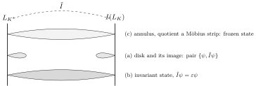
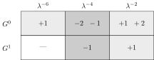
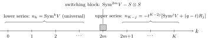

\[ \newcommand{\ydA}{{\scriptsize\begin{aligned}&\square\end{aligned}}} \newcommand{\ydAA}{{\scriptsize\begin{aligned}&\square\\[-0.55em]&\square\end{aligned}}} \newcommand{\ydAAA}{{\scriptsize\begin{aligned}&\square\\[-0.55em]&\square\\[-0.55em]&\square\end{aligned}}} \newcommand{\ydB}{{\scriptsize\begin{aligned}&\square\!\!\;\square\end{aligned}}} \newcommand{\ydBA}{{\scriptsize\begin{aligned}&\square\!\!\;\square\\[-0.55em]&\square\end{aligned}}} \newcommand{\ydC}{{\scriptsize\begin{aligned}&\square\!\!\;\square\!\!\;\square\end{aligned}}} \]
1 Introduction
1.1 Background and questions
The \(\mathrm{U}(N)\) Chern–Simons theory on \(S^3\) is dual, at large \(N\), to the closed topological string on the resolved conifold (Gopakumar and Vafa 1999), and its Wilson loops are dual to open topological strings ending on Lagrangian branes (Ooguri and Vafa 2000). In (Ooguri and Vafa 2000) the generating function of the colored HOMFLY-PT invariants of a knot was reformulated as a free energy of such open strings, whose expansion is governed by integer BPS invariants; the integrality and the structure of this expansion were sharpened in (Labastida and Marino 2001; Labastida et al. 2000; Labastida and Marino 2002) to what are now called the LMOV invariants (after Labastida, Mariño, Ooguri and Vafa), with the reformulation in terms of the matrix \(M\) and the Adams operations that we use below. For \(\mathrm{SO}(N)\) and \(\mathrm{Sp}(N)\) the dual theory is the topological string on an orientifold of the Calabi–Yau (Sinha and Vafa 2000). In the orientifold the BPS states are M2-branes wrapped on surfaces that may be non-orientable; the crosscap number \(c \in \{0, 1, 2\}\) counts the crosscaps of the surface, \(c = 0\) being the oriented states that also exist on the cover. It was conjectured in (Marino 2010), and verified there in many examples, that the colored Kauffman invariant of \(\mathrm{SO}(N)\) minus one half of the \(\mathrm{U}(N)\) invariant in composite representations is expressed through integer BPS invariants with \(c = 1, 2\) (see also (Bouchard et al. 2004, 2005; Paul et al. 2010; Stevan 2010; Nawata et al. 2014)). Reformulated \(\mathrm{SO}(N)\) link invariants with integer coefficients were obtained earlier in (Borhade and Ramadevi 2005), an orthogonal version of the LMOV conjecture was formulated mathematically and proved in special cases in (Chen and Chen 2010), and the integrality was tested for arborescent knots with up to two boxes in (Mironov et al. 2017). The unoriented topological string and its BPS expansion were developed further as the real topological string (Walcher 2009; Krefl and Walcher 2009), which has an M-theory interpretation (Piazzalunga and Uranga 2014). On the homological side, a Kauffman homology and superpolynomials for two-strand torus knots were proposed in (Gukov and Walcher 2005), and the relation between \(\mathrm{SO}\)/\(\mathrm{Sp}\) invariants, composite representations and BPS states was studied in (Gukov and Stošić 2012).
Refined Chern–Simons theory was formulated in (Aganagic and Shakirov 2015). For torus knots in the fundamental representation its invariants were found there to equal the Poincaré polynomial of the homology categorifying the HOMFLY-PT polynomial, the superpolynomial of (Dunfield et al. 2006), whose interpretation as a space of BPS states goes back to (Gukov et al. 2005); superpolynomials of torus knots have also been constructed from DAHA (Cherednik 2013), by substituting Macdonald polynomials for characters (Dunin-Barkowski et al. 2013), from Hilbert schemes (Oblomkov et al. 2018; Gorsky and Negut 2015) and from the rational DAHA (Gorsky et al. 2014). For the Hopf link, homological invariants were obtained from the refined topological vertex (Iqbal et al. 2009) in (Gukov et al. 2010) and related to the \(S\)-matrix of refined Chern–Simons theory in (Iqbal and Kozcaz 2012) (see also (Mironov and Morozov 2020)). In (Kameyama and Nawata 2023) a refined large \(N\) duality was formulated for torus knots: the \(\mathrm{U}(N)\) refined Chern–Simons invariants are reformulated into refined BPS invariants on the resolved conifold, which were conjectured there to be non-negative integers and found to be so in the examples computed. Positivity is expected because refinement resolves the BPS index by an additional spin: the cancellations of \((-1)^F\) in the unrefined index are undone and the coefficients become numbers of states. In (Aganagic and Schaeffer 2012) the refined topological string on an orientifold was defined as an M-theory index, the \(\mathrm{SO}(2N)\) refined Chern–Simons invariants were computed, and the closed-string free energy at large \(N\) was shown to satisfy the integrality of second quantization. The closed \(\mathrm{SO}\) and \(\mathrm{Sp}\) free energies were organized with multiple sine functions in (Avetisyan and Mkrtchyan 2022). For open strings, i.e., for knots, to our knowledge neither a formula extracting refined crosscap BPS invariants nor a test of their integrality has been available.
The purpose of this paper is to supply both. We ask how a refined crosscap invariant is to be extracted from the \(\mathrm{SO}(2N)\) refined Chern–Simons invariants, and whether it has an integral BPS expansion and, if so, with what structure (a universal factor, the dependence on the winding number \(d\), boundary factors). We then ask whether positivity becomes visible after refinement, in the sense that the coefficients align in sign in a suitable multiplet basis, and where this holds and where it fails. Finally, we ask how the invariant is related to the \(\mathrm{U}(2N-1)\) cover, how much of the crosscap structure the cover determines, and what remains open for higher representations.
1.2 Grading of statements
Statements are graded as follows. Propositions and corollaries are derived analytically, possibly under an explicitly stated hypothesis. A Result is a statement verified by computer, with the range of verification stated; negative outcomes of computations are reported as results as well, and are marked as such. Conjectures are closed forms or structures suggested by computation beyond the verified range. Hypotheses are rules that could not be taken directly from the literature; we say which verification supports them. Throughout, (open) marks a point left open. Computational methods and the verification ranges of the interpolations are collected in Appendix A. Abbreviations: DAHA (double affine Hecke algebra), LMOV (Labastida–Mariño–Ooguri–Vafa), TN (Taub–NUT), CoHA (cohomological Hall algebra).
1.3 Main results
The refined crosscap invariant is \(g = f - \tfrac12 f^{\mathrm{cov}}\) (Definition 1), where \(f\) is the free energy of the \(\mathrm{SO}(2N)\) refined invariants assembled with the dual Cauchy kernel of Koornwinder polynomials (Mimachi 2001), and \(f^{\mathrm{cov}}\) is the free energy of the A-type invariants of the cover in ordinary and composite representations (Hypothesis 1). Both are taken in a uniform normalization fixed by determinant shifts and charge conjugation, and the BPS basis is reached with the reformulation matrix \(M(q^{-1})\) of (Marino 2010). The normalization freedoms and how each is fixed are listed in Table 2. The definition is the subject of §2.
The structure of \(g\) follows from the M-theory index (§3). Under a classification of one-particle states modeled on (Aganagic and Schaeffer 2012) (Hypothesis 3), the index gives \(g = \tfrac12 E/(1+t) + C\) (Proposition 2), with \(E\) present only in sectors with equal numbers of brane and image boxes and with boundary factor \(z_q^{n-1}(z_q^+)^n\) (Proposition 3); the separation of \(E\) and \(C\) is not determined by the index (Proposition 4). Computing DAHA-Jones polynomials at generic \(t\) and interpolating in \(N\), we obtain \(g\) at general \(N\) for the trefoil with up to four boxes and for \(T(2,5)\), \(T(2,7)\), \(T(2,9)\) with two and three boxes (§6). Adopting the iterated DAHA-Jones polynomials of (Cherednik and Danilenko 2016) as the definition, we also obtain it for the \((2,13)\)-cable of the trefoil (fundamental representation and two boxes) and the \((2,15)\)-cable (fundamental representation), which we denote by \(\mathcal{C}_{13}\) and \(\mathcal{C}_{15}\) (§7). In every case the \(N\)-dependent poles cancel; \(g\) is an integer Laurent polynomial in odd sectors and \(2(1+t)g\) is one in even sectors, the \((1+t)\) sitting where Proposition 2 predicts; and the refined part is divisible by the universal factor \((\boldsymbol{t}^2 - 1)(\boldsymbol{a}^2 - \boldsymbol{q}^2)\) (Conjecture 3).
As for the signs, for the fundamental representation of \(T(2,2m+1)\), \(m \le 5\), the \(c = 1\) part has a \(G\)-expansion whose \(\lambda^\beta\) blocks have a common sign or are \((\boldsymbol{t}^2-1)\) times such a block, and the \(c = 2\) part is \(-(\boldsymbol{a}^2 - \boldsymbol{q}^2)(\boldsymbol{t}^2 - 1)\) times a positive polynomial (Result 10); we conjecture this sign property for all \(m\) (Conjecture 2, §5). It fails for \(T(3,4)\), where the \(c = 1\) part is not \(\sigma\)-symmetric (§5.4), and for the cables (§7). For higher representations of the crosscap part the \(c = 1\) part is not \(\sigma\)-symmetric and the signs do not align (§10).
The cover is studied in §9. For the trefoil and \(T(2,5)\) with up to two boxes, its brane–brane sector coincides with the refined LMOV invariants of (Kameyama and Nawata 2023) and has aligned signs. Its brane–image sector is the source of \(E\), and for two-strand torus knots we identify it, conjecturally, as a space of states whose only sign mixing is the subtraction of pairs in one block: the blocks are \(\mathrm{Sym}^kV\), \(\mathrm{Sym}^{2m}V - S\otimes S\) and corrections \(F_{j'}\) (Conjecture 4, checked for \(T(2,3)\)–\(T(2,15)\)). The generating function of the blocks is expressed through the rows of the fundamental and adjoint representations by an identity (Proposition 5); for fourteen torus knots we find that the block at which the universal series ends is \(\mathrm{Sym}^{2\delta}V\) minus the square of the top two rows of the fundamental representation (Result 21). From this identification, fitted on \(T(2,3)\)–\(T(2,9)\), \(E\) is predicted for \(T(2,11)\)–\(T(2,15)\).
With the \(C_N\) DAHA, the refined \(\mathrm{Sp}(2N)\) invariants of (Avetisyan and Mkrtchyan 2022) satisfy \(g^{\mathrm{Sp}}(\boldsymbol{a}) = -g^{\mathrm{SO}}(-\boldsymbol{a})\) in the fundamental representation of \(T(2,3)\) and \(T(2,5)\), and \(W_R^{\mathrm{Sp}}(\boldsymbol{a}) = (-1)^{|R|}W_R^{\mathrm{SO}}(-\boldsymbol{a})\) for the trefoil with two boxes, refined versions of the classical \(\mathrm{Sp}(N) = \mathrm{SO}(-N)\) correspondence (§8). What remains open is the structure of the multi-box invariants: the \(\sigma\)-asymmetry of the \(c = 1\) part splits into a part present in the unrefined theory and a \(\sigma\)-odd part divisible by \((\boldsymbol{t}^2 - 1)(q_\ell- q_\ell^{-1})\). Since the cover is well behaved, we conjecture that the obstruction lies in the multiplet structure of the frozen states (§11). The range covered by the computations is summarized in Table 1.
| Object | Integer | Universal factor | Sign property / notes |
|---|---|---|---|
| Unknot, Hopf link (\(a, b \le 4\)) | yes | yes | \(\hat g_{R,\ydA}\) aligned; \(\hat C_{R,S}\): Result 7 |
| \(T(2,2m+1)\), fundamental (\(m \le 5\)) | yes | yes | holds |
| \(T(2,2m+1)\), fixed \(N = 2, 3\) (\(|R| \le 3\), \(m \le 3\)) | yes (hatted) | — | not testable at fixed \(N\) |
| Trefoil, two boxes | \(2(1+t)g\) | yes | signs mixed (Table 3) |
| \(T(2,5)\), \(T(2,7)\), \(T(2,9)\), two boxes | \(2(1+t)g\) | yes | signs mixed |
| Trefoil, \(T(2,5)\), \(T(2,7)\), \(T(2,9)\), three boxes | yes (no \((1+t)\) pole; hatted integer) | yes | signs mixed |
| Trefoil, four boxes | \(2(1+t)g\) (\((1+t)\) only in \(p_4\), \(p_2^2\)) | yes | signs mixed |
| \(T(3,4)\), fundamental | yes | yes | fails: \(c = 1\) not \(\sigma\)-symmetric (\(c = 2\) part aligned) |
| Cables \(\mathcal{C}_{13}\), \(\mathcal{C}_{15}\), fundamental | yes | yes | fails: \(c = 1\) not \(\sigma\)-symmetric, refined \(c = 2\) part mixed |
| \(\mathcal{C}_{13}\), two boxes | \(2(1+t)g\) | yes | signs mixed |
| Cover, brane–brane (trefoil, \(T(2,5)\), \(|R| \le 2\)) | yes (equals (Kameyama and Nawata 2023)) | — | all blocks aligned |
| Cover, brane–image (\(\mathcal{N}\); \(T(2,3)\), \(T(2,5)\), \(T(2,7)\)) | yes | — | aligned except the switching block for \(T(2,5)\), \(T(2,7)\) |
| Refined \(\mathrm{Sp}(2N)\): \(T(2,3)\), \(T(2,5)\) fundamental; trefoil two boxes | yes (same structure as \(\mathrm{SO}\)) | — | \(g^{\mathrm{Sp}}(\boldsymbol{a}) = -g^{\mathrm{SO}}(-\boldsymbol{a})\); \(W^{\mathrm{Sp}}_R(\boldsymbol{a}) = (-1)^{|R|}W^{\mathrm{SO}}_R(-\boldsymbol{a})\) |
The paper is organized as follows. In §2 we fix variables and terminology, the kernel and the normalization, and define the refined crosscap invariant. In §3 we derive the all-\(d\) structure, the boundary factors and the conditions that fix \(E\) from the orientifold index. The unknot and the Hopf link are treated in §4, the fundamental representation of torus knots and the sign property in §5, the integrality and the universal factor at general \(N\) for higher representations in §6, the algebraic cables in §7 and the refined \(\mathrm{Sp}(2N)\) invariants in §8. In §9 we split the cover into brane and image, §10 collects the obstructions for multi-box crosscap invariants, and §11 summarizes the status of the statements and the open problems. Appendix A describes the computations, Appendix B the closed-string check, Appendix C further structure of the fixed sector of the cover, and Appendix D the generated tables of invariants.
2 Refined crosscap invariants
2.1 Variables and terminology
We use the following variables; the unrefined limit is \(t = q\).
| \(\text{symbol}\) | meaning |
|---|---|
| \(q,\ t\) | variables of refined Chern–Simons theory (as in (Kameyama and Nawata 2023)); half-integer powers \(q^{1/2}, t^{1/2}\) are written as such |
| \(\lambda = t^{N - 1/2}\) | Kauffman variable (the \(\lambda\) of (Nawata et al. 2014) and the \(\nu\) of (Marino 2010)); \(N\) is the rank of \(D_N\) and \(t^N = \lambda t^{1/2}\). At \(t = q\) it is the \(\lambda = q_{\mathrm{NRZ}}^{2N-1}\) of (Nawata et al. 2014) (\(q_{\mathrm{NRZ}} = q^{1/2}\)); at large \(N\) it is treated as a formal variable |
| \(\tilde\lambda= \lambda\, q_r\) | shifted Kauffman variable (\(-\boldsymbol{a}\boldsymbol{t}\) in bold variables) |
| \(a = \lambda^2 = t^{N_A},\ N_A = 2N - 1\) | Kähler variable of the cover \(\mathrm{U}(N_A)\) (the \(a = t^{N_A}\) of (Kameyama and Nawata 2023)) |
| $(, , ) = (t^{ | 1/2}, -q_r, )$ bold variables; \(\boldsymbol{q}, \boldsymbol{t}\) as in (Kameyama and Nawata 2023) (\(q^{1/2} = -\boldsymbol{q}\boldsymbol{t}\), \(t^{1/2} = \boldsymbol{q}\)), \(\boldsymbol{a}= \lambda\) as in (Aganagic and Schaeffer 2012). The \(\boldsymbol{a}\) of the cover in (Kameyama and Nawata 2023) is defined by \(a = -\boldsymbol{a}_{\mathrm{KN}}^2\boldsymbol{t}\), so \(\boldsymbol{a}_{\mathrm{KN}} = \boldsymbol{a}\,(t/q)^{1/4}\) |
| \(q_\ell= (qt)^{1/2},\ q_r= (q/t)^{1/2}\) | the \(q_\ell, q_r\) of (Kameyama and Nawata 2023) (\(q = q_\ell q_r\), \(t = q_\ell/q_r\)); \(q_r\) is the \(w\) of (Avetisyan and Mkrtchyan 2022) |
| \(z_q = q^{1/2} - q^{-1/2},\ z_t = t^{1/2} - t^{-1/2}\) | \(z_q^+ = q^{1/2} + q^{-1/2}\) |
| \(G = z_q z_t = q_\ell+ q_\ell^{-1} - q_r- q_r^{-1}\) | variable of the \(G\)-expansion; \((\boldsymbol{q}\boldsymbol{t}- \boldsymbol{q}^{-1}\boldsymbol{t}^{-1})(\boldsymbol{q}- \boldsymbol{q}^{-1}) = -G\) in (Kameyama and Nawata 2023) |
| \(\sigma\colon q \mapsto t^{-1},\ t \mapsto q^{-1}\) | \(q_\ell\mapsto q_\ell^{-1}\) with \(q_r\) and \(\lambda\) fixed; \(G\) is invariant |
| \(\mathop{\mathrm{mirror}}\) | \(\lambda \mapsto \lambda^{-1}\), \(q \mapsto q^{-1}\), \(t \mapsto t^{-1}\) (the mirror image of the knot) |
| \(\delta\) | the Seifert genus of the knot: \(\delta = m\) for \(T(2,2m+1)\), \((r-1)(s-1)/2\) for \(T(r,s)\); for thin knots it equals the \(\delta\)-degree \(\deg_{\boldsymbol{a}} + \tfrac12\deg_{\boldsymbol{q}} - \deg_{\boldsymbol{t}}\) of the superpolynomial |
At \(t = q\) the variables of (Marino 2010) are \(t_M = q^{1/2}\) and \(z = z_q\), and the \(q_{\mathrm{NRZ}}\) of the Kauffman polynomial \(F_R(K; \lambda, q_{\mathrm{NRZ}})\) of (Nawata et al. 2014) is also \(q^{1/2}\). Young diagrams are written \(R, \mu, \nu\) (never \(\lambda\)); in displayed formulas we draw them, e.g., \(g_{\ydB}\), and in the text we write \((2)\), \((1,1)\) for the same diagrams; \((1)\) is the fundamental representation. Composite representations of \(\mathrm{U}(N_A)\) are written \((\alpha;\bar\beta)\), the adjoint being \((1;\bar1)\). Some letters are reused with a local meaning that is stated where they occur (e.g., \(r, s\) in \(T(r,s)\), the \((Q, T, \mathsf X)\) of (Avetisyan and Mkrtchyan 2022) in Appendix B).
We use the following terminology throughout. An invariant depending on \(\lambda\) is split into its coefficients of \(\lambda^\beta\), the \(\lambda^\beta\) blocks; since \(\boldsymbol{a}= \lambda\), we also call them \(\boldsymbol{a}\) blocks. A block is aligned if all its coefficients (in the stated variables) have the same sign, and mixed otherwise. For the fundamental representation the \(c = 2\) part is the part with odd powers of \(\boldsymbol{a}\) and the \(c = 1\) part the part with even powers (Definition 2); for hatted multi-box invariants the parity rule depends on the representation (Result 24). The hatted invariants are the BPS-basis invariants \(\hat g = M(q^{-1})^{-1}g\) of Definition 1, and the refined part of an invariant \(\hat g\) is \(X_1 = \hat g - \hat g|_{t=q}(\lambda \to \tilde\lambda)\), the difference from the unrefined invariant with the Kähler variable shifted (§6.4). The fixed sector and the frozen states are defined in §3.1, and the switching block in §9.2.
A \(\sigma\)-symmetric Laurent polynomial in \(q_\ell^{1/2}, q_r^{1/2}\) with integer powers of \(q_\ell\) is a polynomial in \(G\) with coefficients in \(\mathbb{Z}[q_r^{\pm1/2}]\); writing it so is its \(G\)-expansion (Definition 3). Conversely, since \(G\) and \(q_r\) are \(\sigma\)-invariant, only \(\sigma\)-symmetric polynomials have a \(G\)-expansion. This is the refined counterpart of an unrefined fact: a Laurent polynomial in \(q^{1/2}\) is a polynomial in \(z = q^{1/2} - q^{-1/2}\) if and only if it is invariant under \(q^{1/2} \to -q^{-1/2}\), i.e., its integer powers of \(q\) are symmetric and its half-integer powers antisymmetric under \(q \leftrightarrow 1/q\); the even powers of \(z\) are the \(c = 1\) part and the odd powers the \(c = 2\) part of (Marino 2010). The expansion in genus is therefore conditional on a symmetry in both theories. The difference is that the unrefined symmetry holds for the invariants of (Marino 2010), whereas \(\sigma\)-symmetry of the refined crosscap invariant holds only in the cases stated in §5 and fails in those of §5.4 and §10.2.
2.2 Refined \(\mathrm{SO}(2N)\) invariants and the dual Cauchy kernel
In the \(\mathrm{SO}(2N)\) refined Chern–Simons theory of (Aganagic and Schaeffer 2012), the Wilson loop in a representation \(R\) is given by a Macdonald polynomial of type \(D_N\), which is the specialization \(K_R(x; q, t; 1, -1, q^{1/2}, -q^{1/2})\) of the Koornwinder polynomial (Koornwinder 1992) (see (Diejen 1996; Sahi 1999)); the refined unknot \(\dim_R\) of (Aganagic and Schaeffer 2012) is its principal specialization \(x = (1, t, \dots, t^{N-1})\) (checked for six representations with \(|R| \le 3\), Appendix A). The dimension \(\dim_R\) is not a Laurent polynomial in \(t^N\): for \((2)\) it has the denominator \((1 - qt^{N-1})\) and for \((1,1)\) the denominator \((1 - qt^{2N-3})\); both cancel at \(t = q\).
Result 1 (failure of the naive refinement; negative) If the construction of (Marino 2010) is refined as it stands (bosonic Cauchy kernel, the factor \(\tfrac12\), the sum over odd \(d\)), the poles in \(U = t^N\) fail to cancel already for the two-box unknot. The composite \((1;\bar1)\) contributes only in the \(p_1^2\) direction, whereas the poles of the \(D_N\) representations \((2)\) and \((1,1)\) sit at different places (\(t^N = t/q\) and \(t^{2N} = t^3/q\)). None of five choices of weights and three choices of basis removes the mismatch.
We therefore use the dual Cauchy identity for Koornwinder polynomials (Mimachi 2001), \[ \sum_{\mu \subseteq m^n} (-1)^{|\mu|} K_{m^n - \mu}(x; q, t)\, K_{\mu'}(y; t, q) = \prod_{i, j} x_i^{-1}(1 - x_i y_j)(1 - x_i y_j^{-1}), \tag{1}\] in which the holonomy side carries the \(D_n\)-type parameters \((\pm1, \pm q^{1/2})\) of (Aganagic and Schaeffer 2012) and the probe side the parameters \((\pm 1, \pm t'^{1/2})\) for \((q', t') = (t, q)\). We read it as the Ooguri–Vafa kernel of the refined orientifold and set, for probe variables \(Y = (y_1, y_2, \dots)\), \[ \tilde Z(Y) = \Bigl\langle \prod_{\alpha, i} (1 - y_\alpha x_i)(1 - y_\alpha x_i^{-1}) \Bigr\rangle_{\mathrm{SO}(2N)},\qquad \log \tilde Z = \sum_{d \ge 1} \frac1d \sum_R f_R(q^d, t^d, \lambda^d)\, s_R(Y^d). \tag{2}\] Here \(\langle F(x)\rangle_{\mathrm{SO}(2N)}\) is the linear map that expands a class function \(F\) of the holonomy eigenvalues \(x = (x_1, \dots, x_N)\) in Koornwinder polynomials \(K_\mu(x; q, t; 1, -1, q^{1/2}, -q^{1/2})\) and replaces each term by the refined Chern–Simons knot invariant \(W_\mu(K)\) (normalized as in §2.4): \(F = \sum_\mu c_\mu K_\mu(x)\) gives \(\langle F\rangle := \sum_\mu c_\mu W_\mu(K)\). In the unrefined theory this is the path-integral expectation value of the Wilson loop, in which \(x\) is integrated out. The sum in (2) runs over all \(d\) (“all-\(d\)”), whereas in (Marino 2010) it runs over odd \(d\); the two are related in (11) below.
Since \((1 - x_iy_j^{-1}) = -x_iy_j^{-1}(1 - y_jx_i^{-1})\), the right-hand side of (1) with \(n = N\) equals \((-1)^{Nm}(\prod_j y_j)^{-N}\prod_{i,j}(1 - y_jx_i)(1 - y_jx_i^{-1})\). Reading the identity with \(m\) probes on the \(y\) side and \(N\) holonomies on the \(x\) side, and relabeling the summation by the partition \(m^N - \mu\) on the holonomy side (so that \((-1)^{|\mu|}\) becomes \((-1)^{Nm - |\mu|}\), which cancels the sign \((-1)^{Nm}\)), the kernel of (2) is therefore \[ \begin{aligned} \tilde Z(Y) &= \sum_{\mu \subseteq m^N} (-1)^{|\mu|}\, W_\mu(K)\, \hat K_{\mu'}(Y; t, q; U),\\ \hat K_{\mu'}(Y; t, q; U) &:= \Bigl(\prod_\alpha y_\alpha\Bigr)^N K_{N^m - \mu'}(Y; t, q; 1, -1, q^{1/2}, -q^{1/2}),\qquad U = t^N. \end{aligned} \tag{3}\] The expansion runs over Koornwinder polynomials of type \((t, q)\) on the probe side; the complement in the rectangle \(N^m\) multiplied by \((\prod y)^N\) is a virtual Koornwinder polynomial (Rains 2005; Rains and Warnaar 2021), which depends on \(N\) only through \(U = t^N\). The kernel in (2) has no prefactor, so setting \(y_{m+1} = 0\) reduces the \((m+1)\)-probe kernel to the \(m\)-probe one; hence \(\log\tilde Z\) is a well-defined symmetric function of \(Y\), and the coefficient \(f_R\) does not depend on the number of probes once \(m \ge \ell(R)\).
The coefficients \(f_R\) are extracted as follows. Write \(\log\tilde Z = \sum_\rho L_\rho\, p_\rho(Y)\) in the power-sum basis. Since \(s_R(Y^d) = \sum_\rho \chi_R(\rho) z_\rho^{-1} p_{d\rho}(Y)\), where \(d\rho\) multiplies every part of \(\rho\) by \(d\), (2) gives \(L_\rho = \sum_{d \mid \rho} d^{-1} z_{\rho/d}^{-1} f_{\rho/d}(q^d, t^d, \lambda^d)\) with the power-sum components \(f_\rho := \sum_R \chi_R(\rho) f_R\), the sum over \(d\) running over the common divisors of the parts of \(\rho\). Möbius inversion in \(d\) and the inverse character transform give \[ \frac{f_\rho(q,t,\lambda)}{z_\rho} = \sum_{d \mid \rho} \frac{\mu(d)}{d}\, L_{\rho/d}(q^d, t^d, \lambda^d),\qquad f_R = \sum_\rho \frac{\chi_R(\rho)}{z_\rho}\, f_\rho , \tag{4}\] with \(\mu\) the Möbius function and \(z_\rho\) the order of the centralizer of the cycle type \(\rho\). We speak of the “\(p_2\) direction” or “\(p_1^2\) direction” of a two-box invariant for the components \(f_{(2)}\) and \(f_{(1,1)}\). In the actual computation (Appendix A) the kernel \(\prod_{\alpha,i}(1 - y_\alpha x_i)(1 - y_\alpha x_i^{-1}) = \exp(-\sum_d p_d(Y)S_d(x)/d)\), \(S_d(x) = \sum_i(x_i^d + x_i^{-d})\), is expanded in \(K_\mu(x)\) by evaluating at the points \(x = t^\rho q^\nu\), where \(S_d(t^\rho q^\nu)\) is a rational function of \(U\); this is why \(U\) can be treated as a formal variable. The sign \((-1)^{|\mu|}\) in (3) is the hallmark of a fermionic kernel. For the unknot \(W_\mu = K_\mu(t^\rho) = \dim_\mu\) and (3) reduces to the dual Cauchy identity evaluated at \(x = t^\rho\), which is a product (§2.5).
2.3 Definition and computational scheme
For the cover \(\mathrm{U}(N_A)\), \(N_A = 2N-1\), we define \(f^{\mathrm{cov}}_R\) by the same kernel \(\prod_{\alpha,i}(1 - y_\alpha x_i)(1 - y_\alpha x_i^{-1})\) with the same extraction (4). Since both \(x\) and \(x^{-1}\) enter, the expansion basis consists of Macdonald characters of composite representations \((\alpha; \bar\beta)\), and \(\langle P_\alpha(x) P_\beta(x^{-1})\rangle\) is evaluated by decomposing into composite values and contraction terms (§6). The part of the kernel with \(|Y| \le 2\) is expressed through ordinary representations of \(\mathrm{U}(N_A)\) and the adjoint composite \((1;\bar1)\); at degree three the composites \((2;\bar1)\) and \((1,1;\bar1)\) appear as well. In (Marino 2010) the subtracted term is the \(\mathrm{U}(N)\) invariant in composite representations evaluated at the \(\mathrm{SO}(N)\) value of the Kähler variable; by the invariance under determinant shifts of Result 2 this is the same as the \(\mathrm{U}(N_A)\) invariant used here.
Hypothesis 1 (the cover) The oriented part of the orientifold theory is given by the A-type refined Chern–Simons invariants of the cover \(\mathrm{U}(N_A)\) in ordinary and composite representations, in the uniform normalization of §2.4. This is the refined version of the construction of (Marino 2010); for the fundamental representation it takes the explicit form of Hypothesis 6.
Definition 1 (refined crosscap invariant) In the all-\(d\) definition (2) we set \(g_R = f_R - \tfrac12 f^{\mathrm{cov}}_R\), and the hatted (BPS-basis) invariant is \(\hat g = M(q^{-1})^{-1} g\), where \[ M(x)_{RS} = \sum_{\mu \vdash |R|} \frac{\chi_R(\mu)\chi_S(\mu)}{z_\mu}\,\frac{\prod_i \bigl(x^{-\mu_i/2} - x^{\mu_i/2}\bigr)}{x^{-1/2} - x^{1/2}} , \tag{5}\] with a single denominator for the whole product. In the power-sum basis \(M(x)\) is diagonal with entries \(\prod_i(x^{-\mu_i/2} - x^{\mu_i/2})/(x^{-1/2} - x^{1/2})\); at \(x = q^{-1}\) these are \(z_q\) for \(\mu = (1,1)\) and \(z_q^+\) for \(\mu = (2)\), and in the Schur basis \((\ydB, \ydAA)\) \[ M(q^{-1}) = \begin{pmatrix} q^{1/2} & -q^{-1/2} \\ -q^{-1/2} & q^{1/2} \end{pmatrix},\qquad M(q^{-1})^{-1} = \frac{1}{q - q^{-1}}\begin{pmatrix} q^{1/2} & q^{-1/2} \\ q^{-1/2} & q^{1/2} \end{pmatrix}. \tag{6}\] \(M(x)\) is the matrix \(M(x)\) of (Kameyama and Nawata 2023); it equals the reformulation matrix of (Marino 2010), written with \(t_M = x^{-1/2}\) and divided by the one-box factor \(t_M - t_M^{-1}\) so that \(M_{\ydA\ydA} = 1\).
The choice of \(M(q^{-1})\) is forced by the Hopf link: with \(M(t)\) or \(M(t^{-1})\) in its place the Hopf link invariants are not Laurent polynomials, and \(M(q)\) exchanges \(R \leftrightarrow R^T\). The two formulations of (Kameyama and Nawata 2023) (the \(q\)-side with the Macdonald Cauchy kernel and \(M(t)\), the \(t\)-side with the dual Cauchy kernel and \(M(q^{-1})\)) give the same hatted invariants with two boxes (Result 12).
The invariant \(g_R\) is computed in three steps: \(f_R\) from the \(\mathrm{SO}(2N)\) invariants \(W^{\mathrm{SO}}_\mu\) (\(|\mu| \le |R|\), type \(D_N\)) by (2) and (4); \(f^{\mathrm{cov}}_R\) from the A-type invariants of the cover (ordinary representations, the adjoint, and for three boxes \((2;\bar1), (1,1;\bar1)\) with contraction terms) in the same way; and \(g_R = f_R - \tfrac12 f^{\mathrm{cov}}_R\), hatted with \(M(q^{-1})^{-1}\). The invariant \(f_R\) closes on the \(\mathrm{SO}\) side and \(f^{\mathrm{cov}}_R\) contains no \(\mathrm{SO}\) data. Why the difference \(g\), and not \(f\) itself, is the quantity with a BPS expansion is explained in §3.2. Writing the cover with two sets of probes, brane (\(Y\)) and image (\(Y'\)), \(f^{\mathrm{cov}}\) splits into a brane–brane part (the invariant of (Kameyama and Nawata 2023) itself) and a brane–image part (the connected part of the composites), see §9.
2.4 Normalization
The input \(\mathrm{U}(n)\) refined invariants, normalized by conditions (N1) and (N2) of (Kameyama and Nawata 2023), change by powers of \((q/t)\) under determinant shifts and charge conjugation. With \(\delta\) the Seifert genus (§2.1) we set \[ W_R = (t/q)^{\delta |R|/2}\, \mathcal{R}_R\, P_R(t^\rho), \tag{7}\] where \(\mathcal{R}_R\) is the reduced invariant (the refined invariant divided by that of the unknot, computed in §6 from DAHA-Jones polynomials) and \(P_R(t^\rho)\) the Macdonald dimension. Throughout, \(P_R(t^\rho)\) denotes the principal specialization of the Macdonald polynomial of \(\mathrm{U}(n)\), and \(K_R(t^\rho) = \dim_R\) that of the \(D_N\) Koornwinder polynomial of §2.2; on the \(\mathrm{SO}\) side the reduced invariant is \(\mathcal{R}_R = W_R/K_R(t^\rho)\), with no factor \((t/q)^{\delta|R|/2}\) (Result 9).
Result 2 The normalization (7) has the following properties. The invariant \(W\) is exactly invariant under the determinant shift \(R \to R + 1^n\) and under charge conjugation; this was checked for 16 pairs for the trefoil (\(\mathrm{U}(2)\)–\(\mathrm{U}(5)\)), 13 pairs each for \(T(2,5)\) and \(T(2,7)\), and seven double-twist knots. At fixed \(N\) (\(N = 2, 3\), \(|R| \le 3\)), fixing the framing monomial by requiring the cancellation of \(N\)-dependent poles and the value \(1\) at \(t = q\) gives the monomial \(1\) on both the \(\mathrm{SO}\) side and the cover side (\(T(2,3), T(2,5), T(2,7)\)), and within the family \((t/q)^{\beta/2}\) the exponent \(\beta\) is unique. The DAHA-Jones polynomials (vertical framing) agree with \(W\) up to powers of the framing eigenvalue (§6). At \(t = q\) the normalization is the standard framing of (Marino 2010).
Hypothesis 2 The uniform normalization (7) is the normalization at framing zero.
The normalization of the inputs involves several freedoms. Table 2 lists each of them, how it was fixed, and which checks were made afterwards and did not enter the fixing. The number of fitted quantities is small (one monomial per knot and side, the exponent \(\delta\), and the constant \(\mathsf{c}_K\) of (18)), while the subsequent checks involve all coefficients of the invariants at many values of \(N\) and of the representation; in particular the integrality of \(g_R\) at general \(N\) (§6) is not used anywhere in the fixing.
| freedom | fixed by | checked afterwards (not used in fixing) |
|---|---|---|
| cover given by A-type invariants (Hypothesis 1) — (hypothesis) | cancellation of \(N\)-dependent poles fixes the | framing monomial uniquely; integrality of \(g_R\) at general \(N\); agreement with (Marino 2010) at \(t = q\) |
| framing monomial of the \(\mathrm{SO}\) side, \(T_R^{-F}\) | pole cancellation in \(g_{\ydA}\) and the Kauffman form at \(t = q\) for \(T(2,2m+1)\) (Result 9); read off at \(N = 2, 3\) for cables agreement with the fixed-\(N\) data for all \(N\), \(R\) | computed; the rule \(F = rs\) (torus knots), \(F = \mathsf{p}\mathsf{q}\) (cables, §7) |
| factor \((t/q)^{\delta|R|/2}\) of the cover | invariance under determinant shift and charge conjugation (Result 2) framing monomials at fixed \(N\) are \(1\); $ | a$ equals the genus for all knots used |
| \(\mathrm{U}(1)\) factor \(t^{\mathsf{c}_K|b|(N-1)}\) of \(\mathrm{GL}_N\), (18) read off from \((1), (2), (1,1)\) | predicted for \((3), (2,1), (1,1,1)\), the adjoint a | nd composites (Result 27) |
| reformulation matrix \(M(q^{-1})\) | Laurent property of the Hopf link invariants | agreement of the \(q\)- and \(t\)-side of (Kameyama and Nawata 2023) |
2.5 The unknot
Proposition 1 For the unknot, \(f_{10} = (1 - t^N)(t^N + t)/(t^N(t-1))\) and \(f_{a0} = 0\) for \(a \ge 2\) (the first index counts probes on the knot, the second on a second component, cf. §4). In terms of \(\lambda\), \[ f_{10} = -1 - \frac{\lambda - \lambda^{-1}}{t^{1/2} - t^{-1/2}}, \tag{8}\] and the product formula is \(\prod_j (y_j; t)_\infty (t y_j/U; t)_\infty / \bigl((U y_j; t)_\infty (t y_j; t)_\infty\bigr)\).
Proof. At \(x = t^\rho\), \(x_k = t^{N-k}\), the kernel is \(\prod_j\prod_{k=1}^{N}(1 - t^{N-k}y_j)(1 - t^{k-N}y_j)\); take the logarithm and apply (4).
The right-hand side of (8) is the sum of the unknot of (Marino 2010), \((\lambda - \lambda^{-1})/z\), and the crosscap term \(-1\). In our conventions \(g_{\ydA}\) is minus the mirror of the crosscap invariant of (Marino 2010) (Result 14), so \(-1\) corresponds to the value \(g_{\ydA} = 1\) of (Marino 2010) for the unknot. Neither the factor \(\tfrac12\) nor the restriction to odd \(d\) is needed to obtain the product formula.
3 The orientifold index and the all-\(d\) structure
3.1 Setup
Following §3 of (Aganagic and Schaeffer 2012), M-theory on \(\mathcal{X} \times \mathrm{TN} \times S^1\), with \(\mathcal X\) the resolved conifold, is twisted by \((q, t)\). The orientifold action \(\tilde I\) is the composition of an antiholomorphic involution \(I\) of \(\mathcal X\) with \(z_2 \to -z_2\) in spacetime. The probe of a knot \(K\) is an M5-brane extended along the \(z_2\) plane (a \(t\)-brane: the open-string denominator is \(1/(1-t)\)). On the cover there are two of them, \(L_K\) and its image \(I(L_K)\); see Figure 1. The space of one-particle states on the cover is \(H_1 = H_{\mathrm{int}} \otimes F_{z_2}\), where \(F_{z_2}\) consists of the modes \(t^l\), \(l \ge 0\), in the \(z_2\) direction, on which \(\tilde I\) acts by \((-1)^l\). A sector of the generating function is labeled by the numbers of boxes (total windings) on \(L_K\) and on \(I(L_K)\); a sector is fixed when \(\tilde I\) maps it to itself, i.e., when the two numbers are equal. States that exist only in the quotient, frozen at \(z_2 = 0\) and wrapped on non-orientable surfaces, are called frozen states.

Hypothesis 3 (classification of one-particle states) The one-particle states of the quotient are the \(\tilde I\)-orbits on the cover and fall into three classes: (a) pairs \(\{\psi, \tilde I\psi\}\) exchanged by \(\tilde I\), carrying the full tower of modes; (b) invariant states \(\tilde I\psi = \varepsilon\psi\) (\(\varepsilon = \pm 1\)), carrying only the modes with \((-1)^l\varepsilon = 1\); and (c) frozen states, carrying no tower of modes. This is the classification underlying the product formula (3.13) of (Aganagic and Schaeffer 2012) for closed strings, extrapolated to open strings.
3.2 All-\(d\) structure
Proposition 2 Under Hypothesis 3, writing \(\omega_\psi\) for the charge (the monomial in \(q, t, \lambda\)) of a state \(\psi\), \[ g = f - \tfrac12 f^{\mathrm{cov}} = \frac12\,\frac{E}{1+t} + C,\qquad E = \sum_{\text{invariant}} \varepsilon_\psi\, \omega_\psi,\qquad C = \sum_{\text{frozen}} \omega_\psi . \tag{9}\]
Proof. The index of the cover is \(f^{\mathrm{cov}} = \sum_{\text{pairs}} 2\omega/(1-t) + \sum_{\text{invariant}} \omega/(1-t)\), that of the quotient is \(f = \sum_{\text{pairs}} \omega/(1-t) + \sum_{\text{invariant}} \omega \sum_{(-1)^l\varepsilon = 1} t^l + \sum_{\text{frozen}} \omega\). Substitute \(\sum_{(-1)^l\varepsilon = 1} t^l = \tfrac12[1/(1-t) + \varepsilon/(1+t)]\).
The proof shows why the \(\mathrm{SO}\) free energy \(f\) itself is not the object to expand in BPS numbers. It is a superposition of three kinds of states whose towers of modes differ: pairs carry the full tower \(1/(1-t)\), invariant states only the modes of one parity, and frozen states no tower. No single prefactor turns \(f\) into a count of states; accordingly \(f_R\) has no \(N\)-dependent poles but is not a Laurent polynomial: its denominator is a monomial times \((1-t)\) for one box and \((1-t)(1+t)\) for two boxes, with integer numerator (computed for the trefoil and \(T(2,5)\)). Subtracting \(\tfrac12 f^{\mathrm{cov}}\) removes the pairs and the \(1/(1-t)\) half of the invariant states, which belong to the oriented theory and contain no new information (the brane–brane part is the invariant of (Kameyama and Nawata 2023), §9.2), and leaves the two terms of (9), each with a definite meaning. At \(t = q\) this is the subtraction of (Marino 2010), whose integrality conjecture concerns \(g\) and not the Kauffman invariant itself.
Remark 1. Remark 9. Invariant states exist only in fixed sectors; hence \(E\) appears only there. If \(\tilde I\) acts as the exchange of brane and image, its trace enters the power-sum basis in the \(p_2\)-type direction (the Adams operation \(\psi^2\)), and \(E_{\ydB} = -E_{\ydAA}\). The latter is consistent with the computations for the Hopf link (Result 6) and for knots with two boxes (Result 12).
Remark 2. Remark 10 (trace form). Equation (9) can be written as a trace: \(f = \mathrm{Tr}_{H_1^{\mathrm{cov}}}(P_+\cdot) + C\) with the projection \(P_+ = \tfrac12(1 + \tilde I)\), and \(\mathrm{Tr}(\tilde I\cdot) = \sum_{\text{invariant}}\varepsilon\omega\sum_l(-t)^l = E/(1+t)\), so \(g = \tfrac12\mathrm{Tr}_{H_1^{\mathrm{cov}}}(\tilde I\cdot) + C\). Thus \(E\) is a twisted trace over the states of the cover and \(C\) the contribution of states existing only in the quotient. This is the \(\mathrm{SO}(2N)\) analog of the two expressions given in (Witten 2011) (§3.4 there) for the Chern–Simons partition function of a non-simply-laced group: a trace with an outer automorphism inserted over the larger theory, and an ordinary trace over the fixed theory; the \(D\)-type \((2,0)\) theory arises there from M5-branes on \(\mathcal X/\mathbb{Z}_2\) (§5.1.4 of (Witten 2011), Appendix A of (Aganagic and Schaeffer 2012)), which is the five-brane origin of \(\tilde I\). The ambiguity of Proposition 4 below is the ambiguity in splitting one number into these two expressions.
3.3 Action of \(\tilde I\) on boundary zero modes
In §3.2 of (Kameyama and Nawata 2023), a holomorphic curve with \(h\) boundaries carries boundary zero modes \(d\theta_i\), \(i = 1, \dots, h\), with the constraint \(\sum_i d\theta_i = 0\); they span hook representations, and in the \(t\)-brane formulation each independent mode contributes a factor \((1 - q^{-1})\), which we normalize by \(q^{1/2}\) to \(z_q\).
Proposition 3 Assume the boundary zero mode picture of (Kameyama and Nawata 2023) and let \(\tilde I\) exchange the boundaries on \(L_K\) with those on \(I(L_K)\). A \(\tilde I\)-invariant curve lies in a fixed sector and has the same number \(n\) of boundaries on \(L_K\) and on \(I(L_K)\), exchanged in pairs \((\theta_i, \theta_i')\). The sum \(d\theta_i + d\theta_i'\) is \(\tilde I\)-even and the difference \(d\theta_i - d\theta_i'\) is \(\tilde I\)-odd; the constraint \(\sum d\theta = 0\) removes one even mode. In the trace with \(\tilde I\) inserted an odd mode contributes \((1 + q^{-1})\) instead of \((1 - q^{-1})\). Hence \[ \text{boundary factor of } E = z_q^{\,n-1}(z_q^+)^{\,n},\qquad \text{boundary factor of } \Phi:= (1-t)f^{\mathrm{cov}}\big|_{\text{fixed sector}} = z_q^{\,2n-1}. \tag{10}\]
Proof. A curve whose numbers of boxes on \(L_K\) and \(I(L_K)\) differ is mapped by \(\tilde I\) to a different sector and cannot be invariant; for an invariant curve \(\tilde I\) maps boundaries on \(L_K\) bijectively to boundaries on \(I(L_K)\). Multiply \(n-1\) even factors \((1 - q^{-1})\) and \(n\) odd factors \((1 + q^{-1})\) for \(E\), and \(2n - 1\) factors \((1 - q^{-1})\) for \(\Phi\); the normalization by \(q^{1/2}\) turns them into \(z_q\) and \(z_q^+\).
The predictions are compared with the computations in Result 8. What remains unknown is the action of \(\tilde I\) on the moduli part \(H^*(\mathcal{M}_{g,h,\beta})\), i.e., the sign \(\varepsilon\) for each \(\beta\).
3.4 The \(E\)–\(C\) ambiguity and the conditions fixing \(E\)
Proposition 4 For any integer Laurent polynomial \(X\), the replacement \(E \to E + 2(1+t)X\), \(C \to C - X\) leaves \(g\) unchanged. Hence \(g\) determines only the class of \(E\) modulo \(2(1+t)\); in particular \(E\) itself is not determined, while \(E(-1) = [2(1+t)g]_{t=-1}\) is.
Proof. \(\tfrac12 \cdot 2(1+t)X/(1+t) = X\), so the change of \(E\) is compensated by that of \(C\). In terms of states, the following two configurations are indistinguishable in both \(f\) and \(f^{\mathrm{cov}}\): a frozen state \(\omega\) together with two pairs exchanged by \(\tilde I\), one of charge \(\omega\) and one of charge \(\omega t\); and four invariant states \(\omega, \omega, \omega t, \omega t\) with \(\varepsilon = +1\). Both contribute \(2(\omega + \omega t)/(1-t)\) to \(f^{\mathrm{cov}}\) and \(2\omega/(1-t)\) to \(f\).
Corollary 1 The \(p_1^n\) directions of the power-sum basis and the sectors with an odd number of boxes (where \(E = 0\)) are independent of \(E\). In these directions positivity can be tested independently of the \(E\) ambiguity.
The definition \(g^{\mathrm{odd}}\) of (Marino 2010) with \(\sum_{d\ \mathrm{odd}}\) is related to the all-\(d\) definition as follows. Writing the oriented part with all \(d\) and the crosscap part with odd \(d\) only, as in (Marino 2010), and comparing with (2), the terms with even \(d\) of the all-\(d\) expansion are accounted for by the Adams operation on \(g^{\mathrm{odd}}\): \[ g_{ab} = g^{\mathrm{odd}}_{ab} - \tfrac12 g^{\mathrm{odd}}_{a/2, b/2}(x^2), \tag{11}\] where \((x^2)\) denotes the Adams operation \(\psi^2\) on all variables and the second term is present only when \(a, b\) are both even (for a knot, only in the \(p_2\)-type directions). The factor \(4(1+t)(1+t^2)\) appearing in the denominators of the \(\sum_{d\,\mathrm{odd}}\) definition for the Hopf link cancels in the all-\(d\) definition (Result 4).
Two conditions on \(E\) are used throughout the paper. The first, which we call (E1), is \(E|_{t=-1} = [2(1+t)g]_{t=-1}\); it is derived in Proposition 4. The second, (E2), states that at \(t = q\) the frozen sum \(C\) equals the odd-\(d\) crosscap invariant \(g^{\mathrm{odd}}\) of (Marino 2010) with its unknot value subtracted; it is stated as Hypothesis 4.
Hypothesis 4 At \(t = q\) the frozen states reproduce the crosscap BPS invariants of (Marino 2010), and the \(\tilde I\)-invariant states account for the Adams correction in (11). The constant \(-1\) of the unknot (8) is excluded from the Adams correction: for the unknot \(g_{a0} = 0\) for \(a \ge 2\), so \(E = C = 0\) there, and the unknot value of \(g^{\mathrm{odd}}\) (\(-\tfrac12\) in the \(p_2\) direction) is subtracted from \(C\), as in the comparison with (Marino 2010) in Result 14.
Hypothesis 4 fixes the ambiguity of Proposition 4 at \(t = q\). By (9) and (11), in a sector \((a,b)\) with \(a, b\) even it reads \(E|_{t=q} = -(1+q)\,\psi^2 g^{\mathrm{odd}}_{a/2,b/2}\); for the two-box \(p_2\) direction of a knot, \(E|_{t=q} = -(1+q)\,\psi^2(g_{\ydA} + 1)\), where \(+1\) is the exclusion of the unknot constant stated in Hypothesis 4. When \(E\) is determined by (E1) and (E2) in this paper, it is by solving these conditions, together with the parity and bound constraints of Appendix A.4, as an integer linear program.
For closed strings the situation is simpler. There are only two kinds of states, \(\mathbb{P}^1\) (an invariant state with \(\varepsilon = +1\)) and \(\mathbb{RP}^2\) (a frozen state), with no cancellation between them, so \(E\) and \(C\) are unique and (9) can be tested directly. The \(D_N\) product formula of the partition function reproduces the three terms of the free energy of (Aganagic and Schaeffer 2012), which are the closed-string version of (9), and the “Klein bottle” term of (Avetisyan and Mkrtchyan 2022) is a rearrangement of the frozen-state term; see Appendix B. The ambiguity of Proposition 4 first arises for open strings.
4 Unknot and Hopf link
4.1 Hopf link
We attach one probe to each component (variables \(y_1\), \(y_2\)) and set \(f_{ab} = \sum_{d | (a,b)} (\mu(d)/d)\, L_{a/d, b/d}(q^d, t^d, \lambda^d)\), where \(L_{ab}\) is the coefficient of \(y_1^a y_2^b\) in \(\log\tilde Z\) (this is (4) for one probe per component). The one-probe computation uses a closed form for the Askey–Wilson coefficients which has not been proved; it is stated as Conjecture 5 in Appendix A.3, and its consequences were checked against the direct computation at \(N = 3, \dots, 8\).
Result 3 For \(a, b \le 4\) one has \(f_{ab} \in \dfrac{1 - q}{1 - t}\,\mathbb{Z}[q^\pm, t^\pm, (t^N)^\pm]\); when \(a, b\) are both even the denominator is \(1 - t^2\). The same integrality holds in the Schur basis \(f_{R,b}\) with infinitely many probes on the first component (\(|R| \le 4\), \(b \le 2\)), whereas in a naive Macdonald basis extra denominators such as \((1 - qt)\) appear. Moreover, \(f_{11} = -f_{10}\, z_q(\tilde\lambda- \tilde\lambda^{-1})\) and \(f_{1b} = f_{11}\,\chi_{b-1}(t^{N-1})\) with \(\chi_m(x) = x^m + x^{m-2} + \dots + x^{-m}\). At \(t = q\) this agrees with \(\hat g_{\ydA,\ydA} = z(\lambda - \lambda^{-1})\) of (Marino 2010) up to the sign and the unknot factor.
Result 4 For \(a, b \le 4\) the denominators of the all-\(d\) invariants \(g_{ab}\) are \(2(1+t)\times\) a monomial in the (even, even) sectors and monomials otherwise.
After refinement the Kähler variable is shifted to \(\tilde\lambda= \lambda (q/t)^{1/2}\). This may be the open-string version of the quantum shift of the Kähler variable in (Avetisyan and Mkrtchyan 2022), but the ratio of shifts does not match the closed-string one. For closed strings the ratio of charges of frozen and oriented states is \(x^2/Q_0 = q_r^{-1}\) (conventions of (Aganagic and Schaeffer 2012), Appendix B), whereas for open strings the ratio of the crosscap variable \(\tilde\lambda^2\) to the cover variable \(\boldsymbol{a}_{\mathrm{KN}}^2 = \lambda^2q_r^{-1}\) is \(q_r^{3}\). Since the correspondence of open and closed variables (\(\lambda^2\) or \(\lambda^{-2}\) with \(Q\)) and the open-string normalization are not yet fixed, we leave this comparison open.
4.2 Crosscap part
On the cover we use the Hopf link of \(\mathrm{U}(N_A)\) refined Chern–Simons theory in composite representations: \(\tfrac12 f^{\mathrm{cov}}_{10} = -(\lambda - \lambda^{-1})/z_t\) and \(\tfrac12 f^{\mathrm{cov}}_{11} = (\lambda - \lambda^{-1})(\tilde\lambda- \tilde\lambda^{-1})z_q/z_t\).
Result 5 For the crosscap part of the Hopf link, \(g_{1b} = z_q(\tilde\lambda- \tilde\lambda^{-1})\,\chi_{b-1}(\tilde\lambda/q^{1/2})\) for \(b \le 4\), so that \(t\) enters only through \(\tilde\lambda\). The hatted invariant \(\hat g_{R,\ydA}\) (\(|R| \le 4\)) is an integer Laurent polynomial: it is \((-1)^d z_q(\tilde\lambda- \tilde\lambda^{-1})\tilde\lambda^{2d-n+1}\) for hooks \(R = (n-d, 1^d)\) and \(0\) otherwise. At \(t = q\) this agrees with \(\hat g_{\ydB,\ydA} = z(\lambda^2 - 1)\), \(\hat g_{\ydAA,\ydA} = z(\lambda^{-2} - 1)\) of (Marino 2010) up to \(R \leftrightarrow R^T\) and an overall sign.
4.3 Determination of \(E_{22}\) and \(E_{24}\)
When the probes of both components are split into an \(x\) side (brane) and a \(1/x\) side (image), the sector \((a,b) = (2,2)\) has a fixed subsector with one brane box and one image box on each component, hence \(n = 2\) pairs of boundaries in the sense of Proposition 3; similarly for \((2,4)\). The index of the cover restricted to this fixed sector is the sum \(\Phi\) over its states. Write \(E = \Phi- 2\Phi_-\), with \(\Phi_-\) the sum over the states with \(\tilde I\)-eigenvalue \(-1\).
Hypothesis 5 The coefficients of the monomials of \(\Phi\) are numbers of states, and \(0 \le (\Phi_-)_\omega/\Phi_\omega \le 1\) for each monomial \(\omega\).
For knots the signs of \(\Phi\) are mixed and Hypothesis 5 cannot be used (§10.4).
Result 6 Under Hypothesis 5, (E1) and (E2), solved as an integer program (Appendix A.4), \[ E_{22} = -z_q (z_q^+)^2(\tilde\lambda- \tilde\lambda^{-1})(t q^{-1/2}\tilde\lambda+ q^{1/2}\tilde\lambda^{-1})\ \ (\text{unique}),\qquad E_{24} = E_{22}\,(\tilde\lambda^2/q + q/\tilde\lambda^2)\ \ (\text{unique}). \tag{12}\] For \((4,4)\) a solution exists but is not unique (164 of the 180 monomials of the fixed sector are free). With many probes on the first component, \(\tilde I\) acts as “exchange of the fixed sector plus Adams operation” and \(E_{R,S} = \sum_{\rho, \sigma\vdash 2} c^R_{2;\rho}c^S_{2;\sigma}\,\varepsilon_{\rho\sigma}\), where \(c^R_{2;\rho}\) are the coefficients of the Adams operation \(\psi^2 s_\rho\) expanded in Schur functions \(s_R\). This was checked for the ten sectors \((R, S)\) with \(|R| \in \{2, 4\}\), \(|S| = 2\) in which the refined part is non-zero (Result 7), and at \(t = -1\) for all \(|R| = |S| = 4\) (25 pairs): solving \(\varepsilon_{\rho\sigma}(-1)\) from 4 of the 25 pairs, the remaining 21 agree.
Compared with \(\Phi_{22} = z_q^3(\tilde\lambda- \tilde\lambda^{-1})(tq^{-1/2}\tilde\lambda- q^{1/2}\tilde\lambda^{-1})\), \(E_{22}\) replaces the difference factor \(z_q^2\) by the sum factor \(-(z_q^+)^2\) and flips the sign in the second factor. This is the form of a twisted trace of \(\tilde I\), which we apply to knots in §10.4.
Result 7 With many probes on the first component (\(|R| \le 4\)) and two boxes on the second (\(|S| \le 2\)), split \(\hat C_{R,S} = M(q^{-1})^{-1}\,(g - \tfrac12E/(1+t))\,M(q^{-1})^{-1\,T}\) into the \(t = q\) part (written in \(\tilde\lambda\)) and the refined part. Among the fourteen components with \(|R| \in \{2,4\}\), \(|S| = 2\), the refined part vanishes for \(\hat C_{(2),(1,1)}\) and \(\hat C_{(1,1),(2)}\) and for two more, leaving ten non-trivial components. In all ten the refined part is divisible by \((\tilde\lambda^2 - q)(q - t)\), which in bold variables is \(\boldsymbol{t}^2(\boldsymbol{a}^2 - \boldsymbol{q}^2)\cdot\boldsymbol{q}^2(\boldsymbol{t}^2 - 1)\), and the \(t = q\) part has aligned signs in each power of \(\tilde\lambda\) in all components. The quotient of the refined part is aligned in 8 of the 10 components; in the transposed pair \(\hat C_{(3,1),(1,1)}\), \(\hat C_{(2,1,1),(2)}\) a factor \(q^{1/2}(1-t)\) enters the \(\tilde\lambda^2\) block and breaks the alignment.
4.4 Boundary factors
Result 8 The boundary factors of Proposition 3 compare with the computations as follows.
| object | \(n\) | boundary factor of \(E\) | boundary factor of \(\Phi\) |
|---|---|---|---|
| Hopf \((2,2)\), \((2,4)\) | 2 | \(z_q(z_q^+)^2\) | \(z_q^3\) |
| unknot with framing \(\mathsf f = 2, 4\) | 1 | \(z_q^+\) | \(z_q\) |
| \(T(2,3)\), \(T(2,5)\), \(p_2\) direction | 1 | \(z_q^+\) | \(z_q\) |
For the Hopf link and the framed unknot \(E\) is determined independently (Result 6 and Result 25) and its boundary factor is read off. For knots \(E\) is determined only modulo \(2(1+t)\), so the statement is one of consistency: the integer programs of §10.4 have solutions only with the boundary factor \(z_q^+\), and the \(E\) constructed in §9.3 has this factor.
5 The sign property for torus knots in the fundamental representation
5.1 Input and the \(h/g\) decomposition
The input is the general formula of §6 of (Aganagic and Schaeffer 2012) for \(T(2,2m+1)\) in the fundamental representation (normalized by the unknot); for \(m = 1\) it is (6.15) there. Under the identifications \(\mathrm{SO}(4) = \mathrm{SU}(2)^2\) and \(\mathrm{SO}(6) = \mathrm{SU}(4)\), (6.15) agrees with the \(\mathrm{U}(n)\) values obtained from the construction of (Gorsky and Negut 2015) (checked exactly at two rational points). At \(t = q\) it agrees with the mirror image of the Kauffman polynomial of (Marino 2010) up to a framing monomial.
Hypothesis 6 (\(h/g\) decomposition) Write \(f_{\ydA}(K) = -W_{\mathrm{SO}}(K) = -\tfrac12 h_{\ydA} + g_{\ydA}\), i.e., \(\tfrac12 f^{\mathrm{cov}}_{\ydA} = -\tfrac12 h_{\ydA}\), with the cover part \[ \tfrac12 h_{\ydA} = \mathcal{P}(\boldsymbol{a}_{\mathrm{KN}}, \boldsymbol{q}, \boldsymbol{t})\,\frac{\lambda - \lambda^{-1}}{\boldsymbol{q}- \boldsymbol{q}^{-1}},\qquad \boldsymbol{a}_{\mathrm{KN}}^2 = a\,(t/q)^{1/2}, \tag{13}\] where \(\mathcal P\) is the superpolynomial of (Dunfield et al. 2006), i.e., the A-type refined Chern–Simons invariant in the fundamental representation (Aganagic and Shakirov 2015). This is Hypothesis 1 for the fundamental representation.
Result 9 For \(m = 1, \dots, 5\) we searched for monomials \(\pm q^{k_1/2} t^{k_2/2} (t^N)^{k_3}\) for which \(g_{\ydA}\) becomes a Laurent polynomial. The only solutions have \(k_3 = -2(2m+1)\) and \(k_1 = -(3m+2)\); \(k_2\) is fixed uniquely to \(k_2 = 7m+4\) by requiring the \(t = q\) limit to have the form of a Kauffman polynomial. The monomial is therefore \(T_{\ydA}^{-2(2m+1)}(q/t)^{\delta/2}\) with \(T_{\ydA} = q^{1/2}t^{N-1}\) and \(\delta = m\). In the uniform normalization the extra \((q/t)^{\delta/2}\) moves to the cover, and the \(\mathrm{SO}\) monomial is exactly \(T_{\ydA}^{-2(2m+1)}\) (full agreement with the data at fixed \(N = 2, 3\) for \(m \le 3\)).
The same factor \(\sqrt{q/t}\) appears for the \(\mathrm{SU}(N)\) trefoil in (Aganagic and Shakirov 2015).
5.2 Results, with the trefoil as an example
Write \(g^{\mathrm{true}}_{\ydA} = -(t/q)^{\delta/2} g_{\ydA}\) for the crosscap part in the uniform normalization, with the sign chosen so that \(g^{\mathrm{true}}_{\ydA} = W_{\mathrm{SO}} - \tfrac12 h_{\ydA}\) and the unknot has \(g^{\mathrm{true}}_{\ydA} = +1\) (in the convention of §2 the unknot has \(g_{\ydA} = -1\), Proposition 1). For the trefoil (\(m = 1\)) it has eleven terms, \[ \begin{aligned} g^{\mathrm{true}}_{\ydA}(T(2,3)) ={}& \boldsymbol{a}^{-6}\boldsymbol{t}^{-4} + \boldsymbol{a}^{-5}(\boldsymbol{q}\boldsymbol{t}^{-2} - \boldsymbol{q}\boldsymbol{t}^{-4}) + \boldsymbol{a}^{-4}(-\boldsymbol{q}^{2}\boldsymbol{t}^{-2} - \boldsymbol{t}^{-2} - \boldsymbol{q}^{-2}\boldsymbol{t}^{-4})\\ &+ \boldsymbol{a}^{-3}(-\boldsymbol{q}^{-1}\boldsymbol{t}^{-2} + \boldsymbol{q}^{-1}\boldsymbol{t}^{-4}) + \boldsymbol{a}^{-2}(\boldsymbol{q}^{2} + \boldsymbol{t}^{-2} + \boldsymbol{q}^{-2}\boldsymbol{t}^{-2}), \end{aligned} \tag{14}\] whose odd powers of \(\boldsymbol{a}\) combine to \(-(\boldsymbol{a}^2 - \boldsymbol{q}^2)(\boldsymbol{t}^2 - 1)\,\boldsymbol{a}^{-5}\boldsymbol{q}^{-1}\boldsymbol{t}^{-4}\) (the \(c = 2\) part) and whose even powers (the \(c = 1\) part) have, in the variables \(G, q_r\), the blocks \(\lambda^{-6}\): \(q_r^{-4}\); \(\lambda^{-4}\): \(-q_r^{-4}(Gq_r+ 2q_r^2 + 1)\); \(\lambda^{-2}\): \(q_r^{-2}(Gq_r+ q_r^2 + 2)\), each with a common sign (Figure 2).
Definition 2 For the fundamental representation the \(c = 2\) part of \(g^{\mathrm{true}}_{\ydA}\) is the part with odd powers of \(\boldsymbol{a}\) and the \(c = 1\) part the part with even powers of \(\boldsymbol{a}\). By the parity (P) of Result 10 the \(c = 1\) part is also the part with integer powers of \(q_\ell\); at \(t = q\) the two parts reduce to the \(c = 1\) and \(c = 2\) contributions of (Marino 2010).

Result 10 For \(m = 1, \dots, 5\), \(g^{\mathrm{true}}_{\ydA}\) is an integer Laurent polynomial (with 11, 27, 49, 77, 111 terms) with the following properties.
(N) \(g^{\mathrm{true}}_{\ydA} = 1\) at the \(\mathrm{SO}(2)\) point \(\boldsymbol{a}^2 = \boldsymbol{q}^2\) (\(\lambda^2 = t\)).
(P) It is invariant under \(\boldsymbol{t}\to -\boldsymbol{t}\).
(\(c{=}2\)) The \(c = 2\) part is \[ -(\boldsymbol{a}^2 - \boldsymbol{q}^2)(\boldsymbol{t}^2 - 1)\,\boldsymbol{a}^{-(4m+1)}\boldsymbol{q}^{-(2m-1)}\boldsymbol{t}^{-4m}\,\Pi_m,\qquad \Pi_m = \sum_{j=0}^{m-1}\boldsymbol{a}^{2j}\boldsymbol{q}^{2(m-1-j)}\boldsymbol{t}^{2j}\sum_{i=0}^{j}(\boldsymbol{q}^4\boldsymbol{t}^2)^i , \tag{15}\] where \(\Pi_m\) has \(m(m+1)/2\) terms, all with coefficient \(+1\).
(\(c{=}1\)) The \(c = 1\) part is \(\sigma\)-symmetric and is a polynomial in \(G\) with coefficients in \(\mathbb{Z}[q_r^{\pm1}]\). Each \(\lambda^\beta\) block is of one of four kinds: the block \(\lambda^{-(4m+2)}\) is a positive monomial; the blocks \(\lambda^{-4m}, \dots, \lambda^{-(2m+4)}\) (absent for \(m = 1\)) are \((\boldsymbol{t}^2 - 1)\times\) a block with positive coefficients; the block \(\lambda^{-(2m+2)}\) has all coefficients negative; and the block \(\lambda^{-2m}\) has all coefficients positive.
Conjecture 1 The closed form (15) of the \(c = 2\) part holds for all \(m\). (It was guessed from \(m \le 3\) and confirmed for \(m = 4, 5\).)
At \(t = q\) the \(c = 2\) part vanishes, consistent with the vanishing of the unrefined \(c = 2\) invariants for torus knots in the fundamental representation. The values for \(m = 1, 2, 3\) are listed in Appendix D.1.
5.3 The sign property
The unrefined crosscap BPS numbers are integers whose sign depends on \(\beta\) (e.g., \(\hat g_{\ydA,\ydA} = z(\lambda - \lambda^{-1})\) for the Hopf link in (Marino 2010)). After refinement one expects positivity, which we formulate as follows: in each \(\lambda^\beta\) block the coefficients have a common sign, equal to the unrefined sign \(\varepsilon_\beta\) whenever the block survives at \(t = q\). The expansion in \(G\) used below exists only when the \(c = 1\) part is \(\sigma\)-symmetric (§2.1); this is a property of the knot and the representation, not a general one (see the end of §6.4).
Definition 3 Expand the \(c = 1\) part of the crosscap invariant in the fundamental representation as \[ g^{c=1} = \sum_\beta \lambda^\beta \sum_{g, J} N^{c=1}_{g,\beta,J}\, G^g q_r^{2J},\qquad 2J \in \mathbb{Z}. \tag{16}\] At \(t = q\), \(\sum_J N^{c=1}_{g,\beta,J}\) reduces to the \(N^{c=1}_{g,\beta}\) of (Marino 2010).
For a knot whose unrefined \(c = 2\) invariants vanish, such as a torus knot in the fundamental representation, the whole \(c = 2\) part is its own refined part in the sense of §6.4; in general only the refined part \(X_1^{c=2} = g^{c=2} - g^{c=2}|_{t=q}(\lambda \to \tilde\lambda)\) can be expected to carry the universal factor.
Definition 4 (sign property) We say that a knot \(K\) has the sign property in the fundamental representation if the following two conditions hold. Condition (\(c{=}1\)): the \(c = 1\) part is \(\sigma\)-symmetric, and in its \(G\)-expansion (16) each \(\lambda^\beta\) block has a common sign, equal to \(\varepsilon_\beta\) when the block does not vanish at \(t = q\), or is \((\boldsymbol{t}^2 - 1)\times\) a block with a common sign. Condition (\(c{=}2\)): the refined part of the \(c = 2\) part is \((\boldsymbol{a}^2 - \boldsymbol{q}^2)(\boldsymbol{t}^2 - 1)\times\) a polynomial whose coefficients have a common sign in each \(\boldsymbol{a}\) block.
Conjecture 2 Every two-strand torus knot \(T(2,2m+1)\) has the sign property in the fundamental representation; its \(c = 2\) part is \(-(\boldsymbol{a}^2 - \boldsymbol{q}^2)(\boldsymbol{t}^2 - 1)\times\) a positive polynomial (15).
The evidence is Result 10 (\(m \le 5\)); items (N) and (P) of Result 10 are checks of the normalization, and the content on positivity is in (\(c{=}1\)) and (\(c{=}2\)). The factor \((\boldsymbol{a}^2 - \boldsymbol{q}^2)\) vanishes at the \(\mathrm{SO}(2)\) point, where knot invariants of an abelian group become trivial; \((\boldsymbol{t}^2 - 1)\) follows from vanishing at \(t = q\) together with the parity (P). The sign property is not a property of all knots: it fails for \(T(3,4)\) (§5.4) and for the algebraic cables of §7. Whether the Kauffman superpolynomials of (Gukov and Walcher 2005) for two-strand torus knots, which are positive, are related to our \(c = 1\) part is not examined here (open); we note that the refined \(\mathrm{SO}(2N)\) invariant \(\mathcal{R}_{\ydA}\) itself is not positive in bold variables (§10), so it is not a Poincaré polynomial of a Kauffman homology in these variables.
5.4 Failure of (\(c{=}1\)) for \(T(3,4)\)
Result 11 For the three-strand torus knot \(T(3,4)\) in the fundamental representation (\(\delta = 3\), \(F = 12\); the general-\(N\) invariant is obtained from the \(D_N\) DAHA as in §6), \(g^{\mathrm{true}}_{\ydA}\) is an integer Laurent polynomial, its \(c = 1\) part is symmetric under \(q \leftrightarrow 1/q\) at \(t = q\), and the refined part of the whole \(g^{\mathrm{true}}_{\ydA}\) is divisible by the universal factor with all four \(\boldsymbol{a}\) blocks of the quotient aligned. However, the \(c = 1\) part is not \(\sigma\)-symmetric: the blocks \(\lambda^{-10}\) and \(\lambda^{-8}\) are asymmetric and only \(\lambda^{-6}\) is symmetric, so (\(c{=}1\)) fails. The \(c = 2\) part vanishes at \(t = q\), is divisible by \((\boldsymbol{a}^2-\boldsymbol{q}^2)(\boldsymbol{t}^2-1)\), and the quotient has a common sign in each \(\boldsymbol{a}\) block (\(\boldsymbol{a}^{-11}\) and \(\boldsymbol{a}^{-9}\) with opposite signs), so (\(c{=}2\)) holds. Splitting the \(\sigma\)-asymmetric part of the \(c = 1\) part by Lefschetz weight (§10.3), each block has a common sign in all rows, alternating with \(\beta\); the same pattern occurs for the cables (Result 17).
Thus the \(\sigma\)-symmetry of the \(c = 1\) part, hence the \(G\)-expansion, is specific to two-strand torus knots among the knots examined; what holds for \(T(3,4)\) is integrality, the universal factor and (\(c{=}2\)). Why the \(c = 1\) part is \(\sigma\)-symmetric only for two-strand torus knots is not understood (open).
6 Integrality and the universal factor for higher representations at general \(N\)
6.1 DAHA-Jones polynomials
The multi-box values of refined \(\mathrm{SO}(2N)\) theory cannot be obtained at general \(N\) from the \(\mathrm{SL}(2,\mathbb{Z})\) computation of (Aganagic and Schaeffer 2012). We therefore compute the DAHA-Jones polynomials of (Cherednik 2013), \[ JD_{r,s}(b) = \{\hat\gamma_{r,s}(P_b)\}/P_b(q^{-\rho_k}), \tag{17}\] directly on the polynomial representations of the \(D_N\) and \(\mathrm{GL}_N\) DAHA at generic \(t\). Here \(P_b\) is the Macdonald polynomial of the weight \(b\), \(\hat\gamma_{r,s}\) the lift to the DAHA of an element of \(\mathrm{SL}(2,\mathbb{Z})\) with first column \((r,s)\), and \(\{H\} := (H\cdot 1)(q^{-\rho_k})\) the evaluation of the image of \(1\) under \(H\) at the point \(X = q^{-\rho_k}\), \(\rho_k\) being the deformed half-sum of positive roots. We write \(Z_{r,s}(b) := \{\hat\gamma_{r,s}(P_b)\}\) for the unnormalized value, so that \(JD = Z/P_b(q^{-\rho_k})\). The conventions, the checks of the implementation and the interpolation in \(N\) are described in Appendix A; the composites \((\alpha;\bar\beta)\) of the cover are computed on the \(\mathrm{GL}_N\) side, extending the DAHA computations of composite invariants of (Cherednik and Elliot 2016) to general \(N\) (by interpolation), to the uniform normalization, and to \(|\alpha| = 3\).
For a torus knot \(T(2,n)\), \(n = 2m+1\), set \(F := rs = 2n\) and write the framing eigenvalue of a weight \(b\) as \(T_b = q^{(b,b)/2}t^{(b,\rho)}\). The unnormalized \(D_N\) value \(Z\) equals \(T_R^{-F}\) times the mirror of the fixed-\(N\) invariant \(W_R\) in the uniform normalization; on the \(\mathrm{GL}_N\) side \[ W_b = \mathop{\mathrm{mirror}}\bigl(Z_b/M_b\bigr),\qquad M_b := T_b^{-F}\, t^{\mathsf{c}_K\,|b|(N-1)}, \tag{18}\] with a knot-dependent constant \(\mathsf{c}_K\) (\(\mathsf{c}_K= m+1\) for \(T(2,2m+1)\); for the cables see Result 16). The factor \(t^{\mathsf{c}_K|b|(N-1)}\) was read off from the data of \((1), (2), (1,1)\) and predicted correctly for the other representations (Result 27); we have no derivation of it from the \(\mathrm{U}(1)\) part of \(\mathrm{GL}_N\). The reduced invariant \(\mathcal{R}_R(N) = T_R^{-F}\,\mathop{\mathrm{mirror}}(Z(N))/K_R(t^\rho)\) is interpolated as a Laurent polynomial in \(t^N\) and checked at values of \(N\) not used in the interpolation (Appendix A.2, Table 4). This gives the refined \(\mathrm{SO}(2N)\) invariants at general \(N\) for the trefoil with two to four boxes, and for \(T(2,5)\), \(T(2,7)\), \(T(2,9)\) with two and three boxes.
6.2 Crosscap part at large \(N\)
On the \(\mathrm{SO}\) side with three boxes the kernel is converted to the \(K\) basis with the inverse of the matrix of \(D_N\) Koornwinder polynomials \(K_R\) (\(|R| \le 3\), \(t^N\) formal). The cover is assembled from ordinary representations, the adjoint and composites.
Result 12 The crosscap parts at general \(N\) have the following properties.
With two boxes (trefoil, \(T(2,5)\), \(T(2,7)\), \(T(2,9)\), and \(\mathcal{C}_{13}\) in §7), the denominators of \(g_{\ydB}, g_{\ydAA}\) are \(2\times\) monomial \(\times(1+t)\) and all \(N\)-dependent poles cancel. The combinations \(g_{\ydB} + g_{\ydAA}\) and \((1+t)(g_{\ydB} - g_{\ydAA})\) are integer Laurent polynomials. The \((1+t)\) sits in the \(p_2\) direction only, in agreement with \(E_{\ydB} = -E_{\ydAA}\) of Remark 1. The hatted \(\hat g_{\ydB}\), \(\hat g_{\ydAA}\) keep the denominator \(2(1+t)\times\) monomial, while \(\hat g_{\ydB} + \hat g_{\ydAA}\) is an integer Laurent polynomial.
With three boxes (trefoil, \(T(2,5)\), \(T(2,7)\), \(T(2,9)\)), \(g_{\ydC}, g_{\ydBA}, g_{\ydAAA}\) are integer Laurent polynomials without \((1+t)\) poles, as predicted by Proposition 2 (no \(E\) in odd sectors). The hatted \(\hat g_R\) is also an integer Laurent polynomial for generic \(U\) (with three boxes the all-\(d\) \(g\) equals the odd-\(d\) \(g^{\mathrm{odd}}\) of (Marino 2010)).
With four boxes (trefoil), all \(N\)-dependent poles cancel; the \((1+t)\) poles sit only in the power-sum directions \(p_4\) and \(p_2^2\) (all parts even), as predicted by Proposition 2. The Schur components \(g_R\), \(|R| = 4\), have denominators \(2\times\) monomial \(\times(1+t)\) and \(2(1+t)g_R\) is an integer Laurent polynomial. In the power-sum basis, with \(g_\rho := \sum_R \chi_R(\rho)\,g_R\), the components \(g_{(3,1)}\), \(g_{(2,1,1)}\), \(g_{(1^4)}\) are integer Laurent polynomials and \((1+t)g_{(4)}\), \((1+t)g_{(2,2)}\) are integer Laurent polynomials without the factor \(2\). Accordingly the Schur combinations in which the two \(E\) directions cancel, such as \(g_{(4)} + g_{(3,1)}\), \(g_{(2,1,1)} + g_{(1^4)}\) and \(g_{(4)} - g_{(2,2)} - g_{(2,1,1)}\), are integer Laurent polynomials, as \(g_{\ydB} + g_{\ydAA}\) is for two boxes. As a power series in \(t\) the individual \(g_R\) are not integral; integrality as a series holds for \(f\) and \(f^{\mathrm{cov}}\) separately, not for their difference with the factor \(\tfrac12\). The components of degree \(\le 3\) agree with the three-box values.
The two- and three-box values agree with the fixed-\(N\) values at \(t^N = t^2, t^3\) coefficient by coefficient. For four boxes the cover \(f^{\mathrm{cov}}\) was checked independently: decomposing \(P_\alpha(x)P_\beta(x^{-1})\) irreducibly as polynomials in \(\mathrm{U}(5)\) (\(t^N = t^3\)) and evaluating each component with the uniformly normalized \(\mathrm{U}(5)\) values (mostly constructed as in (Kameyama and Nawata 2023); the seven shapes not available there were computed with the \(\mathrm{GL}_5\) DAHA) reproduces the large-\(N\) \(f^{\mathrm{cov}}\) to degree four. This checks the Pieri coefficients, the interpolation and the assembly independently of the DAHA. Finally, the hatted invariants of the \(q\)-side and the \(t\)-side of (Kameyama and Nawata 2023) agree for the two-box \(\mathrm{SO}\), cover and crosscap parts.
Result 13 (fixed \(N\)) At fixed \(N = 2, 3\), where the \(\mathrm{SO}\) data are obtained from A-type data through \(\mathrm{SO}(4) = \mathrm{SU}(2)^2\) and \(\mathrm{SO}(6) = \mathrm{SU}(4)\), the hatted crosscap invariants of \(T(2,2m+1)\), \(m \le 3\), with \(|R| \le 3\) are integer Laurent polynomials in all power-sum directions. The same holds at \(N = 2\) for seven double-twist knots with \(|R| \le 3\) (using the rectangular formulas of (Kameyama et al. 2020)), together with the uniform normalization of Result 2. At fixed \(N\) the universal factor and the sign property cannot be tested, since \(\lambda\) is not a free variable.
6.3 Dictionary with the unrefined theory at \(t = q\)
Result 14 At \(t = q\) the \(\mathrm{SO}\) invariants \(W_R\) and the cover invariants \(W_S\) agree exactly with the mirror images (\(\lambda \to 1/\lambda\), \(t_M \to 1/t_M\)) of \(G_R, H_S\) of (Marino 2010) (standard framing), for \(R, S \in \{(1), (2), (1,1)\}\). For the crosscap part, \(g_{\ydA} = -\mathop{\mathrm{mirror}}(g^{\mathrm{Mar}}_{\ydA})\). With two boxes, \(-\mathop{\mathrm{mirror}}(\hat g^{\mathrm{Mar}}_R)\) is obtained by converting the all-\(d\) \(g\) to odd \(d\) by (11), subtracting the unknot values \(\mp\tfrac12\), and hatting with \(M(q^{-1})^{-1}\). Our value of \(\hat g_{\ydB}\) for the trefoil differs from (4.8) of (Marino 2010) in the \(z^9\) term only; our computation gives \(z^9(11\lambda^{12} - 78\lambda^{10} + 78\lambda^8 - 11\lambda^6)\), and the integrality of the BPS expansion is consistent with this value, so the printed coefficient appears to be a misprint (Appendix D.5).
The coefficient of \(z^9\) in \(\hat g_{\ydB}\) printed in the equation (4.8) just mentioned is, in our variable, \(-11\lambda^{11} + 78\lambda^9 - 79\lambda^7 + 12\lambda^5\); it repeats the coefficient of \(z^8\) and has odd powers of \(\lambda\), whereas every other odd power of \(z\) in (4.8) comes with even powers of \(\lambda\). The overall sign \(-1\) is a consequence of the dual Cauchy (fermionic) kernel. The exchange \(R \leftrightarrow R^T\) appears at the level of \(g^{\mathrm{odd}}\) (\(g^{\mathrm{odd}}_{\ydB}\) corresponds to the mirror of \(g^{\mathrm{Mar}}_{\ydAA}\)) and cancels in the hatted invariants because the mirror maps \(M(q^{-1}) \leftrightarrow M(q)\).
6.4 Universal factor
For a (hatted) crosscap invariant \(\hat g\) define its refined part \[ X_1 = \hat g - \hat g\big|_{t=q}(\lambda \to \tilde\lambda),\qquad \tilde\lambda= \lambda q_r. \tag{19}\]
Result 15 At the \(\mathrm{SO}(2)\) point \(\lambda^2 = t\) the invariant \(\hat g\) is independent of \(t\), i.e., \(\hat g|_{\lambda^2 = t}\) equals \(\hat g|_{t=q}\) at \(\lambda^2 = q\). Equivalently, \(X_1\) is divisible by \((q - t)(\lambda^2 - t)\) (divisibility by \((q - t)\) is automatic). This holds for the fundamental representation of \(T(2,2m+1)\), \(m \le 5\), for the two-box \(\hat g_{\ydB}, \hat g_{\ydAA}\) and their sum for \(T(2,3)\), \(T(2,5)\), \(T(2,7)\), \(T(2,9)\), for the three-box \(\hat g_R\) of the trefoil, \(T(2,5)\), \(T(2,7)\), \(T(2,9)\), and for \((1+t)\hat g_R\) of the four-box trefoil. In bold variables \((q - t)(\lambda^2 - t) = \boldsymbol{q}^2\,(\boldsymbol{t}^2 - 1)(\boldsymbol{a}^2 - \boldsymbol{q}^2)\), the same factor as in the \(c = 2\) part of the fundamental representation and in \(\hat C_{R,S}\) of the Hopf link.
Since \(\hat g|_{t=q}\) depends on \(\lambda\), the shift in (19) is forced: among \(X_k = \hat g - \hat g|_{t=q}(\lambda \to \lambda q_r^k)\), \(-3 \le k \le 3\), only \(k = +1\) is divisible by \((\lambda^2 - t)\) (checked for the fundamental representation and two boxes of \(T(2,3)\), \(T(2,5)\) and three boxes of the trefoil). At the \(\mathrm{SO}(2)\) point the group is abelian and the unrefined invariant is trivial; whether the \(t\)-independence at this point can be derived (e.g., as a formal continuation to \(N = 1\)) has not been examined (open).
Conjecture 3 Let \(K\) be a knot and \(R\) a Young diagram, and let \(\hat g_R\) be its hatted refined crosscap invariant in the uniform normalization. If \(|R|\) is odd, \(\hat g_R\) is an integer Laurent polynomial and \[ \hat g_R = \hat g_R\big|_{t=q}(\lambda \to \tilde\lambda) + (\boldsymbol{t}^2 - 1)(\boldsymbol{a}^2 - \boldsymbol{q}^2)\cdot(\text{integer Laurent polynomial}). \tag{20}\] If \(|R|\) is even, the same holds with \(\hat g_R\) replaced by \(2(1+t)\hat g_R\) on both sides: \(2(1+t)\hat g_R\) is an integer Laurent polynomial and \[ 2(1+t)\,\hat g_R = \bigl[2(1+q)\,\hat g_R\big|_{t=q}\bigr](\lambda \to \tilde\lambda) + (\boldsymbol{t}^2 - 1)(\boldsymbol{a}^2 - \boldsymbol{q}^2)\cdot(\text{integer Laurent polynomial}). \tag{21}\] The factor \((1+q)\) on the right cancels the pole of \(\hat g_R|_{t=q}\) at \(q = -1\) that comes from the \(p_2\)-type entries of \(M(q^{-1})^{-1}\). For the two-box trefoil the quotient in (21) was computed in this form; (21) is equivalent to the divisibility of \(X_1\) in Result 15 whenever \(\hat g_R|_{t=q}\) vanishes at \(\lambda^2 = q\), which holds for the two-box trefoil.
The evidence is Result 15 (up to four boxes for the trefoil, three boxes for \(T(2,5)\), \(T(2,7)\), \(T(2,9)\)) and Result 17 for the cables.
We close this section with the status of the integrality conjecture of (Marino 2010) after refinement. That conjecture has two layers: the hatted crosscap invariants are Laurent polynomials with integer coefficients, and their expansion in \(z\) defines integers \(\hat N_{R,g,c,\beta}\) labeled by the genus \(g\) and the crosscap number \(c\). After refinement the two layers behave differently.
The first layer survives in the form of Conjecture 3: \(\hat g_R\) for \(|R|\) odd and \(2(1+t)\hat g_R\) for \(|R|\) even are Laurent polynomials with integer coefficients, in the range of Result 12. The factor \(2(1+t)\) is due to the all-\(d\) definition and not to the refinement: at \(t = q\) the all-\(d\) \(\hat g_R\) with \(|R|\) even still has a pole at \(q = -1\), which the odd-\(d\) definition of (Marino 2010) absorbs through (11). In terms of (9) the integers of (Marino 2010) correspond to the frozen states \(C\) and the term with \(2(1+t)\) to the invariant states \(E\) (Hypothesis 4).
The second layer, integers labeled by the genus and by \(c\), does not survive in general. The refined expansion in genus is the \(G\)-expansion, which exists only for \(\sigma\)-symmetric polynomials (§2.1). It is available for the fundamental representation of \(T(2,2m+1)\), \(m \le 5\), where it gives the integers \(N^{c=1}_{g,\beta,J}\) of Definition 3 and the factorized \(c = 2\) part (Result 10). It is not available for \(T(3,4)\) (§5.4), for the cables (§7), or for two and three boxes (Result 23), where the \(c = 1\) part is not \(\sigma\)-symmetric; splitting it into \(\sigma\)-even and \(\sigma\)-odd parts gives \(G\)-expansions with half-integer coefficients (Result 24). For even numbers of boxes there is in addition the fact that the separation of \(E\) and \(C\) is not determined by the index (Proposition 4), so the part to be expanded as a count of frozen states is itself not fixed. The two-box sum and the three-box directions do not contain \(E\), so the failure of the \(G\)-expansion is independent of this ambiguity. A refined analog of \(\hat N_{R,g,c,\beta}\) for higher representations is thus not available (open); what we have there is the first layer, in the range of Result 12, together with the universal factor.
7 Algebraic cables of the trefoil
Beyond torus knots, refined \(\mathrm{SO}(2N)\) invariants have had no definition, since the \(S\) and \(T\) matrices of refined Chern–Simons theory only produce torus knots. For iterated torus knots, the iterated DAHA-Jones polynomial of (Cherednik and Danilenko 2016) is defined for any reduced root system and weight \(b\) by \[ JD_{\vec r,\vec s}(b) = \bigl\{\hat\gamma_1\bigl(\cdots\hat\gamma_{\ell-1}\bigl((\hat\gamma_\ell(P_b)/P_b(q^{-\rho_k}))\!\Downarrow\bigr)\!\Downarrow\cdots\bigr)\bigr\}_{\mathrm{ev}},\qquad H\!\Downarrow\, := H\cdot 1, \tag{22}\] where \(\gamma_\ell\) is the innermost pattern, \(\gamma_1\) the companion, \(\gamma_i\) lifts an element of \(\mathrm{SL}(2,\mathbb{Z})\) with first column \((r_i, s_i)\), and \(\{\cdot\}_{\mathrm{ev}}\) is the evaluation at \(q^{-\rho_k}\); by Theorem 2.4 of (Cherednik and Danilenko 2016) the result does not depend on the choice of lifts. We adopt its \(D_N\) value as the definition of the refined \(\mathrm{SO}(2N)\) invariant of an algebraic cable.
Hypothesis 7 The cover of an algebraic cable is given by the \(\mathrm{GL}_N\) iterated DAHA-Jones polynomials in ordinary and composite representations, normalized by (18) (Hypothesis 1 for cables).
The examples are the \((2, \mathsf{q})\)-cables of the trefoil, \(\mathcal{C}_{13}\) (\(\mathsf{q} = 13\)) and \(\mathcal{C}_{15}\) (\(\mathsf{q} = 15\)), with \(\mathsf{q}\) measured in the Seifert framing of the companion. The pattern word has first column \((2, \mathsf{q} - 12)\), i.e., \(\tau_+\tau_-\) for \((2,1)\) and \(\tau_-\tau_+\tau_-\) for \((2,3)\) in the notation of Appendix A.1, and the companion is the trefoil \(\tau_+\tau_-^2\) (the cable is algebraic if and only if \(\mathsf{q} > 12\)). Non-algebraic cables are not treated. In the companion step the polynomial \(f_1 = \hat\gamma_{\mathrm{pat}}(P_b)\cdot 1\) from the pattern step is applied as \(f_1(\hat\gamma_{\mathrm{comp}}(X))\cdot 1\). For \(D_N\), \(f_1\) is invariant under the Weyl group of \(D_N\) and, for the degrees relevant here (\(\deg f_1 \le 2|b| < N\)), also under that of \(B_N\); it is expanded in a basis \(H_\nu\) of \(B_N\)-symmetric Laurent polynomials indexed by partitions \(\nu\) with \(|\nu| \le \deg f_1\), so that \(JD\) becomes a linear combination of the basis values \(\{\hat\gamma_{\mathrm{comp}}(H_\nu)\}\), computed once per \(N\) and shared between the two cables (the companion is common). The adjoint of the cover is expanded likewise in \(H_\mu(X)H_\nu(X^{-1})\).
Result 16 (normalization and general \(N\) for cables) For the cables \(\mathcal{C}_{13}\) and \(\mathcal{C}_{15}\) the normalization is fixed as follows. The \(\mathrm{GL}_N\) values agree up to a monomial with A-type values of the same cables computed with an independent implementation (\(\mathrm{U}(2)\), \(\mathrm{U}(3)\), \(|b| \le 2\)). The \(D_N\) values differ from the mirror of the fixed-\(N\) \(W_R\) in the uniform normalization, built through \(\mathrm{SO}(4) = \mathrm{SU}(2)^2\) and \(\mathrm{SO}(6) = \mathrm{SU}(4)\), only by \(T_R^{-F}\) with \(F = \mathsf{p}\mathsf{q}\) (\(26\) for \(\mathcal{C}_{13}\), \(30\) for \(\mathcal{C}_{15}\)), for \(N = 2, 3\) in the fundamental representation. This is the torus-knot rule with \(F = rs\) replaced by \(\mathsf{p}\mathsf{q}\). The genus \(\delta\) of (7) is \(8\) (\(\mathcal{C}_{13}\)) and \(9\) (\(\mathcal{C}_{15}\)), from the genus formula \(\delta \mapsto \mathsf{p}\delta + (\mathsf{p}-1)(\mathsf{q}-1)/2\) of a \((\mathsf{p},\mathsf{q})\)-cable. On the \(\mathrm{GL}_N\) side, (18) with \(F = \mathsf{p}\mathsf{q}\) and \(\mathsf{c}_K= 10\) (\(\mathcal{C}_{13}\)), \(12\) (\(\mathcal{C}_{15}\)) holds for six ordinary representations at \(N = 2\)–4; the constants \(\mathsf{c}_K\) are empirical. Since the adjoint has \(|b| = 0\), this fixes its normalization to \(T_{\mathrm{adj}}^{-F}\).
The interpolation in \(N\) (Appendix A.2, Table 5) reproduces the values at the \(N\) not used coefficient by coefficient. For \((1,1)\) of \(\mathcal{C}_{13}\) the cancellations at small \(N\) are strong, and the data for \(N \le 14\) are needed to determine all coefficients (with \(N \le 13\) three degrees in \(q^{1/2}\) remain undetermined). The solution was then checked at \(N = 2, 3\), where the cancellations are strongest, and at \(N = 15\), which was not used in the interpolation; all coefficients agree in each case. The \((1,1)\) of \(\mathcal{C}_{15}\) requires \(N \ge 13\) and the largest basis element \((1,1,1,1)\), which exceeds the memory available to us, so the two-box crosscap part was computed for \(\mathcal{C}_{13}\) only (the \((2)\) and the adjoint of \(\mathcal{C}_{15}\) were interpolated, Table 5, but are not used).
Result 17 (crosscap part of cables at large \(N\)) The crosscap parts of the cables have the following properties.
In the fundamental representation (\(\mathcal{C}_{13}\), \(\mathcal{C}_{15}\)), \(g_{\ydA}\) is an integer Laurent polynomial and its refined part is divisible by the universal factor \((q-t)(\lambda^2-t)\), with 6 of 9 (\(\mathcal{C}_{13}\)) and 8 of 11 (\(\mathcal{C}_{15}\)) \(\boldsymbol{a}\) blocks of the quotient aligned. At \(t = q\) the \(c = 1\) part is symmetric under \(q \leftrightarrow 1/q\), and the \(c = 2\) part does not vanish (the unrefined \(c = 2\) invariants of a cable are non-zero). With two boxes (\(\mathcal{C}_{13}\)) the structure is that of the two-box case of Result 12, and the refined parts of \(\hat g_{\ydA}, \hat g_{\ydB}, \hat g_{\ydAA}\) and of their sum are all divisible by the universal factor. The quotient for the two-box sum has 30 of 50 \(\boldsymbol{a}\) blocks aligned (Table 3).
The sign property (Definition 4) fails. As for (\(c{=}1\)), the \(c = 1\) part is not \(\sigma\)-symmetric; only the extreme blocks (\(\lambda^{-26}, \lambda^{-16}\) for \(\mathcal{C}_{13}\); \(\lambda^{-30}, \lambda^{-28}, \lambda^{-18}\) for \(\mathcal{C}_{15}\)) are symmetric, with aligned signs in their \(G\)-expansions. Splitting the \(\sigma\)-asymmetric part by Lefschetz weight (§10.3), each block has a common sign in all rows, alternating with \(\beta\), as for \(T(3,4)\). As for (\(c{=}2\)), the refined part of the \(c = 2\) part is divisible by the universal factor, but the quotient has mixed signs within the \(\boldsymbol{a}\) blocks (3 of 4 blocks mixed for \(\mathcal{C}_{13}\), 3 of 5 for \(\mathcal{C}_{15}\)); the whole \(c = 2\) part is not divisible by \((\boldsymbol{t}^2 - 1)\), as it must not be since its unrefined limit is non-zero. The refined part of the \(c = 1\) part, by contrast, has aligned signs in every \(\boldsymbol{a}\) block (5 blocks for \(\mathcal{C}_{13}\), 6 for \(\mathcal{C}_{15}\)); the counts 6/9 and 8/11 given above for the fundamental representation are the sums over the two parts.
Thus for the cables what holds is integrality and the universal factor (Conjecture 3), while the sign property fails in both of its parts, in contrast to \(T(3,4)\) where only (\(c{=}1\)) fails (§5.4). Whether the half-degree relation of §10.3 between the \(c = 1\) part and the brane–image sector is modified for these knots has not been examined (open). The normalization of the cover for the cables rests on Hypothesis 7 and on the empirical constants \(\mathsf{c}_K\); the integrality and the universal factor at general \(N\), which were not used in fixing them, are the checks of this choice.
8 Refined \(\mathrm{Sp}(2N)\) and the \(\mathrm{SO}(-N)\) correspondence
The refined Chern–Simons theory of (Avetisyan and Mkrtchyan 2022) is defined for any root system by taking \(k_\alpha = y\) uniformly and \(q_\alpha = q^{(\alpha,\alpha)/2}\); for \(C_N\) the parameter of the long roots becomes \(u = t_{\mathrm{lng}} = t^2\). We implemented the \(C_N\) DAHA of (Cherednik 2013) (\(t = t_{\mathrm{sht}}\), \(u = t_{\mathrm{lng}}\)) on the polynomial representation (checks in Appendix A). In this section the conventions are those of the DAHA side, in which \(g^{\mathrm{true}}_{\ydA} = W_{\mathrm{SO}} - W^{\mathrm{cov}}_{\ydA}\) with \(W^{\mathrm{cov}}_{\ydA}\) the mirror image of \(\tfrac12 h_{\ydA}\) of (13) in the uniform normalization; the relation to the sign conventions of §5 is the mirror of the relation for the crosscap part in Result 14.
Hypothesis 8 The cover of the refined \(\mathrm{Sp}(2N)\) theory is the same function of \(\lambda\) as for \(\mathrm{SO}(2N)\), with \(\lambda = t^{N+1/2}\) (\(a = \lambda^2 = t^{2N+1}\)).
Result 18 For the \(C_N\) DAHA and the refined \(\mathrm{Sp}(2N)\) invariants the following hold. At \(u = 1\) the values agree exactly with the \(D_N\) DAHA-Jones polynomials in the fundamental representation (\(N = 2, 3\); \(T(2,3)\), \(T(2,5)\)). They agree with \(\mathcal{H}^C_{3,2}(\omega_1; q, t, u, a_{\mathrm{C}})\) of (Cherednik 2013) at \(a_{\mathrm{C}} = -t^{N-1}\) up to a monomial (rank \(N = 2, 3, 4\)). From the values at \(N = 2, \dots, 8\) we reconstructed the hyper-polynomials \(\mathcal{H}^C_{2m+1,2}(\omega_1)\) as polynomials in \(a_{\mathrm{C}}\); to our knowledge the formula for \(T(2,5)\) does not appear in (Cherednik 2013) or (Cherednik and Elliot 2016).
In the \(\mathrm{SO}\) convention, with \(W_{\mathrm{SO}} = \mathop{\mathrm{mirror}}[\mathcal{H}^C(u{=}1, a_{\mathrm{C}}{=}-\lambda/t^{1/2})]\cdot\dim_V^{\mathrm{SO}}(\lambda)\cdot(t^{1/2}/\lambda)^{2m}\) the difference \(W_{\mathrm{SO}} - W^{\mathrm{cov}}_{\ydA}\) reproduces the \(g^{\mathrm{true}}_{\ydA}\) of Result 10, and the monomial \((t^{1/2}/\lambda)^{2m}\) is the only one for which it does. For \(\mathrm{Sp}\), with \(a_{\mathrm{C}} = -t^{N-1}\), \(u = t^2\) and Hypothesis 8, the monomial is fixed to the same \((t^{1/2}/\lambda)^{2m}\) as for \(\mathrm{SO}\) by the cancellation of the pole at \(t = 1\) and the Kauffman form at \(t = q\), and for \(T(2,3)\), \(T(2,5)\) \[ g^{\mathrm{Sp}}_{\ydA}(\boldsymbol{a}, \boldsymbol{q}, \boldsymbol{t}) = -\,g^{\mathrm{SO}}_{\ydA}(-\boldsymbol{a}, \boldsymbol{q}, \boldsymbol{t}) \tag{23}\] holds coefficient by coefficient.
Since \(c = 1\) is assigned to even and \(c = 2\) to odd powers of \(\boldsymbol{a}\), (23) says \(C^{\mathrm{Sp}} = -C_{c=1} + C_{c=2}\): the rule of (Marino 2010) that \(\mathrm{SO}\) and \(\mathrm{Sp}\) differ by the sign of the \(c = 1\) terms survives refinement in these two examples. This independently supports the assignment of \(c\), and is, to our knowledge, the first check that the refined \(\mathrm{Sp}(2N)\) theory of (Avetisyan and Mkrtchyan 2022) is consistent for open strings.
The same structure holds with two boxes. The \(C_N\) Macdonald polynomials \(P_{2\varepsilon_1}\), \(P_{\varepsilon_1+\varepsilon_2}\) were obtained from the triangular matrix of the Macdonald operator, and the values at \(N = 2, \dots, 9\) were interpolated as rational functions of \(t^N\) (at \(u = 1\) they agree with the \(D_N\) two-box values and with \(\mathcal{H}^C_{3,2}(\omega_2)\) of (Cherednik 2013) up to a monomial).
Result 19 For the refined \(\mathrm{Sp}(2N)\) trefoil with two boxes, \(g^{\mathrm{Sp}}_{\ydB} + g^{\mathrm{Sp}}_{\ydAA}\) and \((1+t)(g^{\mathrm{Sp}}_{\ydB} - g^{\mathrm{Sp}}_{\ydAA})\) are integer Laurent polynomials, with the same all-\(d\) structure as for \(\mathrm{SO}\) (Proposition 2), and \(E^{\mathrm{Sp}}(t{=}-1) = E^{\mathrm{SO}}(t{=}-1)\) coefficient by coefficient. At the level of colored invariants \(W_R^{\mathrm{Sp}}(\boldsymbol{a}) = (-1)^{|R|}\,W_R^{\mathrm{SO}}(-\boldsymbol{a})\) holds exactly. For the crosscap parts \[ \begin{aligned} f^{\mathrm{Sp}}_{\ydB}(\boldsymbol{a}) - f^{\mathrm{SO}}_{\ydB}(-\boldsymbol{a}) &= \psi^2[\Delta], \qquad f^{\mathrm{Sp}}_{\ydAA}(\boldsymbol{a}) - f^{\mathrm{SO}}_{\ydAA}(-\boldsymbol{a}) = -\psi^2[\Delta], \\ \Delta &= 1 - \mathrm{even}_{\boldsymbol{a}}\big(g^{\mathrm{SO}}_{\ydA}\big) =\frac{(\boldsymbol{a}^2 - \boldsymbol{q}^2)(\boldsymbol{a}^2\boldsymbol{t}^2 - 1)(\boldsymbol{a}^2\boldsymbol{q}^2\boldsymbol{t}^2 - 1)}{\boldsymbol{a}^6\boldsymbol{q}^2\boldsymbol{t}^4}, \end{aligned} \tag{24}\] the same for \(g\), where \(\psi^2\) is the Adams operation squaring \(q, t, \boldsymbol{a}^2\) and \(\mathrm{even}_{\boldsymbol{a}}\) denotes the part with even powers of \(\boldsymbol{a}\) (\(g^{\mathrm{SO}}_{\ydA}\) is the \(g^{\mathrm{true}}_{\ydA}\) of (14); in the sign convention of §2, \(\Delta = \mathrm{even}_{\boldsymbol{a}}(g_{\ydA}) + 1\) up to the factor of the uniform normalization). The hatted \(p_1^2\) component \((g_{\ydB} + g_{\ydAA})/z_q\), denoted \(X\) here, satisfies \(X^{\mathrm{Sp}}(\boldsymbol{a}) = +X^{\mathrm{SO}}(-\boldsymbol{a})\), whereas for the fundamental representation the sign is \(-\), cf. (23).
Relations (23) and (24), obtained for \(T(2,3)\) and \(T(2,5)\) in the fundamental representation and for the trefoil with two boxes, are refined versions of the classical correspondence \(\mathrm{Sp}(N) = \mathrm{SO}(-N)\) with \(R \to R^T\) (Cvitanović 2008; Mkrtchyan and Veselov 2011). Whether they follow from a duality of the \(C_N\) and \(D_N\) DAHA at the level of Koornwinder polynomials has not been examined (open). The two-box computation is restricted to the trefoil (\(T(2,5)\) would need the values for all \(N \le 13\) for the interpolation, beyond the current implementation).
Remark 3. Remark 42. In the power-sum components \(Z_\rho\) of the generating function one finds \(Z_1^{\mathrm{Sp}}(\boldsymbol{a}) = -Z_1^{\mathrm{SO}}(-\boldsymbol{a})\), \(Z_{11}^{\mathrm{Sp}}(\boldsymbol{a}) = Z_{11}^{\mathrm{SO}}(-\boldsymbol{a})\), \(Z_2^{\mathrm{Sp}}(\boldsymbol{a}) = Z_2^{\mathrm{SO}}(-\boldsymbol{a}) + 1\): the sign is \((-1)^{|\rho|}\) and only the \(p_2\) direction is shifted by the constant \(1\), which is the trace of the identity in the conversion to power sums and equals the \(\boldsymbol{a}\)-even part of the unknot crosscap in the fundamental representation (\(+1\) for \(\mathrm{SO}\), \(-1\) for \(\mathrm{Sp}\)). In the difference \(\psi^2[\Delta]\) of \(f\), the piece \(\psi^2[\mathrm{even}(g_{\ydA})]\) arises because the rule for the fundamental representation flips only the sign of the \(\boldsymbol{a}\)-even (\(c = 1\)) part, whereas the even part of the \(d = 2\) Adams term \(\tfrac12\psi^2[f_{\ydA}]\) does not follow this rule; the remaining \(\psi^2[1]\) is the constant shift of \(Z_2\). That \(E\) does not change sign under the projection to \(\mathrm{Sp}\) is consistent with the unrefined correspondence: using \(E_{\ydB} = -E_{\ydAA}\), the sign flip and the transposition cancel. Since \(\psi^2\) (\(\lambda \to \lambda^2\)) does not commute with \(\boldsymbol{a}\to -\boldsymbol{a}\), there is no simple rule at the level of \(f\) and \(g\) in the \(p_2\) direction.
9 Structure of the cover
9.1 Setup
The free energy \(f^{\mathrm{cov}}\) of the cover \(\mathrm{U}(N_A)\) is determined by A-type data alone, and the splitting of the cover described in this section is not needed to compute \(g\). However, the source of \(E\) (states invariant under \(\tilde I\)) lies in the brane–image sector of the cover, so the structure of the cover is needed to read off the structure of \(g\). We split the cover into brane and image, find that the brane–brane sector is the invariant of (Kameyama and Nawata 2023) itself, and identify the brane–image sector as a space of states. Further structure of the fixed sector (other torus knots, composites, the sector with two brane and two image boxes) is collected in Appendix C.
Throughout this section \(a = \lambda^2\), \(q^{1/2}\) and \(t^{1/2}\) are written as such, and \[ \kappa = \frac{(1 - a)(1 - q)}{(1 - t)(1 - qa/t)} \tag{25}\] is the contraction term in the expansion of the adjoint, \(\langle P_{\ydA}(x)P_{\ydA}(x^{-1})\rangle = W_{(1;\bar1)} + \kappa\). We write \(V := 1 + t + qt\) and \(\mathrm{Sym}^kV := h_k(1, t, qt)\) for the complete homogeneous symmetric polynomial in the three weights \(1, t, qt\); \(V\) arises here as the Fock space of three cells generated by the contraction term \(\kappa\) (Proposition 5), and happens to have the three terms of the reduced superpolynomial of the trefoil in suitable variables. For \(T(2,2m+1)\), \(S\) denotes its reduced superpolynomial written in the same variables as \(V\) (so \(S = V\) for the trefoil), and \(\psi^2\) is \((q, t) \to (q^2, t^2)\).
9.2 Splitting into brane and image
Writing the generating function of the cover with brane (\(Y\)) and image (\(Y'\)) probes, we find the following for the two-box trefoil and \(T(2,5)\), and for the brane–image sector with boundary factors removed also for \(T(2,7)\) (all blocks are listed in Appendix D.4; the three-box invariants have not been split).
The brane–brane sector is the \(\mathrm{U}(N_A)\) invariant of (Kameyama and Nawata 2023) itself: up to the factor \((t/q)^{\delta|R|/2}\) of the uniform normalization, \((t^{-1/2} - t^{1/2}) f^{\mathrm{bb}}_R\) agrees coefficient by coefficient with the \(t\)-side \(f^{\bar t}_R\) of (Kameyama and Nawata 2023) (\(a = \lambda^2 = t^{N_A}\), mirror) for \(R = (1), (2), (1,1)\), and the hatted version (the \(p_1^2\) component divided by \(z_q\), the \(p_2\) component by \(z_q^+\), i.e., \(M(q^{-1})\otimes M(q^{-1})\) in the power-sum basis) agrees with \(\hat f\) of (Kameyama and Nawata 2023) with \(R \leftrightarrow R^T\) because of the mirror (trefoil and \(T(2,5)\)). It therefore admits a \(G\)-expansion with aligned signs for all \(\beta\), which is the positivity conjectured in (Kameyama and Nawata 2023).
For the brane–image sector \(\mathcal{B}= W_{(1;\bar1)} + \kappa - W_{\ydA}^2\), \((t^{-1/2} - t^{1/2})\mathcal{B}/z_q\) is an integer Laurent polynomial and \(\sigma\)-symmetric. Most \(\lambda^\beta\) blocks are either aligned or \((\boldsymbol{t}^2 - 1)\times\) aligned; mixed blocks are \(\lambda^{-8}\) for the trefoil and the four central blocks \(\lambda^{-16}\)–\(\lambda^{-10}\) for \(T(2,5)\). The brane–image sector of the oriented cover carries the same universal factor \((\boldsymbol{t}^2 - 1)\) as the crosscap. The division of \(\mathcal{B}\) by \(z_q\) is explained by Proposition 5: \((1-t)\mathcal{B}= t(t - \lambda^2)(\lambda^2 - 1)(q - 1)(\lambda^2 q - 1)\,\mathcal{N}\), where \((q-1)\) is the \(q\)-side factor of the refined measure \((q-1)(t-1)\) of the annular string between brane and image and \((t-1)\) cancels against the tower \(1/(1-t)\). The fixed-sector index of the unknot with framing \(\mathsf f\), \((\lambda^2-1)(q-1)\sum_{k<\mathsf f}(\lambda^2q)^{\mathsf f-1-k}t^k\), carries the same factor. The boundary factors of brane and image are symmetric. The \(\lambda\) boundary factor \((t-\lambda^2)(\lambda^2-1)(\lambda^2q-1)\) alternates in sign between \(\lambda^\beta\) blocks, and most of the mixing of \(\mathcal{B}/z_q\) is due to it. When \(\mathcal{N}\) (with all boundary factors removed) is expanded in \(G\) (Appendix D.4), all blocks are aligned for the trefoil, and only the block \(k = 2m\) (\(\lambda^{-(6+4m)}\)) is mixed for \(T(2,5)\) and \(T(2,7)\). We call it the switching block: it is the block where the universal series \(\mathrm{Sym}^kV\) turns into the knot-dependent part (Conjecture 4), \(n_{2m} = \mathrm{Sym}^{2m}V - S\otimes S\), and \(\mathrm{Sym}^{2m}V\) and \(S\otimes S\) separately have aligned \(G\)-coefficients (\(m \le 3\)). The mixing of the brane–image sector is therefore the structure \(-S\otimes S\) of the space of states itself, a subtraction of pairs of states, distinct both from the non-positivity inherent to the composite values \(R_{\mathrm{adj}}\) (§10.5, (Cherednik and Elliot 2016)) and from the crosscap problem.
9.3 The space of states of the lowest fixed sector
In the lowest fixed sector (brane 1, image 1, written \(n = 1\) after the number of boundary pairs), \(E\) can be constructed from an identification of the space of states. Split the support \(\mathcal{N}\) by powers of \(\lambda^{-2}\) into blocks \(k = 0, \dots, K = 4m-1\) for \(T(2,2m+1)\); the block \(n_k\) is the coefficient of \(\lambda^{-(6+2k)}\) in \(\mathcal{N}\) normalized by \(q^{-(2+k)}\). The blocks \(k \le 2m\) are called the lower series and \(k > 2m\) the upper series (Figure 3).

Conjecture 4 (closed form of the fixed sector) For \(T(2,2m+1)\), with \(K = 4m-1\), \[ \begin{gathered} n_k = \mathrm{Sym}^kV\ (k<2m),\qquad n_{2m} = \mathrm{Sym}^{2m}V - S\otimes S,\\ n_{K-j} = -t^{K-2j}\bigl[\mathrm{Sym}^jV + (q-t)\,R_j\bigr]\ (0 \le j \le 2m-2), \end{gathered} \tag{26}\] where for \(j = m + j' \ge m\) the correction is \(R_{m+j'} = t^{m-1-j'}F_{j'}\) with \(F_{j'}\) independent of the knot, \[ \sum_{j'\ge 0}F_{j'}z^{j'} = \frac{1 + (2t + t^2 + qt + 2qt^2)z + qt^3z^2}{(1-z)(1-qtz)(1-t^2z)(1-q^2t^2z)} \tag{27}\] (\(F_{j'}\) has \(\binom{2j'+3}{3}\) states); the \(R_j\) with \(j < m\) are not covered by (27). The involution \(\tilde I\) acts on \(V\) as the involution \(\mathrm{diag}(1,1,-1)\) (its dual on the upper series), on \(S\otimes S\) as the exchange of factors (trace \(\psi^2 S\)), and on the correction as \((-1)^{m+j'+1}t^{m-1-j'}\psi^2(X_{j'})\) with \(X_{j'} = \mathrm{Sym}^{j'}V + t\,\mathrm{Sym}^{j'-1}V\) (generating function \((1+tz)/((1-z)(1-tz)(1-qtz))\), \((j'+1)^2\) states), the remaining states of \(F_{j'}\) being pairs: \(F_{j'} = \psi^2 X_{j'} + 2P_{j'}\) with \(\sum P_{j'}z^{j'} = tz(V' + qt^2z)/((1-z)(1-qtz)(1-t^2z)(1-q^2t^2z))\), \(V' = 1 + q + qt\). \(E\) is the corresponding trace of \(\tilde I\).
Result 20 Conjecture 4 was obtained as follows and holds in the following range. The blocks (26) agree with the computed \(\mathcal{N}\) coefficient by coefficient for \(T(2,3)\)–\(T(2,15)\), and (27) with \(j' \le 5\). The action of \(\tilde I\) was fitted on \(T(2,3)\)–\(T(2,9)\): for \(T(2,3)\) and \(T(2,5)\) the resulting \(E\) reproduces in every monomial the unique \(E\) determined by (E1) and (E2) with Hypothesis 5 replaced by the sign rule of §10.4, and for \(T(2,9)\) the form of \(X_{2}\) was selected uniquely among 32 variants by the rows and the support of (E1). For \(T(2,11)\), \(T(2,13)\), \(T(2,15)\) the \(E\) so constructed satisfies (E1) and (E2) as a prediction. Comparing monomial by monomial \(\mathcal{N}= (1-t)\mathcal{B}/(t(t-\lambda^2)(\lambda^2-1)(q-1)(\lambda^2q-1))\) and \(\tilde{\mathcal{N}} = E/(t(t-\lambda^2)(\lambda^2+1)(q+1)(\lambda^2q+1))\) with the boundary factors removed, \(|\tilde e_\omega| \le |c_\omega|\) and \(\tilde e_\omega \equiv c_\omega \pmod 2\) hold for all monomials \(\omega\) of \(T(2,3)\)–\(T(2,15)\); in the lower series \(|\tilde e_\omega| = |c_\omega|\) (all states invariant under \(\tilde I\)), and pairs exchanged by \(\tilde I\) first appear at \(k \ge 2m\). Thus \(E\) reads as a signed partial sum of numbers of states. A simpler sign rule (\((-1)^{\deg_q}\) on the lower series and \((-1)^{\deg_t}\) on the upper series) fixes \(E\) for \(T(2,3)\) and \(T(2,5)\) but has no solution for \(T(2,7)\); the plethystic logarithm of (27) has negative coefficients, so the upper series cannot be read as a Fock space of positive BPS generators (Appendix C).
Proposition 5 Let \(\xi = \lambda^{-2}\). Write the mirror of the fundamental representation of the cover, expanded in powers of \(\lambda^{-2}\) (its “\(a\)-rows”), as \(R_{\ydA} = q^{-\delta/2}t^{-\delta/2}\xi^\delta R(\xi)\) with \(R(y) = \sum_j \rho_j y^j\), and the adjoint \((1;\bar1)\) as \(R_{\mathrm{adj}} = q^{-2\delta}\xi^{2\delta}A(\xi)\) with \(A(y) = \sum_j \alpha_j y^j\). Then the blocks of the fixed sector \(\mathcal{N}\) of \(n = 1\) satisfy \[ (q-1)(t-1)\sum_k \bigl(n_k - \mathrm{Sym}^kV\bigr) y^k = y^{2\delta-1}\Bigl[\frac{A(qy)}{1-ty} - \frac{R(qy)^2(1-qy)}{(1-y)(1-qty)}\Bigr]. \tag{28}\] Consequently every block \(n_k\) is a Laurent polynomial in \(q, t\) if and only if \(A - R^2\) is divisible by \((q-1)(t-1)\), i.e., \(A = R^2 + (q-1)(t-1)\Gamma\) with \(\Gamma\) a Laurent polynomial, and then \[ \sum_k n_k y^k = \frac{1 - y^{2\delta}R(qy)^2}{(1-y)(1-ty)(1-qty)} + \frac{y^{2\delta-1}\Gamma(qy)}{1-ty}. \tag{29}\]
Proof. By definition \(\mathcal{N}= (1-t)\bigl[R_{\mathrm{adj}}(d_{\ydA}^2 - \kappa) + \kappa - (t/q)^\delta R_{\ydA}^2 P_{\ydA}^2\bigr]/D\) with \(d_{\ydA}^2 = (\lambda - \lambda^{-1})^2/(t^{1/2} - t^{-1/2})^2\) the square of the quantum dimension of the fundamental representation, \(P_{\ydA} = t^{1/2}\lambda^{-1}(1 - \lambda^2)/(1-t)\) its Macdonald dimension, \((t/q)^\delta\) the factor of the uniform normalization, and \(D = t(t - \lambda^2)(\lambda^2 - 1)(q - 1)(\lambda^2 q - 1)\). Both \(R_{\mathrm{adj}}\) and \((t/q)^\delta R_{\ydA}^2\) carry the prefactor \(q^{-2\delta}\xi^{2\delta} = y^{2\delta}\) with \(y = \xi/q\), so \(\delta\) enters only through this power, and \(\sum_k n_k y^k = q^2\xi^{-3}\mathcal{N}\) written in \(y\) (the normalization of the blocks). The identity (28) is then a rational identity in \(y, q, t\) and the coefficients \(\rho_j, \alpha_j\), which is verified by direct computation (the \(\kappa\) term gives \(\sum_k \mathrm{Sym}^kV\,y^k = 1/((1-y)(1-ty)(1-qty))\)). Since \((1-y)(1-qty) - (1-qy)(1-ty) = -y(q-1)(t-1)\), the bracket in (28) equals \((A(qy) - R(qy)^2)/(1-ty)\) plus a multiple of \((q-1)(t-1)\) with Laurent coefficients, which gives the second statement.
Result 21 For the fourteen torus knots \(T(2,3)\)–\(T(2,15)\), \(T(3,4)\), \(T(3,5)\), \(T(3,7)\), \(T(3,8)\), \(T(3,10)\), \(T(4,5)\), \(T(4,7)\), writing \(\Gamma(y) = \sum_j\gamma_j y^j\), one has \(\gamma_0 = 0\) and \(\gamma_1 = (2\rho_0\rho_1 - \rho_1^2)/q\), so the switching block is \(n_{2\delta} = \mathrm{Sym}^{2\delta}V - (\rho_0 - \rho_1)^2\). The factor of the square is always the top two rows \(\rho_0 - \rho_1\) of the fundamental representation; for two strands this is the reduced superpolynomial (two rows), and for \(T(3,4)\) it is the reduced superpolynomial with its third row \(t^3\) dropped. Since \(\mathcal{N}\) is determined by the cover data of the adjoint and the fundamental representation alone, this factor and \(K = rs - 3\) were predicted correctly for \(T(3,5)\), \(T(3,7)\), \(T(3,8)\), \(T(3,10)\), \(T(4,5)\), \(T(4,7)\). The deepest block is \(n_K = -t^{K-p+2}h_{p-2}(q,t)\) for a torus knot with \(p = 2, 3, 4\) strands, where \(h_k(q,t)\) is the complete homogeneous polynomial in \(q, t\).
For \(n = 1\) the separation of \(E\) and \(C\) (Proposition 4) is thus resolved, conjecturally, by the identification of the space of states. The structure \(S\otimes S\) at the switching block and the corrections \(F_{j'}\) are specific to two-strand torus knots: for \(T(3,4)\) the upper series has a different form (Appendix C). For \(n = 2\) (two brane and two image boxes) \(E\) is determined up to \(\lambda^{-12}\) and undetermined from \(\lambda^{-14}\) on (Appendix C.3).
10 Obstructions for multi-box crosscap invariants
10.1 Interpretation of signs and the sign statistics
BPS numbers are indices with \((-1)^F\), not numbers of states; the positivity conjectured in (Kameyama and Nawata 2023) means that refinement undoes the cancellation of \((-1)^F\) and exposes the numbers of states resolved by spin. For the orientifold, \(\tilde I\) breaks \(\mathrm{SU}(2)_L\times\mathrm{SU}(2)_R\) to \(\mathrm{U}(1)_1\times\mathrm{U}(1)_2\) (Aganagic and Schaeffer 2012), so non-orientable states need not form complete spin multiplets, and in the interpretation of (Piazzalunga and Uranga 2014) the number of frozen states is a difference \(n^+ - n^-\) weighted by the orientifold parity. The positivity question for the crosscap part should therefore be posed as in §5.3: in a suitable multiplet basis, the coefficients of each block align with the unrefined sign \(\varepsilon_\beta\). Positivity is a question at the BPS level: the refined \(\mathrm{SO}(2N)\) Chern–Simons invariants themselves are not positive in bold variables even in the fundamental representation (4 of the 9 terms of \(\mathcal{R}_{\ydA}\) of the trefoil are negative), and it is remarked in (Cherednik 2013) that there is “almost no positivity” for hyper-polynomials of type \(C\)–\(D\) even for the minimal weight.
Result 22 Writing the quotient \(X_1/((\boldsymbol{t}^2-1)(\boldsymbol{a}^2-\boldsymbol{q}^2))\) of the refined part by the universal factor in bold variables, the numbers of \(\boldsymbol{a}\) blocks with aligned signs are those of Table 3. Three alternatives do not align the signs either (negative results). A change of the basis on the right-hand side of the free energy (Hall–Littlewood, \(P_R(Y; q, t)\), \(P_R(Y; t, q)\), \(Q_R\), modified Macdonald) does not help: for the two-box trefoil the \((1,1)\) component in the \(P(Y;t,q)\) basis improves the count to 8/11 (the number of blocks depends on the basis), but for the Hopf link and for three boxes at fixed \(N\) this basis is worse or breaks integrality. Passing to the second-quantized exponents, i.e., the exponents of the product form of \(\tilde Z\) expanded in power series in \(t\) (towers of modes), leaves a fraction of mixed blocks of about 13% for the two-box trefoil (16 of 123, 15 of 110), about 34% for the two-box \(T(2,5)\), 38–44% for the three-box trefoil, 61–66%, 67–71%, 74–77% for the three-box \(T(2,5)\), \(T(2,7)\), \(T(2,9)\), and about 42% for the two-box \(\mathcal{C}_{13}\). Finally, a search for symmetries in \((q^{1/2}, q_r)\), i.e., for a change of multiplet variables, did not align the signs.
| object | aligned blocks / all blocks |
|---|---|
| fundamental, \(T(2,2m+1)\) (\(m \le 5\)) | all |
| fundamental, \(T(3,4)\) | 4/4 |
| fundamental, cables \(\mathcal{C}_{13}\), \(\mathcal{C}_{15}\) | 6/9, 8/11 |
| two-box sum \(\hat g_{\ydB} + \hat g_{\ydAA}\): trefoil, \(T(2,5)\), \(T(2,7)\), \(T(2,9)\) 5/10, 6 | /18, 10/26, 14/34 |
| two-box sum, \(\mathcal{C}_{13}\) | 30/50 |
| three boxes \(\hat g_{\ydC}, \hat g_{\ydBA}, \hat g_{\ydAAA}\): trefoil 2/15, 3/14, | 2/13 |
| three boxes: \(T(2,5)\) | 1/25, 1/24, 1/23 |
| three boxes: \(T(2,7)\); \(T(2,9)\) | 1/35, 1/34, 1/33; 1/45, 1/44, 1/43 |
| four boxes \((1+t)\hat g_R\), trefoil, \(R = (4), (3,1), (2,2), (2,1,1), (1^4)\) | 1/22, 1/21, 2/21, 2/20, 0/18 |
The fraction of aligned blocks decreases as the knot or the number of boxes grows. The aligned blocks concentrate at shallow powers of \(\boldsymbol{a}\): the 30 aligned blocks of the two-box \(\mathcal{C}_{13}\) are \(\boldsymbol{a}^{-32}\)–\(\boldsymbol{a}^{-3}\), all negative, continuing the column \(\boldsymbol{a}^{-8}\)–\(\boldsymbol{a}^{-3}\) aligned for the two-box \(T(2,5)\), while the mixed blocks sit at \(\boldsymbol{a}^{-52}\)–\(\boldsymbol{a}^{-33}\). By Proposition 2 and Corollary 1, the two-box sum and the three-box directions do not depend on \(E\), so the mixing is not caused by the \(E\) ambiguity (the four-box Schur components contain \(E\), so this argument does not cover the four-box rows). We attribute it to an inappropriate multiplet basis for the frozen states \(C\) (a conjecture; we do not exclude that positivity itself fails).
10.2 \(\sigma\)-asymmetry and the failure of the \(G\)-expansion
Result 23 The \(c = 1\) part of the fundamental representation of \(T(2,2m+1)\) is \(\sigma\)-symmetric, but for two and three boxes it is not, whether one takes \(\hat g_R\), the sum, or the odd-\(d\) version, and whether \(c = 1\) is taken as the even powers of \(\lambda\) or with the hatted parity rule of Result 24. The reduced \(\mathrm{SO}\) invariants \(\mathcal{R}_R\) have no symmetry with a monomial ratio under any combination of \(\sigma\), \(q\leftrightarrow t\), mirror, \(\lambda \to \pm\lambda^{\pm1}q_\ell^{c_1}q_r^{c_2}\) (\(|c_1|, |c_2| \le 2\)) and \(R \leftrightarrow R^T\).
Since the \(\mathrm{SO}\) side has no analog of the super-duality of type \(A\), there is no reason for the \(\mathrm{SO}\) \(\hat f\) and \(\hat g\) to be \(\sigma\)-symmetric (the \(\hat f\) of the cover is \(\sigma\)-symmetric for each \(R\)). The asymmetry has two sources.
Result 24 The \(\sigma\)-asymmetry of the multi-box \(c = 1\) part decomposes into two parts.
The first is present already at \(t = q\), where the \(c\) of (Marino 2010) is defined by the parity in \(z = q^{1/2} - q^{-1/2}\) (\(c = 1\) even in \(z\), symmetric under \(q \leftrightarrow 1/q\)). The corresponding parity in \(\lambda\) depends on the power-sum direction: it agrees with “\(c = 1\) \(\Leftrightarrow\) even powers of \(\lambda\)” in the directions without \(p_2\) (fundamental, \(p_1^2\), \(p_3\), \(p_1^3\)) and is opposite in those with \(p_2\) (\(p_2\), \(p_2 p_1\)). For the hatted \(\hat g_R = M(q^{-1})^{-1} g_R\) the \(c = 1\) part is the part with \(\beta \equiv |R| - 1 \pmod 2\) in \(\lambda^\beta\) (even for the fundamental representation, odd for two boxes, even for three; the three-box \(\hat g_R\) of the trefoil is an integer Laurent polynomial for generic \(U\) and all three satisfy this). The \(c = 2\) admixture in the even powers of \(\lambda\) of the \(p_2\) direction has the closed form \(-2 z\,\Delta|_{t=q}\,(q^{4n}-1)/(q-1) \times\) monomial (containing \(\lambda^4 q + \lambda^2(q^2+q+1) + q\) for \(T(2,5)\)), with \(n = 2m+1\) and \(\Delta\) as in (24). This part of the asymmetry is present in the unrefined theory and disappears once the parity rule is applied.
The second is refined: even with the correct \(c = 1\) the refined part is not \(\sigma\)-symmetric; prefactors, products of the fundamental representation, Adams corrections and transposition do not repair this. The \(\sigma\)-odd part is divisible by \(\boldsymbol{q}^2(\boldsymbol{t}^2 - 1)(q_\ell^2 - 1)\), i.e., up to a monomial by \((\boldsymbol{t}^2 - 1)(q_\ell- q_\ell^{-1})\), and vanishes at \(t = q\): \(\hat g^{c=1} = \Sigma_+ + (\boldsymbol{t}^2-1)(q_\ell- q_\ell^{-1})\,\Sigma_-\) with \(\Sigma_\pm\) \(\sigma\)-symmetric and \(G\)-expandable. However \(\Sigma_\pm\) are half-integral, and the \(G\)-expansion of \(\Sigma_-\) is aligned in all blocks (alternating in \(\beta\)) for the trefoil but breaks for \(T(2,5)\). For three boxes, splitting the \(c = 1\) blocks by Lefschetz weight, the signs of the \(\sigma\)-asymmetric part are aligned in almost all blocks and alternate in \(\beta\) for the trefoil, but for \(T(2,5)\), \(T(2,7)\) and \(T(2,9)\) (\(\hat g_{\ydC}, \hat g_{\ydBA}\)) they align only in the lowest block and at most one more.
The factor \((\boldsymbol{t}^2 - 1)\) is the universal factor of \(c = 2\) (a twisted trace of \(\mathrm{SU}(2)_r\)), and \((q_\ell- q_\ell^{-1})\) is odd under the Weyl reflection of the Lefschetz \(\mathrm{SU}(2)_\ell\). The multi-box \(c = 1\) part contains states that are twisted by \(\tilde I\) and have odd Lefschetz spin; the fundamental representation of two-strand torus knots has none. This may be the \(G\)-expansion counterpart of the statement in §10.4 that \(S_R\) does not act trivially in the fixed sector of a knot (a conjecture).
10.3 Origin of the \(\sigma\)-symmetry
In the variables \(q_\ell= (qt)^{1/2}\), \(q_r= (q/t)^{1/2}\) of (Kameyama and Nawata 2023), \(\sigma\colon q\mapsto t^{-1}, t\mapsto q^{-1}\) is \(q_\ell\mapsto q_\ell^{-1}\) with \(q_r\) fixed, the Weyl reflection of the Lefschetz \(\mathrm{SU}(2)_\ell\) acting on the Jacobian. The \(\sigma\)-invariance of \(\hat f\) in (Kameyama and Nawata 2023) comes from the handle zero modes forming \(\mathrm{SU}(2)_\ell\) doublets (each handle contributes \(-(q_\ell+ q_\ell^{-1}) + (q_r+ q_r^{-1})\), which is \(-G\) in our convention, §2.1), and the Lefschetz weight of a monomial is its power of \(q_\ell\). Frozen states are M2-branes wrapped on the non-orientable surface \(\hat\Sigma/I\), which carries no complex structure, so the Lefschetz \(\mathfrak{sl}_2\) does not act on its \(H^1\). There is therefore no reason to expect \(\sigma\)-symmetry of \(C\), and this explains, conjecturally, why the \(c = 1\) part of multi-box invariants has no \(G\)-expansion; the factors \(T_\pm\) of \(G = T_+T_-\) do not help (Appendix B). That the \(c = 1\) part in the fundamental representation is \(\sigma\)-symmetric for two-strand torus knots has a conjectural explanation as well. The \(G\)-degree of the \(\lambda^\beta\) block of the \(c = 1\) part is exactly half the \(G\)-degree of the \(\lambda^{2\beta}\) block of the brane–image sector \((t^{-1/2}-t^{1/2})\mathcal{B}/z_q\) (for all \(\beta\) of \(T(2,3)\) and \(T(2,5)\)). The frozen states in the fundamental representation are quotients of brane–image annuli (Möbius strips); \(g\) handles of the quotient correspond to \(2g\) handles of the cover, and the handles of the quotient carry \(G\). Whether this half-degree relation is modified for \(T(3,4)\) and for the cables, where the \(c = 1\) part is not \(\sigma\)-symmetric, has not been examined (open).
10.4 Separation of \(E\) and \(C\)
By Proposition 4 the separation of \(E\) and \(C\) needs information beyond the index. For the lowest fixed sector of two-strand torus knots it is provided by the identification of the space of states (§9.3). Attempts to determine \(E\) for knots from the index together with conditions (E1), (E2) and various ansätze for the action of \(\tilde I\) (partial sums of states, Adams-type forms, twisted traces with boundary factor \(z_q\) or \(z_q^+\), handle twists, sign rules) succeed for the Hopf link and the framed unknot but not for knots; they are reported in Appendix C.2. For the unknot with framing \(\mathsf f\) the result is unique:
Result 25 For the unknot with framing \(\mathsf f\) the fixed-sector index is \(\Phi(\mathsf f) = (\lambda^2-1)(q-1)\sum_{k<\mathsf f}(\lambda^2q)^{\mathsf f-1-k}t^k\). Imposing only (E1) and “\(C\) integer Laurent at \(t = q\)” and enumerating all candidates, \(E\) is unique for \(\mathsf f = 1, 2, 3\): \[ E(\mathsf f) = (-1)^{\mathsf f}(\lambda^2+1)(q+1)\sum_{k<\mathsf f}(-1)^k(\lambda^2q)^{\mathsf f-1-k}t^k\times\text{monomial}, \tag{30}\] i.e., \(\tilde I\) acts on the \(t\) tower by \((-1)^k\) (\(e^{i\pi J_2}\)).
Here \(J_2\) is the generator of rotations of the \(z_2\) plane, on whose modes \(t^l\) the involution acts by \((-1)^l\) (§3.1), and \(S_R\) is the charge of the additional \(\mathrm{U}(1)_R\) symmetry present for torus knots, in terms of which the refined index weighs a state by \(t^{S_R - J_2}\). Since \(\tilde I = I\otimes e^{i\pi J_2}\), the index sees only the combination \(S_R - J_2\) of the spins. Determining \(E\) for a knot therefore requires splitting the \(t\)-charge of the fixed-sector states into \(J_2\) (sign under \(\tilde I\)) and \(S_R\) (invariant), i.e., the numbers of states before cancellation corresponding to \(\hat N_{\rho,g,\beta,J_r,S_R}\) of (Kameyama and Nawata 2023). For the unknot everything is \(J_2\); for knots, states of equal charge carry different signs (computation, Appendix C.2). Under the assumption of (Kameyama and Nawata 2023) that \(S_R\) acts trivially on BPS states the sign would be fixed by the parity of the charge, so in the brane–image sector of a knot \(S_R\) acts non-trivially (a conjecture). This is the quantum-number form of the ambiguity of Proposition 4.
Integrality gives a constraint on \(E\), which is the refined form of the strong integrality condition recalled at the end of this paragraph. Integrality of \(f = \tfrac12 f^{\mathrm{cov}} + \tfrac12 E/(1+t) + C\) in the all-\(d\) form is equivalent to \(E \equiv \Phi_{\mathrm{inv}} \pmod 2\) coefficient by coefficient, where \(\Phi_{\mathrm{inv}}\) is the index of the invariant states (\(\tfrac12[\Phi_{\mathrm{inv}}(1+t) + E(1-t)]/(1-t^2)\) is an integer series if and only if \(\Phi_{\mathrm{inv}} + E \equiv 0 \pmod 2\)). This is exactly the parity constraint of the integer programs of Appendix A.4. The unrefined form of §4 of (Aganagic and Schaeffer 2012) (agreement mod 2 of the oriented \(f_{\ydA,\ydA}\) with the non-orientable \(f_{\ydA}(q^2)\)) is the shadow of this after \(E\) and \(C\) mix at \(t = q\) through (E2).
10.5 Non-positivity of the composite DAHA
The fixed-sector states come from the value \(R_{\mathrm{adj}}\) of the adjoint \((1;\bar1)\) of the cover. If \(R_{\mathrm{adj}}\) could be read as a Poincaré polynomial of a homology (positive coefficients), the numbers of states before cancellation would follow.
Result 26 (negative) The large-\(N\) \(R_{\mathrm{adj}}\) (the \(\mathrm{GL}_N\) DAHA) has mixed signs even after the bold change of variables of (Kameyama and Nawata 2023) applied with the mirror (7 of 19 terms negative for the trefoil, 25 of 56 for \(T(2,5)\)), and no monomial-parity sign rule (64 rules) aligns the coefficients.
This agrees with the statement in the introduction of (Cherednik and Elliot 2016) that composite DAHA superpolynomials have no positivity. A relation to annular HOMFLY-PT homology is not conjectured there either.
11 Discussion and open problems
We have defined a refined crosscap invariant for the \(\mathrm{SO}(2N)\) refined Chern–Simons theory and examined its integrality, its structure and its signs. The following table lists the main statements with their status: derived, computed in a stated range, hypothetical or conjectural.
| statement | grade | where |
|---|---|---|
| \(g\) is free of \(N\)-dependent poles; integer Laurent in odd sectors, \(2(1+t)g\) integer in even sectors; agrees with (Marino 2010) at \(t = q\) for the fundamental representation and the two-box trefoil | computation | Results 12, 17, 14 |
| all-\(d\) structure \(g = \tfrac12 E/(1+t) + C\), \(E\) only in fixed sectors, boundary factor \(z_q^{n-1}(z_q^+)^n\) | derivation under Hypothesis 3; agrees with computation Propositions 2, 3; Res | ult 8 |
| brane–brane sector \(=\) refined LMOV invariants of (Kameyama and Nawata 2023) | computation (trefoil, \(T(2,5)\)) | §9.2 |
| brane–image sector as a space of states | computation for \(T(2,3)\) to \(T(2,15)\), with a conjectural closed form | Conjecture 4, Result 20 |
| cover given by A-type invariants; uniform normalization is framing zero; classification of states; frozen states match the odd-\(d\) invariants at \(t = q\); cover of cables and of \(\mathrm{Sp}\) | hypotheses | 1, 2, 3, 4, 7, 8 |
| sign property for \(T(2,2m+1)\); closed form of \(\Pi_m\); universal-factor structure | conjectures (checked \(m \le 5\); up to four boxes) | 2, 1, 3 |
The brane–brane sector of the cover agrees coefficient by coefficient with the \(\mathrm{U}(N_A)\) refined LMOV invariants of (Kameyama and Nawata 2023) (§9.2) and therefore has, like them, a \(G\)-expansion with aligned signs. The brane–image sector, after removal of the boundary factors, is aligned except for the \(-S\otimes S\) in the switching block, understood as the subtraction of pairs of states. What breaks is the multi-box crosscap part \(g\), the sector of fixed points of \(\tilde I\), which carries the same universal factor \((\boldsymbol{t}^2 - 1)\). The evidence covers the trefoil and \(T(2,5)\) with two boxes (\(T(2,7)\) for brane–image); the three-box invariants have not been split into brane and image. Thus the positivity problem for refined Kauffman invariants reduces, conjecturally, to adding to the framework of (Kameyama and Nawata 2023) the parity structure of the orientifold: the sign of \(\tilde I\) and the multiplet basis of the frozen states.
Several problems remain open. The first is the multiplet structure of the frozen states. The multi-box \(c = 1\) part is not \(\sigma\)-symmetric and cannot be expanded in \(G\). By Result 24, the component of the asymmetry present in the unrefined theory is removed by the parity rule for \(c\), and the remaining refined \(\sigma\)-odd part is divisible by \((\boldsymbol{t}^2-1)(q_\ell- q_\ell^{-1})\); the \(\sigma\)-even/odd split is half-integral and the signs do not align for \(T(2,5)\), so this split does not suffice for positivity. Going up to \(T(2,9)\) with three boxes, and to four boxes for the trefoil, preserves integrality, the position of the \((1+t)\) poles and the universal factor, while the fraction of aligned blocks decreases (Result 22). The \(G\)-expansion originates in the structure of oriented surfaces (the Lefschetz \(\mathfrak{sl}_2\) on the Hodge decomposition of \(H^1\)), and there is no reason to expect it for frozen states wrapped on non-orientable surfaces (§10.3). Determining the refined handle and crosscap factors of non-orientable surfaces from geometry is the first task.
The second is the separation of \(E\) and \(C\), which is not determined by the index alone (Proposition 4). For the lowest fixed sector of two-strand torus knots it is fixed, conjecturally, by the identification of the space of states (§9.3); for the Hopf link \((4,4)\) it is undetermined, and for the sector with two brane and two image boxes of the trefoil it is fixed only up to \(\lambda^{-12}\) (Appendix C.3). The action on boundary zero modes is fixed (Proposition 3); what remains is the moduli part, i.e., the splitting of the \(t\)-charge into \(J_2\) and \(S_R\), which the index does not provide. That the cohomological Hall module of (Young 2020) is not free over the CoHA is the algebraic form of this ambiguity (for the loop quiver it is determined, consistent with the uniqueness of \(E\) for the framed unknot).
The meaning of the universal factor is only partly understood. The factor \((\boldsymbol{a}^2 - \boldsymbol{q}^2)\) is the \(\mathrm{SO}(2)\) point and \((\boldsymbol{t}^2 - 1)\) is explained by \(t = q\) and parity. Why \(\hat g\) is independent of \(t\) at the \(\mathrm{SO}(2)\) point (Result 15), whether this follows from a formal continuation to \(N = 1\), and the relation of the shift \(\lambda \to \tilde\lambda\) to the tripling of the closed-string Kähler variable in (Avetisyan and Mkrtchyan 2022) (§4, Appendix B), remain unexplained (open).
Beyond two-strand torus knots the picture is incomplete. For iterated torus knots the DAHA of (Cherednik and Danilenko 2016) provides a definition, adopted here for two algebraic cables (§7); the sign property fails there, and what survives is integrality and the universal factor. Why the \(c = 1\) part is \(\sigma\)-symmetric only for two-strand torus knots is not understood (open). The Kauffman superpolynomials of (Gukov and Walcher 2005) are positive for two-strand torus knots; their relation to our \(c = 1\) part has not been examined (open). Non-algebraic cables were not treated, and the two- and three-box invariants of \(\mathcal{C}_{15}\) are out of reach of the present computation.
For the other classical groups, the two-box \(T(2,5)\) of \(\mathrm{Sp}(2N)\) needs the values for all \(N \le 13\), too costly for the present implementation; whether the relations of §8 follow from a duality of the \(C_N\) and \(D_N\) DAHA is open. The closed string of type \(B\) (Avetisyan and Mkrtchyan 2022) has only \(c = 1\) and the denominator \((t^{n/2} + t^{-n/2})\); how type \(B\) fits the classification of Proposition 2 has not been examined.
Finally, a cell model of the brane–image composite sector together with a real structure on it would fix \(E\) from geometry. An exploratory computation with the cell decomposition of (Oblomkov et al. 2018) for the trefoil reproduces its HOMFLY homology but shows that the fixed-sector index \(\Phi= (1-t)\mathcal{B}\) is not the \(\psi^2\) of the fundamental representation of the cover; it factorizes with the same boundary factor \((\lambda^2-1)(q-1)\) as the framed unknot.
Once the multiplet structure of the frozen states is determined, the multi-box sign problem of §10 can be formulated as a multi-box version of the sign property of §5.3.
Acknowledgments
The author used Claude (Anthropic) for computations, literature search and drafting. All results, references and text were checked by the author, who takes full responsibility for the content.
Data and code availability
The invariants reported here were computed with the author’s Python code (Appendix A). The code and the computed data (the interpolated invariants at general \(N\), the fixed-\(N\) values and the logs of all checks) are available at https://github.com/kameyama/refined_lmov. The generated tables of Appendix D are produced automatically from these data.
Appendix A: Computational methods
All computations were done with the author’s Python code (Koornwinder polynomials and the polynomial representations of the DAHA of types \(D_N\), \(C_N\) and \(\mathrm{GL}_N\); rational function arithmetic with FLINT). Its output was checked by the reproduction of the values of (Marino 2010), agreement with Kauffman polynomials at \(t = q\), agreement with direct fixed-\(N\) computations, agreement with the invariants of (Kameyama and Nawata 2023), and the symmetry \(R \leftrightarrow R^T\). Two identifications used as input were verified numerically as checks of the implementation: the dual Cauchy identity (1) for \((n, m) = (1,1), (2,1), (1,2), (2,2), (2,3), (3,2)\), and the identification of the \(D_N\) Macdonald dimension \(\dim_R\) of (Aganagic and Schaeffer 2012) with the principal specialization of the Koornwinder polynomial for the representations \((1), (2), (1,1), (3), (2,1), (1,1,1)\) at \(N = 2, 3\) (against the evaluation formulas of (Diejen 1996; Sahi 1999) and against polynomials constructed by the \(q\)-difference operator).
A.1 DAHA conventions and checks
In (17) the conventions are: \((T_i - t^{1/2})(T_i + t^{-1/2}) = 0\); since the vector representation is minuscule, \(Y_{\varepsilon_1} = \pi_1 T_{u_1}\) with \(\pi_1(X_b) = q^{(\omega_{1*}, b)}X_{u_1^{-1}b}\) (\(\omega_{1*} = \varepsilon_1\) for \(D_N\), \(\omega_{1*} \equiv -\varepsilon_N\) for \(\mathrm{GL}_N\)); \(\tau_-(X) = q^{1/2}YX\), \(\tau_+(Y) = q^{-1/2}XY\), and \(T(2,2m+1)\) corresponds to \(\gamma = \tau_+^m\tau_-^2\). To speed up the computation we use the anti-involution \(\varphi\) exchanging \(X\) and \(Y\), symmetrize over orbits, and share intermediate results between representations. The composites \((\alpha;\bar1)\) of the cover are computed by starting the chain of operators on the \(X\) side from \(\hat\gamma'(p_1(Y))\cdot 1\), where \(\hat\gamma' = \varphi\hat\gamma\varphi\) and \(p_1(Y)\cdot 1\) is built by symmetrization on the \(X^{-1}\) side. For four boxes one needs \(|\alpha| = 3\), where the irreducible decomposition \(P_\alpha(X)p_1(X^{-1}) = P_{(\alpha;\bar1)}(X) + \sum_\mu c_{\alpha,\mu}P_\mu(X)\) (\(\mu = \alpha - \varepsilon_i\)) has several lower terms. From \(p_1(X^{-1}) = e_{N-1}(X)/e_N(X)\) and the Pieri rule for vertical strips, \(c_{\alpha,\mu} = \psi'_{\nu/\alpha}\) with \(\nu = \alpha + 1^N - \varepsilon_i\) (the Pieri coefficient \(\psi'\) of Chapter VI of (Macdonald 1995)); only the leg in column \(0\) depends on \(N\), which gives a closed form in \(t^N\), checked against the polynomial decomposition for small \(N\) and against the identity of principal specializations for all \(N\). For iterated torus knots (§7) the polynomial from the pattern step is expanded in the basis values \(\{\hat\gamma_{\mathrm{comp}}(H_\nu)\}\) of the companion step, which are computed with coefficients kept as Laurent polynomials without cancellation.
Result 27 (checks) The implementation was checked as follows. For \(D_N\), \(\mathrm{GL}_N\) (\(N = 2, 3, 4\)) the DAHA relations (quadratic, braid, cross, commutativity of \(Y\)) hold, and the \(D_N\) Macdonald polynomials are eigenfunctions of the Macdonald operator. For \(C_2\), \(C_3\) the DAHA relations hold as well.
On the \(D_N\) side, \(Z = T_R^{-F}\,\mathop{\mathrm{mirror}}(W_R)\) with \(W_R\) the fixed-\(N\) invariant in the uniform normalization, for \(N = 2, 3\), \(R \in \{(1), (1,1), (2)\}\), \(m = 1, 2\). For \(N = 4, 5\) the fundamental representation coincides exactly with the mirror of (6.15) of (Aganagic and Schaeffer 2012). On the \(\mathrm{GL}_N\) side, (18) holds with \(\mathsf{c}_K= m+1\). For \(m = 1\) the rule was read off from \((1), (2), (1,1)\) and predicted correctly for \((3), (2,1), (1,1,1)\) and the adjoint (\(\mathrm{U}(3)\), \(\mathrm{U}(5)\)); for \(m = 2\) it holds for \((1), (2), (1,1)\) at \(N = 2, 3, 4\) (nine cases) and for the adjoint. For composites with \(|\alpha| = 3\) the values of \((3;\bar1)\) in \(\mathrm{U}(2)\) and \((2,1;\bar1)\), \((1,1,1;\bar1)\) in \(\mathrm{U}(4)\) agree exactly with those of \((4)\), \((3,2,1)\), \((2,2,2)\) (\(m = 1\)).
Two implementations of the DAHA action, a direct one and an optimized one, agree coefficient by coefficient on all computed values.
The largest computations, the three-box \(T(2,9)\) on the \(D_{14}\) DAHA and one basis value of the \((2,13)\)-cable on \(D_{15}\), each take between one and a half and two hours and 16 to 19 GB of memory.
A.2 Interpolation in \(N\)
The interpolation rests on two assumptions, which we have not proved. We assume that the reduced invariant \(\mathcal{R}_R(N) = T_R^{-F}\,\mathop{\mathrm{mirror}}(Z(N))/K_R(t^\rho)\) (with \(Z\) the unnormalized value of §6.1) is a Laurent polynomial in \(U = t^N\) whose coefficients are Laurent polynomials in \(q^{1/2}, t^{1/2}\). We also assume a range for the powers of \(U\): the minimal and maximal degrees in \(t^{1/2}\) of the computed values, as functions of \(N\), are observed to become linear, \(2Nj_{\min} + \mathrm{const}\) and \(2Nj_{\max} + \mathrm{const}\), once \(N\) is large enough; the slopes \(j_{\min}, j_{\max}\) are read off from consecutive \(N\), and the powers \(U^j\) are taken to be confined to \(j_{\min} \le j \le j_{\max}\). Both assumptions are supported only by the comparison, described below, with the direct computation at values of \(N\) not used in the interpolation. With \(n = j_{\max} - j_{\min} + 1\) unknown coefficients, Newton’s divided differences on \(n\) nodes \(N\) determine them, and the result is compared coefficient by coefficient with the direct computation at the remaining \(N\). When \(n\) is large (two boxes of \(T(2,7)\) and \(T(2,9)\) and their adjoints, three boxes of \(T(2,5)\) and beyond, four boxes, composites with \(m \ge 2\), two boxes of the cables), the unknowns are restricted degree by degree in \(q^{1/2}\): for each degree \(\alpha\) of \(q^{1/2}\) and each power \(U^j\), the coefficient is assumed to have its degrees in \(t^{1/2}\) within the range of degrees of the \(q^{\alpha/2}\)-part of the computed value at a reference \(N_0\) (a “band”); the resulting linear system over all nodes is solved and accepted only if it has a unique solution, and the solution is then compared with the values at all \(N\) not used. For the \((1,1)\) invariant of \(\mathcal{C}_{13}\) the band was chosen separately for each degree \(\alpha\), with the smallest \(N_0\) for which the system is consistent. The verified ranges are in Tables 4 and 5. In two rows the comparison rests on a single value of \(N\): the \((1,1,1)\) invariant of the trefoil is compared at \(N = 3\) only, and the \((2)\) invariant of \(\mathcal{C}_{15}\), which is not used in the text, at \(N = 10\) only.
Result 28 In the ranges of Tables 4 and 5 the values at the \(N\) not used in the interpolation were predicted coefficient by coefficient. At \(t = q\) the three-box \((3)\) agrees exactly with the mirror of the \((3)\)-colored Kauffman polynomial of (Nawata et al. 2014), and the four-box \((4)\) and \((1,1,1,1)\) of the trefoil agree with the values of (Nawata et al. 2014).
| knot, representation | powers | nodes | checked at |
|---|---|---|---|
| trefoil, \((1)\) | \(-5\) to \(-2\) | \(N = 2\)–5 | \(N = 6, 7\); (6.15) of (Aganagic and Schaeffer 2012) |
| trefoil, \((2), (1,1)\) | \(-10\) to \(-4\) | \(N = 2\)–8 | \(N = 9\) (and \(N = 2\) from \(N = 3\)–9) |
| trefoil, \((3), (2,1), (1,1,1)\) | \(-15\) to \(-6\) | \(N = 4\)–13 | \(N = 2, 3\) (\(N = 3\) for \((1,1,1)\)) |
| \(T(2,5)\), \((1)\) | \(-9\) to \(-4\) | \(N = 9\)–14 | \(N = 2\)–8 |
| \(T(2,5)\), \((2), (1,1)\) | \(-18\) to \(-8\) | \(N = 4\)–14 | \(N = 2, 3\) |
| cover adjoint \((1;\bar1)\), trefoil | \(-10\) to \(-4\) | 7 of \(N_A = 2\)–11 | the other 3 |
| cover adjoint \((1;\bar1)\), \(T(2,5)\) | \(-18\) to \(-8\) | \(N_A = 14\)–24 | \(N_A = 2\)–13 |
| cover \((2;\bar1), (1,1;\bar1)\), trefoil | \(-14\) to \(-6\) | \(N_A = 12\)–20 | \(N_A = 2\) (3 for \((1,1;\bar1)\))–11 |
| \(T(2,7)\), \((2), (1,1)\) | \(-26\) to \(-12\) | \(N = 3\)–8, 4–9 | \(2, 9\)–20; \(2, 3, 10\)–20 |
| \(T(2,9)\), \((2), (1,1)\) | \(-34\) to \(-16\) | \(N = 3\)–8, 4–10 | \(2, 9\)–26; \(2, 3, 11\)–26 |
| cover adjoint \((1;\bar1)\), \(T(2,7)\) | \(-26\) to \(-12\) | \(N_A = 3\)–8 | \(N_A = 2, 9\)–26 |
| cover adjoint \((1;\bar1)\), \(T(2,9)\) | \(-34\) to \(-16\) | \(N_A = 3\)–8 | \(N_A = 2, 9\)–34 |
| \(T(2,5)\), \((3), (2,1), (1,1,1)\) | \(-27\) to \(-12\) | \(N = 4\)–10, 3–10, 5–11 | remaining \(N \le 14\) |
| \(T(2,7)\), \((3), (2,1), (1,1,1)\) | \(-39\) to \(-18\) | \(N = 2\)–9, 3–12, 5–12 | remaining \(N \le 13\) |
| \(T(2,9)\), \((3), (2,1), (1,1,1)\) | \(-51\) to \(-24\) | \(N = 2\)–10, 3–13, 5–13 | remaining \(N \le 14\) |
| trefoil, four boxes (five \(R\)) | \(-20\) to \(-8\) | 7–9 of \(N \le 12\) | remaining \(N \le 12\) |
| cover \((2;\bar1), (1,1;\bar1)\), \(m = 2, 3, 4\) | from \(-12\) to between \(-24\) and \(-40\) | \(N_A \le 18\)–20 | remaining \(N_A\) |
| cover \((3;\bar1), (2,1;\bar1), (1,1,1;\bar1)\), trefoil | \(-18\) to \(-8\) | \(N_A = 3\)–8, 5–11, 4–12 | remaining \(N_A \le 14\) |
| object | powers | nodes | checked at |
|---|---|---|---|
| \(\mathcal{C}_{13}\), \((1)\) | \(-25\) to \(-16\) | \(N = 3\)–8 | \(N = 2, 9\)–16 |
| \(\mathcal{C}_{15}\), \((1)\) | \(-29\) to \(-18\) | \(N = 4\)–10 | \(N = 2, 3, 11\)–16 |
| \(\mathcal{C}_{13}\), \((2)\) | \(-50\) to \(-32\) | \(N = 3\)–11 | \(N = 2, 12\)–15 |
| \(\mathcal{C}_{13}\), \((1,1)\) | \(-50\) to \(-32\) | \(N = 4\)–14 | \(N = 2, 3, 15\) |
| \(\mathcal{C}_{15}\), \((2)\) | \(-58\) to \(-36\) | \(N = 2\)–9 | \(N = 10\) |
| cover adjoint \((1;\bar1)\), \(\mathcal{C}_{13}\) | \(-50\) to \(-32\) | \(N_A = 5\)–14 | \(N_A = 2, 3, 4\) |
| cover adjoint \((1;\bar1)\), \(\mathcal{C}_{15}\) | \(-58\) to \(-36\) | \(N_A = 5\)–14 | \(N_A = 2, 3, 4\) |
A.3 One-probe computation for the Hopf link
For the Hopf link with one probe on each component we use the probe basis \(K_{(n)}(y; t, q; 1, -1, q^{1/2}, -q^{1/2})\) (monic Askey–Wilson polynomials).
Conjecture 5 The coefficient of \(y^{n-2j}\) in \(K_{(n)}(y; t, q; 1, -1, q^{1/2}, -q^{1/2})\) is, as a rational function of \(t^n\), \[ c_{2j}(n) = t^j\, \frac{(q/t; t^2)_j}{(t^2; t^2)_j}\cdot\frac{(1 - t^n)(1 + t^{n-2j})\prod_{i=1}^{j-1}(1 - t^{2n-2i})}{\prod_{i=1}^{j}(1 - qt^{2n-2i-1})} . \tag{31}\]
Equation (31) agrees with the recursion for the Askey–Wilson coefficients at four rational points for \(j \le 5\), \(n \le 30\). With it, the virtual normalization \(Z^{\mathrm{virt}} = y_1^N y_2^N Z\) is a polynomial in \(y_1, y_2\) whose coefficient of \(y_1^a y_2^b\) is a finite sum independent of \(N\), so \(U\) can be kept as a formal variable in this one-probe computation (full agreement with the direct computation at \(U = t^N\), \(N = 3, \dots, 8\), for \(a + b \le 8\)). The multi-probe computations of §2.2 do not use (31).
A.4 Integer programs for \(E\)
When \(E\) is said to be determined by (E1) and (E2), the following problem was solved. Let \(\Phi= \sum_\omega c_\omega\,\omega\) be the index of the fixed sector (a Laurent polynomial in \(q^{1/2}, t^{1/2}, \lambda\)) and write \(E = \sum_\omega e_\omega\,\omega\) with unknown integers \(e_\omega\) over the monomials of \(\Phi\) (or of a stated larger support). The constraints are: (i) \(e_\omega \equiv c_\omega \pmod 2\) (integrality of \(f\), §10.4); (ii) \(|e_\omega| \le |c_\omega|\) (Hypothesis 5, used for the Hopf link; for knots this bound is replaced by the explicit ansätze of Appendix C.2); (iii) the linear equations (E1), \(\sum_\omega e_\omega\,\omega|_{t=-1} = [2(1+t)g]_{t=-1}\) coefficient by coefficient; (iv) when (E2) is imposed, the linear equations \(\sum_\omega e_\omega\,\omega|_{t=q} = -(1+q)\psi^2 g^{\mathrm{odd}}\) coefficient by coefficient. Feasibility and uniqueness are decided by solving the integer linear program with an exact solver; “unique” means that the solution set has one element, and “\(k\) of \(n\) monomials free” means that the affine solution set has dimension \(k\) within the \(n\) unknowns. The minimal number of exchanged pairs quoted in Appendix C.3 is the minimum of \(\tfrac12\sum_\omega(|c_\omega| - |e_\omega|)\) over the solution set.
Appendix B: Closed strings
Result 29 The \(d\)-th term of \(-\log Z\) built from the \(D_N\) product formula \(Z = \prod_{m<\beta}\prod_{\alpha>0}(q^{-m/2}t^{-(\alpha,\rho)/2} - q^{m/2}t^{(\alpha,\rho)/2})\), \(t = q^\beta\), and the three terms of §6 of (Aganagic and Schaeffer 2012), \[ \frac{1}{2d}\frac{\mathsf{Q}^d t^{d/2} q^{-d/2}}{z_q(q^d) z_t(t^d)} + \frac1d \frac{(\mathsf{Q} t/q)^{d/2}}{z_q(q^d)} - \frac{1}{2d}\frac{\mathsf{Q}^d t^{d/2}q^{-d/2}}{z_q(q^d)(t^{d/2} + t^{-d/2})},\qquad \mathsf{Q} = t^{2N-1}, \tag{32}\] differ only by terms linear in \(N\) (classical terms and constant maps), for \(N = 2, \dots, 7\).
The three terms of (32) are the closed-string version of Proposition 2: \(\mathbb{P}^1\) is an invariant state with \(\varepsilon = +1\), and the sum of the first and third terms is the contribution of the even \(z_2\) modes only; \(\mathbb{RP}^2\) is a frozen state, the second term.
In (Avetisyan and Mkrtchyan 2022) the same partition function is written with multiple sine functions, and the \(D\)- and \(C\)-type free energies are organized into three pieces: a \(c = 1\) term for odd \(n\), a “Klein bottle” (\(c = 2\)) term for all \(n\), and a “tripling” of the Kähler variable. From here on \((Q, T)\) and \(\mathsf X\) denote the variables of (Avetisyan and Mkrtchyan 2022); the Kähler variable of (32) is written \(\mathsf{Q}\).
Proposition 6 In the variables \((Q, T) = (q^{1/2}, t^{1/2})\) of (Avetisyan and Mkrtchyan 2022), let \(\mathsf X = e^{\tau_1/2}\), \(e^{\tau_2} = \mathsf X^2/Q\), \(e^{\tau_0} = \mathsf X^2 T/Q\). Then, as rational functions for each \(n\), \[ \underbrace{-\frac{\mathsf X^{2n}}{2n(Q^{2n} - Q^{-2n})}}_{\text{odd-$n$ correction}} + \underbrace{\frac{e^{n\tau_2}}{2n}\frac{Q^n T^{-n} - T^n Q^{-n}}{(Q^{2n} - Q^{-2n})(T^n + T^{-n})}}_{\text{Klein bottle}} = -\frac{e^{n\tau_0}}{2n\,(Q^n - Q^{-n})(T^n + T^{-n})} . \tag{33}\] Hence “odd-\(n\) \(c = 1\) plus Klein bottle” of (Avetisyan and Mkrtchyan 2022) equals the sum of the frozen-state term \(e^{n\tau_1/2}/(n(Q^n - Q^{-n}))\) for all \(n\) and the term of invariant states with \(\varepsilon = +1\). The Klein bottle term and its numerator \(Q^n/T^n - T^n/Q^n\) are not an independent multiplet: they are the difference between \(-\tfrac12\psi^2 C\) and \(\tfrac12 E/(1+t)\) when the expansion is organized by odd \(d\) (\(E \ne \psi^2 C\)).
Proof. Bringing the left-hand side to a common denominator, the coefficient of \(\mathsf X^{2n}\) is \([-(T^n + T^{-n}) + Q^{-n}(Q^nT^{-n} - T^nQ^{-n})]/(\cdots) = -T^nQ^{-n}(Q^n + Q^{-n})/(\cdots)\), and \((Q^{2n} - Q^{-2n}) = (Q^n - Q^{-n})(Q^n + Q^{-n})\) cancels.
The conventions of (Avetisyan and Mkrtchyan 2022) and (Aganagic and Schaeffer 2012) are related by \((q, t, Q) \to (q^{-1}, t^{-1}, Q^{-1})\) and an overall sign (\(\log Z\) versus \(-\log Z\)). The ratio of charges of frozen and oriented states is \(x^2/Q_0 = q_r^{-1}\) in (Aganagic and Schaeffer 2012) and \(w = q_r\) in (Avetisyan and Mkrtchyan 2022).
We end with a comment on handle factors. In our reading, the “difference \(\times\) sum” \((q^{1/2} - q^{-1/2})(q^{1/2} + q^{-1/2})\) in the derivation of strong integrality in §4 of (Aganagic and Schaeffer 2012) is \(\psi^2 z\), obtained when the \(c = 1\) contribution of the class \(\beta/2\) is placed at doubled \(d\), rather than the factor of a single handle; in the M-theory interpretation of (Piazzalunga and Uranga 2014), the twisted trace of a single \(\tilde I\)-invariant handle of the cover is one factor of \(z\) in the same variables. After refinement \(G = z_q z_t = T_+T_-\) with \(T_\pm = (q_\ell^{1/2} - q_\ell^{-1/2}) \pm (q_r^{1/2} - q_r^{-1/2})\). However, \(T_\pm\) do not make a \(\sigma\)-asymmetric \(c = 1\) part expandable: the elements of \(\mathbb{Z}[q_r^{\pm 1}][T_+, T_-] = \mathbb{Z}[q_r^{\pm1}][q_\ell^{1/2} - q_\ell^{-1/2}, q_r^{1/2} - q_r^{-1/2}]\) with integer powers of \(q_\ell\) are sums of even powers of \((q_\ell^{1/2} - q_\ell^{-1/2})\) and hence invariant under \(q_\ell\to q_\ell^{-1}\).
Appendix C: Further structure of the fixed sector
This appendix collects the results on the fixed sector of the cover that go beyond the identification of §9.3: the generating functions of the corrections, other torus knots, composites, the attempts to determine \(E\) for knots from the index, and the sector with two brane and two image boxes. The notation is that of §9; \(V' := 1 + q + qt\).
C.1 Generating functions and other torus knots
Result 30 The plethystic logarithm of the generating function of \(X_{j'}\) is finite (\((1+2t+qt)z - t^2z^2\): the Fock space of \(V\oplus t\) with the relation \(t^2z^2\)), but those of \(F_{j'}\) in (27) and of the upper series \(\mathrm{Sym}^jV + (q-t)t^{m-1-j'}F_{j'}\) are infinite; the generators of the latter are \(Vz\) and \((q-t)t^{m-1-j'}c_{j'}z^{m+j'}\) (\(c_0 = 1\), \(c_1 = V^2 - t(1+qt)\), negative coefficients from \(c_2\) on). The upper series cannot be read as a Fock space of positive BPS generators.
Result 31 For the three-strand knot \(T(3,4)\) (\(\gamma = \tau_+\tau_-^3\), \(K = 9\)) the following parts of Conjecture 4 hold: the lower series \(\mathrm{Sym}^kV\), the subtraction of a perfect square at the switching block \(k = 2\delta\), \(K = rs - 3\), and the existence of an \(E\) satisfying (E1) and (E2). But the factor of the square is \(\tilde S = (1+qt)(1+t+t^2+qt^2+q^2t^2)\) (10 states), not the reduced superpolynomial of \(T(3,4)\) (11 states), and the upper series is not of the form \(-t^{K-2j}[\mathrm{Sym}^jV + (q-t)R_j]\) (\(-t^8(q+t)\) at \(j = 0\)). The integer program with the lower series fixed has solutions under (E1) and (E2) but not a unique one (29 of 111 monomials undetermined).
Result 32 In this Result a torus knot with \(p\) strands is written \(T(r,s)\) with \(s = p < r\) (so the knot called \(T(3,4)\) in the text has \(r = 4\), \(s = 3\)). For three strands the upper series \(\mathcal U_j := -n_{K-j}/t^{K-2j}\) has the form \((1 + q/t)\mathrm{Sym}^jV + (q-t)C_j\) for \(j \le \delta - 2\) (\(C_j\) depends on the knot), and at \(j = \delta - 1\) a perfect square at \(t = q\), \(-([\lfloor r/2\rfloor]_{t^2}[r']_t)^2/t^{\delta-1}\) with \([n]_x = (1 - x^n)/(1-x)\) and \(r'\) the largest odd number \(\le r\), enters (\(T(3,4)\), \(T(3,5)\), \(T(3,7)\), \(T(3,8)\), \(T(3,10)\)). For four strands (\(T(4,5)\), \(T(4,7)\)) the prefactor is \(h_2(q,t)/t^2\), the square sits at \(j = r - s + 1\), and its factor reads \(\rho_0(T(s-1, r-s+1))\cdot S(T(2,r'))|_{t=q}\). For \(E\), the switching rule \(E_{2\delta} = \mathrm{Sym}^{2\delta}V|_{\varepsilon} - \psi^2\tilde S\) (where \(|_\varepsilon\) denotes the insertion of the signs of \(\tilde I\)) is compatible with (E1) and (E2) also for \(T(3,4)\), \(T(3,5)\), and the two deepest blocks are unique (\(E_K = -t^8(q-t)\), \(+t^{11}(q-t)\)). For two strands, splitting \(E\) in the same \((R, \Gamma)\) form as Proposition 5, the \(\tilde I\) on the rows of \(\Gamma\) is the rule \(q \mapsto -q\) in the deep rows (\(j \ge \delta + 2\)) and a pair correction \(D_{\delta-i} = t^{a(m,i)}\tilde D_i\) above, where \(\tilde D_i\) is a polynomial depending only on the parities of \(i\) and \(m\) and \(a(m,i)\) an integer exponent.
Result 33 (factorization of composites at large \(N\)) The relation \(A = R^2 + (q-1)(t-1)\Gamma\) of Proposition 5 is not limited to the adjoint. The large-\(N\) values of the composites \((2;\bar1)\), \((1,1;\bar1)\), \((2;\bar2)\), \((2;\overline{1,1})\), \((1,1;\overline{1,1})\) of the trefoil satisfy \(R_{(\alpha;\bar\beta)} = R_\alpha R_\beta + (q-1)(t-1)\Gamma_{\alpha\beta}\) (the top row is the product, the difference is divisible by \((q-1)(t-1)\) in every row), and the rows of \(\Gamma_{\alpha\beta}\) contain dimension-type factors \((1+q)\), \((1+t)\) according to \(\alpha, \beta\). The factor \((q-1)(t-1)\) is the refined measure of the annular string between brane and image, and the integrality of \(\mathcal{N}\) is equivalent to LMOV-type integrality of the connected correlator (an interpretation). The generalization \(\rho_0^\alpha\rho_1^\beta + \rho_1^\alpha\rho_0^\beta - \rho_1^\alpha\rho_1^\beta\) of \(\gamma_1 = (2\rho_0\rho_1 - \rho_1^2)/q\) does not hold for other composites.
Remark 4. Remark 61. The sign of \(\tilde I\) on a pair \((q\mu, -t\mu)\) of the \((q-t)\) correction does not appear in condition (E2), since the pair vanishes at \(t = q\); hence (E2) imposes no constraint on these signs. Since (E1) alone does not fix them either (computation: 2 of 15 signs for \(j' = 2\) at \(n = 1\), 3 of 17 for \(R = (2)\) at \(n = 2\)), a structure of the space of states such as Conjecture 4 is needed.
C.2 Attempts to determine \(E\) for knots from the index
Result 34 (negative) The following attempts to determine \(E\) for knots were made, with the integer programs of Appendix A.4.
We first tried partial sums of states. As for the Hopf link, write \(E = \Phi- 2\Phi_-\) with \(\Phi= (1-t)\mathcal{B}\), and impose (a) \(C\) integer Laurent and (b) the form of (E2), \(E|_{t=q} = -(1+q)\psi^2(g_{\ydA} + 1)\). There is no solution for the trefoil (the computation was not run for \(T(2,5)\)). Even without the range constraint, no \(E\) satisfying (a) and (b) fits inside the monomial support of \(\Phi\).
Next we tried an ansatz of Adams type, \(E = F\cdot(\psi^2[g_{\ydA}] + 1)\) with \(F\) among \((1+q)\), \((1+t)\), \((q+t)\), \((1+qt)\) and their monomial multiples, allowing \(\psi^2\) to multiply \(\lambda^2\) by \((q/t)^{j/2}\), \(|j| \le 2\); none satisfies (a).
Twisted traces were tried as well. We write the fixed-sector index as \(\Phi= t^{1/2} z_q \Phi_k\), take a twisted character of \(\tilde I\) for each multiplet of \(\Phi_k\) (terms of the \(G\)-expansion or monomials), and solve \(E = t^{1/2}Z_\partial\sum_\omega e_\omega\tilde b_\omega\), \(|e_\omega| \le |c_\omega|\), \(e_\omega \equiv c_\omega \pmod 2\), with boundary factor \(Z_\partial\), as an integer program. The twisting rule is hypothetical; we tried \(\pi\) rotations in the \(q\) and \(t\) planes and monomial-wise signs. The Hopf \(E_{22}, E_{24}\) are reproduced uniquely with \(Z_\partial = z_q\) and monomial-wise signs. For knots the target values at \(t = q\) and \(t = -1\) both contain \((1+q)\), so there is no solution with \(Z_\partial = z_q\); the boundary factor must be the sum \(z_q^+\), as derived in Proposition 3. With \(Z_\partial = z_q^+\) the trefoil is solvable uniquely but the solution shows no regularity, and \(T(2,5)\) has no solution for any rule; relaxing the bound \(|c_\omega|\) requires at least two invariant pairs not visible in \(\Phi\).
In a further integer program, with the boundary factor fixed to \(z_q^+\) and a handle twist \(G\to \chi\) (\(\chi\in\{z_q, z_t, (z_q+z_t)/2, (qt)^{1/2}-(qt)^{-1/2}, z_q^+-z_t^+\}\)) on the multiplets of the \(G\)-expansion of the moduli part, there is no solution for \(T(2,3)\), \(T(2,5)\).
Sign rules fail too. For the Hopf \((2,2)\) a sign rule by the parities of the exponents of \(t\) and \(\lambda\) reproduces \(E_{22}\), but for the Hopf \((2,4)\) and for knots neither this type of rule (8 rules with 4 offsets) nor the 36 rules combining signs with handle twists satisfy (E1) and (E2). For knots, states of equal charge carry different signs.
C.3 The sector brane 2, image 2
We summarize the results for the fixed sector \(n = 2\) (two brane and two image boxes) of the trefoil. \(E\) is determined up to \(\lambda^{-12}\) and undetermined from \(\lambda^{-14}\) on. Notation: the rows of the mirror images of the fundamental and two-box representations are written \(R_{\ydA} = a_2\lambda^{-2} + a_4\lambda^{-4}\), \(R_{\ydB} = b_4\lambda^{-4} + b_6\lambda^{-6} + b_8\lambda^{-8}\), \(R_{\ydAA} = c_4\lambda^{-4} + \cdots\), those of the adjoint \(g^{\mathrm{adj}}_j\), and those of the composites \(\Gamma_{\alpha\beta}\) (Result 33); the “background” is the part of the fixed sector that survives when all Wilson loop data are set to their unknot values, and its “cells” are the monomials generating it as a Fock space.
Result 35 (rows of \(n = 2\) and the \(R\) dependence) The fixed sector \(\mathcal{N}_R\) of \(n = 2\) for the trefoil (\(R = (2), (1,1)\)) can be written explicitly as a polynomial (of degree at most four) in the rows \(a_j\) (\(a_2 = (1+qt)/q\), \(a_4 = -t/q\)), \(b_j\), \(c_j\), \(g^{\mathrm{adj}}_j\) and \(\Gamma_{\alpha\beta}\); with the actual rows it agrees with the computed \(\mathcal{N}_R\) in all blocks up to \(\lambda^{-20}\). It has three properties.
It is covariant under a reweighting of the rows, denoted \(\sigma\) in this Result (it is not the involution \(\sigma\) of §2.1). Under the reweighting \(\sigma\) of the two-box rows and of \(\Gamma\), \(b_j \mapsto qb_j\), \(c_j \mapsto c_j/t\), \(\Gamma_{\alpha\beta} \mapsto w_\alpha w_\beta \Gamma_{\alpha\beta}\) (\(w_{\ydB} = q\), \(w_{\ydAA} = 1/t\)), the difference \(\mathcal{N}_{\ydB}\circ\sigma - \mathcal{N}_{\ydAA}\) is \((q-t)\times\) a polynomial in the adjoint-sector symbols \(a_2, a_4, g^{\mathrm{adj}}_j\) and the background alone (up to \(\lambda^{-20}\)). The \(R\) dependence thus splits into a reweighting of the two-box rows and a tower “two vacuum states \((q-t)\otimes\) adjoint”.
At \(\lambda^{-12}\) the \(\sigma\)-covariant part is a perfect square \(-(t^{3/2}/q^{1/2})\hat Y_R^2\) for both \(R\), with \(\hat Y_{\ydAA} = (1+q)(1+t)(1+qt)/q^3\) and \(\hat Y_{\ydB} = [(1+q)(1+t)(1+qt)^2 + qt(q-t)]/q^4\) (10 monomials, positive, irreducible, not a product). The correction is \((q-t)[(t/q^4)a_2^2 + \eta]\) with \(\eta = [tV'^2a_2^2/q^3 - 2a_2\tilde\Sigma + (V'-t)g^{\mathrm{adj}}_6]/q^3\) (\(\tilde\Sigma = (1+t+qt)/q\); \(\eta = 0\) for \(R = (1,1)\)). Distinguishing the brane and image rows by different symbols, this square is literally the tensor product of a brane object and its image.
Finally, \(\hat Y_R\) is a single-brane quantity. The two-box cumulants of a single brane (\(\log\) of \(W_{\ydA}, W_{\ydB}, W_{\ydAA}\) with the Adams term \(f_{\ydB} = Z_{\ydB} - \tfrac12\psi^2 Z_{\ydA}\)) projected onto the Schur \(R\), \(\Omega^{(0)}_R(\lambda) = \sum_\rho \chi_R(\rho)f_\rho/z_\rho\), equal a prefactor \(-q^{1/2}t/(t-1)\) times \([\Omega'_2\lambda^{-2} + \Omega'_4\lambda^{-4} + \cdots]\), and exactly \(\Omega'_4 = \hat Y_R\) for both \(R\). The \(qt(q-t)\) in \(\hat Y_{\ydB}\) comes from the Adams term. For \(R = (1,1)\) the correction is also the square of \(\Omega'_2 = -a_2/q\): \(\mathcal{N}_{12}(1,1) = -(t^{3/2}/q^{1/2})[\Omega_4'^2 + (q-t)(t/q^2)\Omega_2'^2]\).
Result 36 (generating function of the adjoint tower) Let \(\xi = \lambda^{-2}\). The kernels in \(\mathcal{N}_{\ydB}\circ\sigma - \mathcal{N}_{\ydAA} = -(t^{3/2}/q^{1/2})(q-t)[R_{\ydA}(\xi)^2\kappa_R(\xi) + \Gamma_{\mathrm{adj}}(\xi)\kappa_\Gamma(\xi) + \beta(\xi)]\) are, in closed form, \[ \kappa_\Gamma(\xi) = \frac{q^2\xi^3[\,q^2(V'-t) - t^2\xi(V-q)\,]}{(t\xi-q)(t^3\xi-q)(t^2\xi-q^2)(t\xi-q^3)},\qquad \beta(\xi) = \frac{-q^2\xi^4}{(\xi-q)(t\xi-q)(t^2\xi-q)(t\xi-q^2)(t\xi-1)}, \tag{34}\]
\[\kappa_R(\xi) = \frac{-q^2\xi^3\,P_5(\xi)}{(\xi-q)(t\xi-q)(t^2\xi-q)(t^3\xi-q)(t\xi-q^2)(t^2\xi-q^2)(t\xi-q^3)(t\xi-1)}, \tag{35}\] with \(P_5\) an irreducible polynomial of degree five in \(\xi\). They were obtained by running the computation with the two-box rows and \(\Gamma\) set to zero as rational functions in \(\lambda\) (agreeing with the series in symbolic blocks up to \(\lambda^{-20}\)). All kernels are “two vacuum states \((q-t)\times\) Fock kernels of cells”, the cells being the six background cells (\(t, 1/q, t/q, t^2/q, t/q^2\); \(t^2/q^2\)) plus \(t^3/q, t/q^3\) specific to \(\Gamma_{\mathrm{adj}}\). The series coefficients of \(\kappa_\Gamma\) are of staircase type, \(t^nT_nU_n/q^{3(n+1)}\) with \(T_n = \sum_{0\le j\le i\le n}q^it^j\) and \(U_n\) a polynomial of degree \(n\) in \(q, t\) (not reproduced here).
Result 37 (\(E\) at \(\lambda^{-12}\) for \(n = 2\): full exchange) At \(\lambda^{-12}\) the \(E\) of \(n = 2\) is, for both \(R\), “signs of the background cells plus the exchange \(\psi^2\) on all squares and products of rows of the knot part”, and satisfies (E1) and (E2): \[\begin{gathered} E_{12}(1,1) = q^{-13/2}t^{3/2}\bigl[\psi^2\hat Y_{\ydAA} + (q-t)(t/q^2)\,\psi^2\Omega'_2\bigr] - B_{12}(1,1),\\ B_{12}(1,1) = -q^{-13/2}t^{3/2}(q-t)qt^2 . \end{gathered} \tag{36}\] The term \(-B_{12}\) is the \(E\) of the background (\(E_B = -B\)). For \(R = (2)\), besides the square \(\psi^2\hat Y_{\ydB}\), each piece of the correction is fixed including its sign. The pieces \((t/q^4)a_2^2\) and \(tV'^2a_2^2/q^6\) are replaced by their \(\psi^2\), and the cross term \(-2a_2\tilde\Sigma\) by \(0\). The top row of \(\Gamma_{\mathrm{adj}}\) is treated by the same exchange as for \(n = 1\), \(\gamma_1 = (2\rho_0\rho_1 - \rho_1^2)/q \mapsto -\rho_1^2/q\), and its kernel \(V' - t\) becomes \((1+q)(1-t)\) by the cell sign \((-1)^{\deg_q\deg_t}\); this is one of 16 sign choices for the kernel. This \(E\) does not satisfy the bound \(|e_\omega| \le |c_\omega|\) monomial by monomial on the correction. The block signs are unified as \((-1)^{k/2+1}\) (\(k\) the exponent in \(\lambda^{-k}\)) across the \(n = 1\) switching block, \(\lambda^{-10}\) of \(R = (2)\) and \(\lambda^{-12}\) of both \(R\), corresponding to flipping the sign of one cell in the signed version of \(F_{j'}\) for \(n = 1\). By the same rule the second term \(V - q\) in the numerator of \(\kappa_\Gamma\) becomes \((1-q)(1+t)\) (a conjecture).
Result 38 (obstruction from \(\lambda^{-14}\) on; negative) With the \(E\) of \(\lambda^{-8}\)–\(\lambda^{-12}\) fixed, the integer program at \(\lambda^{-14}\) determines only 2–3 of 113 unknowns even under (E1) and (E2) (the minimal number of exchanged pairs is 48 under (E1), 936 under (E1) and (E2)). A construction taking the trace of the exchange monomial by monomial in the symbolic blocks does not give an \(E\) for any assignment of brane/image labels (either \(R\)-independent or not Laurent): the Laurent property of \(\mathcal{N}\) arises from cancellations between monomials of different content, so the trace is defined only on the brane object \(\hat Y_R = \Omega'_4\) in the Schur basis. Pure brane\(\times\)image products cancel in the mixed cumulant (rank 0), and the square \(\hat Y_R^2\) is carried by the connected kernels (the dimension correction of the composite and the contraction term \(\kappa\)). At \(\lambda^{-14}\) the \(\sigma\)-covariant part is not divisible by \(\hat Y_R\) and cannot be written as a product series at the level of \(\Omega^{(0)}\).
Appendix D: Explicit invariants
The formulas in this appendix were generated automatically from the computed data, not transcribed by hand. They document the integrality and the universal factor; at submission they may be moved to ancillary files.
D.1 Torus knots in the fundamental representation
\(g^{\mathrm{true}}_{\ydA}\) in bold variables, the \(G\)-expansion of the \(c = 1\) part, and \(\Pi_m\) of the \(c = 2\) part, for \(m = 1, 2, 3\).
\(m = 1\) (\(T(2,3)\), 11 terms): coefficients of \(g^{\mathrm{true}}_{\ydA}\) by powers of \(\boldsymbol{a}\) \[\begin{align*} [\boldsymbol{a}^{-6}]\colon\ & \boldsymbol{t}^{-4} \\ [\boldsymbol{a}^{-5}]\colon\ & \boldsymbol{q}\boldsymbol{t}^{-2} -\boldsymbol{q}\boldsymbol{t}^{-4} \\ [\boldsymbol{a}^{-4}]\colon\ & -\boldsymbol{q}^{2} \boldsymbol{t}^{-2} -\boldsymbol{t}^{-2} -\boldsymbol{q}^{-2} \boldsymbol{t}^{-4} \\ [\boldsymbol{a}^{-3}]\colon\ & -\boldsymbol{q}^{-1} \boldsymbol{t}^{-2} +\boldsymbol{q}^{-1} \boldsymbol{t}^{-4} \\ [\boldsymbol{a}^{-2}]\colon\ & \boldsymbol{q}^{2} +\boldsymbol{t}^{-2} +\boldsymbol{q}^{-2} \boldsymbol{t}^{-2} \end{align*}\]
\(m = 1\): \(G\)-expansion of the \(c = 1\) part (per \(\lambda^\beta\), \(q_r= (q/t)^{1/2}\)) \[\begin{align*} [\lambda^{-6}]\colon\ & q_r^{-4} \\ [\lambda^{-4}]\colon\ & -G q_r^{-3} -2 q_r^{-2} -q_r^{-4} \\ [\lambda^{-2}]\colon\ & G q_r^{-1} +1 +2 q_r^{-2} \end{align*}\]
\(m = 1\): the same, factorized per \(\lambda^\beta\) (\(q_r^2 - 1 = \boldsymbol{t}^2 - 1\)) \[\begin{align*} [\lambda^{-6}]\colon\ & q_r^{-4} \\ [\lambda^{-4}]\colon\ & q_r^{-4}\,\bigl(- G q_r- 2 q_r^{2} - 1\bigr) \\ [\lambda^{-2}]\colon\ & q_r^{-2}\,\bigl(G q_r+ q_r^{2} + 2\bigr) \end{align*}\]
\[\begin{align*} \Pi_{1} &= 1 \end{align*}\]
\(m = 2\) (\(T(2,5)\), 27 terms): coefficients of \(g^{\mathrm{true}}_{\ydA}\) by powers of \(\boldsymbol{a}\) \[\begin{align*} [\boldsymbol{a}^{-10}]\colon\ & \boldsymbol{t}^{-8} \\ [\boldsymbol{a}^{-9}]\colon\ & \boldsymbol{q}\boldsymbol{t}^{-6} -\boldsymbol{q}\boldsymbol{t}^{-8} \\ [\boldsymbol{a}^{-8}]\colon\ & \boldsymbol{q}^{2} \boldsymbol{t}^{-4} -\boldsymbol{q}^{2} \boldsymbol{t}^{-6} +\boldsymbol{q}^{-2} \boldsymbol{t}^{-6} -\boldsymbol{q}^{-2} \boldsymbol{t}^{-8} \\ [\boldsymbol{a}^{-7}]\colon\ & \boldsymbol{q}^{3} \boldsymbol{t}^{-2} -\boldsymbol{q}^{3} \boldsymbol{t}^{-4} +\boldsymbol{q}^{-1} \boldsymbol{t}^{-4} -2 \boldsymbol{q}^{-1} \boldsymbol{t}^{-6} +\boldsymbol{q}^{-1} \boldsymbol{t}^{-8} \\ [\boldsymbol{a}^{-6}]\colon\ & -\boldsymbol{q}^{4} \boldsymbol{t}^{-2} -\boldsymbol{q}^{2} \boldsymbol{t}^{-2} -2 \boldsymbol{t}^{-4} +\boldsymbol{t}^{-6} -\boldsymbol{q}^{-2} \boldsymbol{t}^{-4} -\boldsymbol{q}^{-4} \boldsymbol{t}^{-6} \\ [\boldsymbol{a}^{-5}]\colon\ & -\boldsymbol{q}\boldsymbol{t}^{-2} +\boldsymbol{q}\boldsymbol{t}^{-4} -\boldsymbol{q}^{-3} \boldsymbol{t}^{-4} +\boldsymbol{q}^{-3} \boldsymbol{t}^{-6} \\ [\boldsymbol{a}^{-4}]\colon\ & \boldsymbol{q}^{4} +\boldsymbol{q}^{2} \boldsymbol{t}^{-2} +\boldsymbol{t}^{-2} +\boldsymbol{q}^{-2} \boldsymbol{t}^{-4} +\boldsymbol{q}^{-4} \boldsymbol{t}^{-4} \end{align*}\]
\(m = 2\): \(G\)-expansion of the \(c = 1\) part (per \(\lambda^\beta\), \(q_r= (q/t)^{1/2}\)) \[\begin{align*} [\lambda^{-10}]\colon\ & q_r^{-8} \\ [\lambda^{-8}]\colon\ & G q_r^{-5} -G q_r^{-7} +q_r^{-4} -q_r^{-8} \\ [\lambda^{-6}]\colon\ & -G^{2} q_r^{-4} -3 G q_r^{-3} -2 G q_r^{-5} -2 q_r^{-2} -3 q_r^{-4} \\ [\lambda^{-4}]\colon\ & G^{2} q_r^{-2} +2 G q_r^{-1} +3 G q_r^{-3} +1 +2 q_r^{-2} +2 q_r^{-4} \end{align*}\]
\(m = 2\): the same, factorized per \(\lambda^\beta\) (\(q_r^2 - 1 = \boldsymbol{t}^2 - 1\)) \[\begin{align*} [\lambda^{-10}]\colon\ & q_r^{-8} \\ [\lambda^{-8}]\colon\ & q_r^{-8}\,\bigl((q_r^2 - 1)(G q_r+ q_r^{2} + 1)\bigr) \\ [\lambda^{-6}]\colon\ & \text{irreducible (as above)} \\ [\lambda^{-4}]\colon\ & \text{irreducible (as above)} \end{align*}\]
\[\begin{align*} \Pi_{2} &= \boldsymbol{a}^{2} \boldsymbol{q}^{4} \boldsymbol{t}^{4} +\boldsymbol{a}^{2} \boldsymbol{t}^{2} +\boldsymbol{q}^{2} \end{align*}\]
\(m = 3\) (\(T(2,7)\), 49 terms): coefficients of \(g^{\mathrm{true}}_{\ydA}\) by powers of \(\boldsymbol{a}\) \[\begin{align*} [\boldsymbol{a}^{-14}]\colon\ & \boldsymbol{t}^{-12} \\ [\boldsymbol{a}^{-13}]\colon\ & \boldsymbol{q}\boldsymbol{t}^{-10} -\boldsymbol{q}\boldsymbol{t}^{-12} \\ [\boldsymbol{a}^{-12}]\colon\ & \boldsymbol{q}^{2} \boldsymbol{t}^{-8} -\boldsymbol{q}^{2} \boldsymbol{t}^{-10} +\boldsymbol{q}^{-2} \boldsymbol{t}^{-10} -\boldsymbol{q}^{-2} \boldsymbol{t}^{-12} \\ [\boldsymbol{a}^{-11}]\colon\ & \boldsymbol{q}^{3} \boldsymbol{t}^{-6} -\boldsymbol{q}^{3} \boldsymbol{t}^{-8} +\boldsymbol{q}^{-1} \boldsymbol{t}^{-8} -2 \boldsymbol{q}^{-1} \boldsymbol{t}^{-10} +\boldsymbol{q}^{-1} \boldsymbol{t}^{-12} \\ [\boldsymbol{a}^{-10}]\colon\ & \boldsymbol{q}^{4} \boldsymbol{t}^{-4} -\boldsymbol{q}^{4} \boldsymbol{t}^{-6} +\boldsymbol{t}^{-6} -2 \boldsymbol{t}^{-8} +\boldsymbol{t}^{-10} +\boldsymbol{q}^{-4} \boldsymbol{t}^{-8} \\ & \quad -\boldsymbol{q}^{-4} \boldsymbol{t}^{-10} \\ [\boldsymbol{a}^{-9}]\colon\ & \boldsymbol{q}^{5} \boldsymbol{t}^{-2} -\boldsymbol{q}^{5} \boldsymbol{t}^{-4} +\boldsymbol{q}\boldsymbol{t}^{-4} -2 \boldsymbol{q}\boldsymbol{t}^{-6} +\boldsymbol{q}\boldsymbol{t}^{-8} +\boldsymbol{q}^{-3} \boldsymbol{t}^{-6} \\ & \quad -2 \boldsymbol{q}^{-3} \boldsymbol{t}^{-8} +\boldsymbol{q}^{-3} \boldsymbol{t}^{-10} \\ [\boldsymbol{a}^{-8}]\colon\ & -\boldsymbol{q}^{6} \boldsymbol{t}^{-2} -\boldsymbol{q}^{4} \boldsymbol{t}^{-2} -2 \boldsymbol{q}^{2} \boldsymbol{t}^{-4} +\boldsymbol{q}^{2} \boldsymbol{t}^{-6} -\boldsymbol{t}^{-4} -2 \boldsymbol{q}^{-2} \boldsymbol{t}^{-6} \\ & \quad +\boldsymbol{q}^{-2} \boldsymbol{t}^{-8} -\boldsymbol{q}^{-4} \boldsymbol{t}^{-6} -\boldsymbol{q}^{-6} \boldsymbol{t}^{-8} \\ [\boldsymbol{a}^{-7}]\colon\ & -\boldsymbol{q}^{3} \boldsymbol{t}^{-2} +\boldsymbol{q}^{3} \boldsymbol{t}^{-4} -\boldsymbol{q}^{-1} \boldsymbol{t}^{-4} +\boldsymbol{q}^{-1} \boldsymbol{t}^{-6} -\boldsymbol{q}^{-5} \boldsymbol{t}^{-6} +\boldsymbol{q}^{-5} \boldsymbol{t}^{-8} \\ [\boldsymbol{a}^{-6}]\colon\ & \boldsymbol{q}^{6} +\boldsymbol{q}^{4} \boldsymbol{t}^{-2} +\boldsymbol{q}^{2} \boldsymbol{t}^{-2} +\boldsymbol{t}^{-4} +\boldsymbol{q}^{-2} \boldsymbol{t}^{-4} +\boldsymbol{q}^{-4} \boldsymbol{t}^{-6} \\ & \quad +\boldsymbol{q}^{-6} \boldsymbol{t}^{-6} \end{align*}\]
\(m = 3\): \(G\)-expansion of the \(c = 1\) part (per \(\lambda^\beta\), \(q_r= (q/t)^{1/2}\)) \[\begin{align*} [\lambda^{-14}]\colon\ & q_r^{-12} \\ [\lambda^{-12}]\colon\ & G q_r^{-9} -G q_r^{-11} +q_r^{-8} -q_r^{-12} \\ [\lambda^{-10}]\colon\ & G^{2} q_r^{-6} -G^{2} q_r^{-8} +2 G q_r^{-5} -2 G q_r^{-9} +q_r^{-4} -q_r^{-8} \\ [\lambda^{-8}]\colon\ & -G^{3} q_r^{-5} -4 G^{2} q_r^{-4} -3 G^{2} q_r^{-6} -5 G q_r^{-3} -7 G q_r^{-5} -2 G q_r^{-7} \\ & \quad -2 q_r^{-2} -3 q_r^{-4} -2 q_r^{-6} \\ [\lambda^{-6}]\colon\ & G^{3} q_r^{-3} +3 G^{2} q_r^{-2} +4 G^{2} q_r^{-4} +3 G q_r^{-1} +6 G q_r^{-3} +5 G q_r^{-5} \\ & \quad +1 +2 q_r^{-2} +2 q_r^{-4} +2 q_r^{-6} \end{align*}\]
\(m = 3\): the same, factorized per \(\lambda^\beta\) (\(q_r^2 - 1 = \boldsymbol{t}^2 - 1\)) \[\begin{align*} [\lambda^{-14}]\colon\ & q_r^{-12} \\ [\lambda^{-12}]\colon\ & q_r^{-12}\,\bigl((q_r^2 - 1)(G q_r+ q_r^{2} + 1)\bigr) \\ [\lambda^{-10}]\colon\ & q_r^{-9}\,\bigl((q_r^2 - 1)(G^{2} q_r+ 2 G q_r^{2} + 2 G + q_r^{3} + q_r)\bigr) \\ [\lambda^{-8}]\colon\ & \text{irreducible (as above)} \\ [\lambda^{-6}]\colon\ & \text{irreducible (as above)} \end{align*}\]
\[\begin{align*} \Pi_{3} &= \boldsymbol{a}^{4} \boldsymbol{q}^{8} \boldsymbol{t}^{8} +\boldsymbol{a}^{4} \boldsymbol{q}^{4} \boldsymbol{t}^{6} +\boldsymbol{a}^{4} \boldsymbol{t}^{4} +\boldsymbol{a}^{2} \boldsymbol{q}^{6} \boldsymbol{t}^{4} +\boldsymbol{a}^{2} \boldsymbol{q}^{2} \boldsymbol{t}^{2} +\boldsymbol{q}^{4} \end{align*}\]
D.2 Reduced invariants of the trefoil at general \(N\) from the DAHA
\(\mathcal{R}_R(t^N) = T_R^{-6}\,\mathop{\mathrm{mirror}}(Z)/K_R(t^\rho)\) for the trefoil in the uniform normalization, where \(Z\) is the unnormalized DAHA-Jones value; the powers of \(q, t\) can be half-integral.
\(\mathcal{R}_{\ydA}(t^N)\) (coefficients of \((t^N)^j\)): \[\begin{align*} [(t^N)^{-5}]\colon\ & -q^{-2} t^{5} +q^{-2} t^{4} \\ [(t^N)^{-4}]\colon\ & -q^{-1} t^{4} +q^{-2} t^{4} -q^{-2} t^{3} \\ [(t^N)^{-3}]\colon\ & q^{-1} t^{3} -q^{-1} t^{2} \\ [(t^N)^{-2}]\colon\ & t^{2} +q^{-1} t \end{align*}\]
\(\mathcal{R}_{\ydB}(t^N)\) (coefficients of \((t^N)^j\)): \[\begin{align*} [(t^N)^{-10}]\colon\ & q^{-9} t^{10} -q^{-9} t^{9} -q^{-10} t^{9} +q^{-10} t^{8} \\ [(t^N)^{-9}]\colon\ & q^{-7} t^{9} -q^{-7} t^{8} -q^{-9} t^{9} +2 q^{-9} t^{8} -q^{-9} t^{7} +q^{-10} t^{8} \\ & \quad -q^{-10} t^{7} \\ [(t^N)^{-8}]\colon\ & q^{-5} t^{8} -q^{-6} t^{8} +q^{-6} t^{7} -2 q^{-7} t^{8} +3 q^{-7} t^{7} -q^{-7} t^{6} \\ & \quad +q^{-8} t^{7} -q^{-8} t^{6} -q^{-9} t^{7} +q^{-9} t^{6} \\ [(t^N)^{-7}]\colon\ & -q^{-4} t^{7} +q^{-4} t^{6} -2 q^{-5} t^{7} +2 q^{-5} t^{6} -q^{-6} t^{6} +q^{-6} t^{5} \\ & \quad +q^{-7} t^{7} -3 q^{-7} t^{6} +2 q^{-7} t^{5} -q^{-8} t^{6} +q^{-8} t^{5} \\ [(t^N)^{-6}]\colon\ & -q^{-2} t^{6} -q^{-3} t^{6} +q^{-4} t^{6} -2 q^{-4} t^{5} +q^{-5} t^{6} -3 q^{-5} t^{5} \\ & \quad +q^{-5} t^{4} +q^{-6} t^{6} -q^{-6} t^{4} +q^{-7} t^{5} -q^{-7} t^{4} \\ [(t^N)^{-5}]\colon\ & q^{-2} t^{5} -q^{-2} t^{4} +q^{-3} t^{5} -q^{-3} t^{4} +q^{-4} t^{4} -q^{-4} t^{3} \\ & \quad +q^{-5} t^{4} -q^{-5} t^{3} \\ [(t^N)^{-4}]\colon\ & t^{4} +q^{-2} t^{3} +q^{-3} t^{3} +q^{-4} t^{2} \end{align*}\]
\(\mathcal{R}_{\ydAA}(t^N)\) (coefficients of \((t^N)^j\)): \[\begin{align*} [(t^N)^{-10}]\colon\ & q^{-4} t^{16} -q^{-4} t^{15} -q^{-5} t^{15} +q^{-5} t^{14} \\ [(t^N)^{-9}]\colon\ & q^{-3} t^{15} -q^{-3} t^{13} -q^{-4} t^{14} +q^{-4} t^{13} +q^{-4} t^{12} -q^{-4} t^{11} \\ [(t^N)^{-8}]\colon\ & q^{-2} t^{13} -2 q^{-3} t^{13} +2 q^{-3} t^{11} +q^{-4} t^{12} -q^{-4} t^{11} -q^{-4} t^{10} \\ & \quad +q^{-4} t^{9} \\ [(t^N)^{-7}]\colon\ & -q^{-2} t^{12} -q^{-2} t^{11} +q^{-2} t^{10} +q^{-2} t^{9} +q^{-3} t^{11} -q^{-3} t^{10} \\ & \quad -2 q^{-3} t^{9} +q^{-3} t^{8} +q^{-3} t^{7} \\ [(t^N)^{-6}]\colon\ & -q^{-1} t^{10} -q^{-1} t^{9} +q^{-2} t^{10} +q^{-2} t^{9} -3 q^{-2} t^{8} -q^{-2} t^{7} \\ & \quad +q^{-3} t^{9} +q^{-3} t^{7} -q^{-3} t^{6} -q^{-3} t^{5} \\ [(t^N)^{-5}]\colon\ & q^{-1} t^{8} -q^{-1} t^{6} +q^{-2} t^{6} -q^{-2} t^{4} \\ [(t^N)^{-4}]\colon\ & t^{6} +q^{-1} t^{5} +q^{-1} t^{4} +q^{-2} t^{2} \end{align*}\]
\(\mathcal{R}_{\mathrm{adj}}\) of the adjoint \((1;1)\) of the cover (coefficients of powers of \(\lambda = t^{N_A/2}\)): \[\begin{align*} [\lambda^{-5}]\colon\ & q^{-4} t^{5} -q^{-4} t^{4} -q^{-5} t^{5} +q^{-5} t^{4} \\ [\lambda^{-9/2}]\colon\ & 0 \\ [\lambda^{-4}]\colon\ & q^{-2} t^{4} -2 q^{-3} t^{4} +2 q^{-3} t^{3} +q^{-4} t^{4} -2 q^{-4} t^{3} +q^{-4} t^{2} \\ [\lambda^{-7/2}]\colon\ & 0 \\ [\lambda^{-3}]\colon\ & -2 q^{-1} t^{3} +q^{-2} t^{3} -3 q^{-2} t^{2} +q^{-3} t^{3} +q^{-3} t^{2} -2 q^{-3} t \\ [\lambda^{-5/2}]\colon\ & 0 \\ [\lambda^{-2}]\colon\ & t^{2} +2 q^{-1} t +q^{-2} \end{align*}\]
D.3 Two-box crosscap part of the trefoil at large \(N\)
\(\hat g_{\ydB} + \hat g_{\ydAA}\), \((1+t)(\hat g_{\ydB} - \hat g_{\ydAA})\) and the quotient \(X_1/((q-t)(\lambda^2-t))\) by the universal factor (bold variables), cf. Result 12 and Table 3.
\(\hat g_{\ydB} + \hat g_{\ydAA}\) (integer Laurent, 262 terms): \[\begin{align*} [\boldsymbol{a}^{-12}]\colon\ & -\boldsymbol{q}^{11} \boldsymbol{t}^{-9} -\boldsymbol{q}^{9} \boldsymbol{t}^{-9} -\boldsymbol{q}^{7} \boldsymbol{t}^{-9} -\boldsymbol{q}^{5} \boldsymbol{t}^{-9} -\boldsymbol{q}^{3} \boldsymbol{t}^{-9} -\boldsymbol{q}\boldsymbol{t}^{-9} \\ & \quad +\boldsymbol{q}^{-1} \boldsymbol{t}^{-9} +\boldsymbol{q}^{-3} \boldsymbol{t}^{-11} +\boldsymbol{q}^{-5} \boldsymbol{t}^{-13} +\boldsymbol{q}^{-7} \boldsymbol{t}^{-15} +\boldsymbol{q}^{-9} \boldsymbol{t}^{-17} +\boldsymbol{q}^{-11} \boldsymbol{t}^{-19} \\ [\boldsymbol{a}^{-11}]\colon\ & -\boldsymbol{q}^{12} \boldsymbol{t}^{-7} +\boldsymbol{q}^{12} \boldsymbol{t}^{-9} -2 \boldsymbol{q}^{10} \boldsymbol{t}^{-7} +\boldsymbol{q}^{10} \boldsymbol{t}^{-9} -2 \boldsymbol{q}^{8} \boldsymbol{t}^{-7} -2 \boldsymbol{q}^{6} \boldsymbol{t}^{-7} \\ & \quad -\boldsymbol{q}^{6} \boldsymbol{t}^{-9} -2 \boldsymbol{q}^{4} \boldsymbol{t}^{-7} -2 \boldsymbol{q}^{4} \boldsymbol{t}^{-9} -2 \boldsymbol{q}^{2} \boldsymbol{t}^{-7} -2 \boldsymbol{q}^{2} \boldsymbol{t}^{-9} -\boldsymbol{q}^{2} \boldsymbol{t}^{-11} \\ & \quad -4 \boldsymbol{t}^{-9} -2 \boldsymbol{t}^{-11} -4 \boldsymbol{q}^{-2} \boldsymbol{t}^{-11} -\boldsymbol{q}^{-2} \boldsymbol{t}^{-13} -4 \boldsymbol{q}^{-4} \boldsymbol{t}^{-13} -3 \boldsymbol{q}^{-6} \boldsymbol{t}^{-15} \\ & \quad -2 \boldsymbol{q}^{-8} \boldsymbol{t}^{-17} -\boldsymbol{q}^{-10} \boldsymbol{t}^{-19} \\ [\boldsymbol{a}^{-10}]\colon\ & \boldsymbol{q}^{13} \boldsymbol{t}^{-7} -\boldsymbol{q}^{11} \boldsymbol{t}^{-5} +3 \boldsymbol{q}^{11} \boldsymbol{t}^{-7} -2 \boldsymbol{q}^{9} \boldsymbol{t}^{-5} +3 \boldsymbol{q}^{9} \boldsymbol{t}^{-7} +2 \boldsymbol{q}^{9} \boldsymbol{t}^{-9} \\ & \quad -3 \boldsymbol{q}^{7} \boldsymbol{t}^{-5} +3 \boldsymbol{q}^{7} \boldsymbol{t}^{-7} +3 \boldsymbol{q}^{7} \boldsymbol{t}^{-9} -4 \boldsymbol{q}^{5} \boldsymbol{t}^{-5} +2 \boldsymbol{q}^{5} \boldsymbol{t}^{-7} +5 \boldsymbol{q}^{5} \boldsymbol{t}^{-9} \\ & \quad -4 \boldsymbol{q}^{3} \boldsymbol{t}^{-5} +\boldsymbol{q}^{3} \boldsymbol{t}^{-7} +5 \boldsymbol{q}^{3} \boldsymbol{t}^{-9} +\boldsymbol{q}^{3} \boldsymbol{t}^{-11} -2 \boldsymbol{q}\boldsymbol{t}^{-5} -5 \boldsymbol{q}\boldsymbol{t}^{-7} \\ & \quad +5 \boldsymbol{q}\boldsymbol{t}^{-9} +3 \boldsymbol{q}\boldsymbol{t}^{-11} -4 \boldsymbol{q}^{-1} \boldsymbol{t}^{-7} -2 \boldsymbol{q}^{-1} \boldsymbol{t}^{-9} +4 \boldsymbol{q}^{-1} \boldsymbol{t}^{-11} +\boldsymbol{q}^{-1} \boldsymbol{t}^{-13} \\ & \quad -5 \boldsymbol{q}^{-3} \boldsymbol{t}^{-9} -2 \boldsymbol{q}^{-3} \boldsymbol{t}^{-11} +4 \boldsymbol{q}^{-3} \boldsymbol{t}^{-13} -4 \boldsymbol{q}^{-5} \boldsymbol{t}^{-11} -\boldsymbol{q}^{-5} \boldsymbol{t}^{-13} +2 \boldsymbol{q}^{-5} \boldsymbol{t}^{-15} \\ & \quad -4 \boldsymbol{q}^{-7} \boldsymbol{t}^{-13} +\boldsymbol{q}^{-7} \boldsymbol{t}^{-17} -3 \boldsymbol{q}^{-9} \boldsymbol{t}^{-15} -2 \boldsymbol{q}^{-11} \boldsymbol{t}^{-17} -\boldsymbol{q}^{-13} \boldsymbol{t}^{-19} \\ [\boldsymbol{a}^{-9}]\colon\ & 2 \boldsymbol{q}^{12} \boldsymbol{t}^{-5} -\boldsymbol{q}^{12} \boldsymbol{t}^{-7} +4 \boldsymbol{q}^{10} \boldsymbol{t}^{-5} -\boldsymbol{q}^{10} \boldsymbol{t}^{-9} +5 \boldsymbol{q}^{8} \boldsymbol{t}^{-5} +2 \boldsymbol{q}^{8} \boldsymbol{t}^{-7} \\ & \quad -\boldsymbol{q}^{8} \boldsymbol{t}^{-9} +6 \boldsymbol{q}^{6} \boldsymbol{t}^{-5} +5 \boldsymbol{q}^{6} \boldsymbol{t}^{-7} -\boldsymbol{q}^{6} \boldsymbol{t}^{-9} +6 \boldsymbol{q}^{4} \boldsymbol{t}^{-5} +9 \boldsymbol{q}^{4} \boldsymbol{t}^{-7} \\ & \quad +4 \boldsymbol{q}^{2} \boldsymbol{t}^{-5} +13 \boldsymbol{q}^{2} \boldsymbol{t}^{-7} +4 \boldsymbol{q}^{2} \boldsymbol{t}^{-9} -\boldsymbol{q}^{2} \boldsymbol{t}^{-11} +12 \boldsymbol{t}^{-7} +10 \boldsymbol{t}^{-9} \\ & \quad +15 \boldsymbol{q}^{-2} \boldsymbol{t}^{-9} +6 \boldsymbol{q}^{-2} \boldsymbol{t}^{-11} -\boldsymbol{q}^{-2} \boldsymbol{t}^{-13} +13 \boldsymbol{q}^{-4} \boldsymbol{t}^{-11} +2 \boldsymbol{q}^{-4} \boldsymbol{t}^{-13} +10 \boldsymbol{q}^{-6} \boldsymbol{t}^{-13} \\ & \quad +6 \boldsymbol{q}^{-8} \boldsymbol{t}^{-15} +3 \boldsymbol{q}^{-10} \boldsymbol{t}^{-17} +\boldsymbol{q}^{-12} \boldsymbol{t}^{-19} \\ [\boldsymbol{a}^{-8}]\colon\ & -\boldsymbol{q}^{13} \boldsymbol{t}^{-5} +\boldsymbol{q}^{11} \boldsymbol{t}^{-3} -2 \boldsymbol{q}^{11} \boldsymbol{t}^{-5} -\boldsymbol{q}^{11} \boldsymbol{t}^{-7} +2 \boldsymbol{q}^{9} \boldsymbol{t}^{-3} -\boldsymbol{q}^{9} \boldsymbol{t}^{-5} \\ & \quad -4 \boldsymbol{q}^{9} \boldsymbol{t}^{-7} +4 \boldsymbol{q}^{7} \boldsymbol{t}^{-3} -6 \boldsymbol{q}^{7} \boldsymbol{t}^{-7} -\boldsymbol{q}^{7} \boldsymbol{t}^{-9} +5 \boldsymbol{q}^{5} \boldsymbol{t}^{-3} +4 \boldsymbol{q}^{5} \boldsymbol{t}^{-5} \\ & \quad -10 \boldsymbol{q}^{5} \boldsymbol{t}^{-7} -2 \boldsymbol{q}^{5} \boldsymbol{t}^{-9} +4 \boldsymbol{q}^{3} \boldsymbol{t}^{-3} +10 \boldsymbol{q}^{3} \boldsymbol{t}^{-5} -11 \boldsymbol{q}^{3} \boldsymbol{t}^{-7} -6 \boldsymbol{q}^{3} \boldsymbol{t}^{-9} \\ & \quad +17 \boldsymbol{q}\boldsymbol{t}^{-5} -7 \boldsymbol{q}\boldsymbol{t}^{-7} -10 \boldsymbol{q}\boldsymbol{t}^{-9} -\boldsymbol{q}\boldsymbol{t}^{-11} +5 \boldsymbol{q}^{-1} \boldsymbol{t}^{-5} +14 \boldsymbol{q}^{-1} \boldsymbol{t}^{-7} \\ & \quad -13 \boldsymbol{q}^{-1} \boldsymbol{t}^{-9} -5 \boldsymbol{q}^{-1} \boldsymbol{t}^{-11} +8 \boldsymbol{q}^{-3} \boldsymbol{t}^{-7} +7 \boldsymbol{q}^{-3} \boldsymbol{t}^{-9} -11 \boldsymbol{q}^{-3} \boldsymbol{t}^{-11} -\boldsymbol{q}^{-3} \boldsymbol{t}^{-13} \\ & \quad +7 \boldsymbol{q}^{-5} \boldsymbol{t}^{-9} +3 \boldsymbol{q}^{-5} \boldsymbol{t}^{-11} -7 \boldsymbol{q}^{-5} \boldsymbol{t}^{-13} +5 \boldsymbol{q}^{-7} \boldsymbol{t}^{-11} +\boldsymbol{q}^{-7} \boldsymbol{t}^{-13} -3 \boldsymbol{q}^{-7} \boldsymbol{t}^{-15} \\ & \quad +4 \boldsymbol{q}^{-9} \boldsymbol{t}^{-13} -\boldsymbol{q}^{-9} \boldsymbol{t}^{-17} +2 \boldsymbol{q}^{-11} \boldsymbol{t}^{-15} +\boldsymbol{q}^{-13} \boldsymbol{t}^{-17} \\ [\boldsymbol{a}^{-7}]\colon\ & -\boldsymbol{q}^{12} \boldsymbol{t}^{-3} -2 \boldsymbol{q}^{10} \boldsymbol{t}^{-3} -2 \boldsymbol{q}^{10} \boldsymbol{t}^{-5} +\boldsymbol{q}^{10} \boldsymbol{t}^{-7} -4 \boldsymbol{q}^{8} \boldsymbol{t}^{-3} -4 \boldsymbol{q}^{8} \boldsymbol{t}^{-5} \\ & \quad +\boldsymbol{q}^{8} \boldsymbol{t}^{-7} -6 \boldsymbol{q}^{6} \boldsymbol{t}^{-3} -8 \boldsymbol{q}^{6} \boldsymbol{t}^{-5} +\boldsymbol{q}^{6} \boldsymbol{t}^{-7} -6 \boldsymbol{q}^{4} \boldsymbol{t}^{-3} -15 \boldsymbol{q}^{4} \boldsymbol{t}^{-5} \\ & \quad -\boldsymbol{q}^{4} \boldsymbol{t}^{-7} +\boldsymbol{q}^{4} \boldsymbol{t}^{-9} -2 \boldsymbol{q}^{2} \boldsymbol{t}^{-3} -22 \boldsymbol{q}^{2} \boldsymbol{t}^{-5} -7 \boldsymbol{q}^{2} \boldsymbol{t}^{-7} +2 \boldsymbol{q}^{2} \boldsymbol{t}^{-9} \\ & \quad -11 \boldsymbol{t}^{-5} -22 \boldsymbol{t}^{-7} +\boldsymbol{t}^{-11} -19 \boldsymbol{q}^{-2} \boldsymbol{t}^{-7} -12 \boldsymbol{q}^{-2} \boldsymbol{t}^{-9} +2 \boldsymbol{q}^{-2} \boldsymbol{t}^{-11} \\ & \quad -17 \boldsymbol{q}^{-4} \boldsymbol{t}^{-9} -5 \boldsymbol{q}^{-4} \boldsymbol{t}^{-11} +\boldsymbol{q}^{-4} \boldsymbol{t}^{-13} -12 \boldsymbol{q}^{-6} \boldsymbol{t}^{-11} -\boldsymbol{q}^{-6} \boldsymbol{t}^{-13} -7 \boldsymbol{q}^{-8} \boldsymbol{t}^{-13} \\ & \quad -3 \boldsymbol{q}^{-10} \boldsymbol{t}^{-15} -\boldsymbol{q}^{-12} \boldsymbol{t}^{-17} \\ [\boldsymbol{a}^{-6}]\colon\ & \boldsymbol{q}^{11} \boldsymbol{t}^{-5} -\boldsymbol{q}^{9} \boldsymbol{t}^{-3} +2 \boldsymbol{q}^{9} \boldsymbol{t}^{-5} -\boldsymbol{q}^{7} \boldsymbol{t}^{-1} -2 \boldsymbol{q}^{7} \boldsymbol{t}^{-3} +3 \boldsymbol{q}^{7} \boldsymbol{t}^{-5} \\ & \quad +\boldsymbol{q}^{7} \boldsymbol{t}^{-7} -\boldsymbol{q}^{5} \boldsymbol{t}^{-1} -6 \boldsymbol{q}^{5} \boldsymbol{t}^{-3} +5 \boldsymbol{q}^{5} \boldsymbol{t}^{-5} +3 \boldsymbol{q}^{5} \boldsymbol{t}^{-7} -11 \boldsymbol{q}^{3} \boldsymbol{t}^{-3} \\ & \quad +4 \boldsymbol{q}^{3} \boldsymbol{t}^{-5} +8 \boldsymbol{q}^{3} \boldsymbol{t}^{-7} -7 \boldsymbol{q}\boldsymbol{t}^{-3} -7 \boldsymbol{q}\boldsymbol{t}^{-5} +13 \boldsymbol{q}\boldsymbol{t}^{-7} +2 \boldsymbol{q}\boldsymbol{t}^{-9} \\ & \quad -19 \boldsymbol{q}^{-1} \boldsymbol{t}^{-5} +11 \boldsymbol{q}^{-1} \boldsymbol{t}^{-7} +7 \boldsymbol{q}^{-1} \boldsymbol{t}^{-9} -4 \boldsymbol{q}^{-3} \boldsymbol{t}^{-5} -11 \boldsymbol{q}^{-3} \boldsymbol{t}^{-7} +12 \boldsymbol{q}^{-3} \boldsymbol{t}^{-9} \\ & \quad +2 \boldsymbol{q}^{-3} \boldsymbol{t}^{-11} -5 \boldsymbol{q}^{-5} \boldsymbol{t}^{-7} -4 \boldsymbol{q}^{-5} \boldsymbol{t}^{-9} +8 \boldsymbol{q}^{-5} \boldsymbol{t}^{-11} -3 \boldsymbol{q}^{-7} \boldsymbol{t}^{-9} -\boldsymbol{q}^{-7} \boldsymbol{t}^{-11} \\ & \quad +3 \boldsymbol{q}^{-7} \boldsymbol{t}^{-13} -2 \boldsymbol{q}^{-9} \boldsymbol{t}^{-11} +\boldsymbol{q}^{-9} \boldsymbol{t}^{-15} -\boldsymbol{q}^{-11} \boldsymbol{t}^{-13} \\ [\boldsymbol{a}^{-5}]\colon\ & \boldsymbol{q}^{10} \boldsymbol{t}^{-3} +\boldsymbol{q}^{8} \boldsymbol{t}^{-1} +2 \boldsymbol{q}^{8} \boldsymbol{t}^{-3} +2 \boldsymbol{q}^{6} \boldsymbol{t}^{-1} +5 \boldsymbol{q}^{6} \boldsymbol{t}^{-3} +2 \boldsymbol{q}^{4} \boldsymbol{t}^{-1} \\ & \quad +10 \boldsymbol{q}^{4} \boldsymbol{t}^{-3} +2 \boldsymbol{q}^{4} \boldsymbol{t}^{-5} -\boldsymbol{q}^{4} \boldsymbol{t}^{-7} +12 \boldsymbol{q}^{2} \boldsymbol{t}^{-3} +9 \boldsymbol{q}^{2} \boldsymbol{t}^{-5} -2 \boldsymbol{q}^{2} \boldsymbol{t}^{-7} \\ & \quad +3 \boldsymbol{t}^{-3} +21 \boldsymbol{t}^{-5} -\boldsymbol{t}^{-7} -\boldsymbol{t}^{-9} +9 \boldsymbol{q}^{-2} \boldsymbol{t}^{-5} +12 \boldsymbol{q}^{-2} \boldsymbol{t}^{-7} \\ & \quad -2 \boldsymbol{q}^{-2} \boldsymbol{t}^{-9} +10 \boldsymbol{q}^{-4} \boldsymbol{t}^{-7} +4 \boldsymbol{q}^{-4} \boldsymbol{t}^{-9} -\boldsymbol{q}^{-4} \boldsymbol{t}^{-11} +6 \boldsymbol{q}^{-6} \boldsymbol{t}^{-9} +\boldsymbol{q}^{-6} \boldsymbol{t}^{-11} \\ & \quad +3 \boldsymbol{q}^{-8} \boldsymbol{t}^{-11} +\boldsymbol{q}^{-10} \boldsymbol{t}^{-13} \\ [\boldsymbol{a}^{-4}]\colon\ & \boldsymbol{q}^{5} \boldsymbol{t}^{-1} -\boldsymbol{q}^{5} \boldsymbol{t}^{-5} +\boldsymbol{q}^{3} \boldsymbol{t}^{-1} +2 \boldsymbol{q}^{3} \boldsymbol{t}^{-3} -3 \boldsymbol{q}^{3} \boldsymbol{t}^{-5} +7 \boldsymbol{q}\boldsymbol{t}^{-3} \\ & \quad -6 \boldsymbol{q}\boldsymbol{t}^{-5} -\boldsymbol{q}\boldsymbol{t}^{-7} +3 \boldsymbol{q}^{-1} \boldsymbol{t}^{-3} +\boldsymbol{q}^{-1} \boldsymbol{t}^{-5} -4 \boldsymbol{q}^{-1} \boldsymbol{t}^{-7} +6 \boldsymbol{q}^{-3} \boldsymbol{t}^{-5} \\ & \quad -5 \boldsymbol{q}^{-3} \boldsymbol{t}^{-7} -\boldsymbol{q}^{-3} \boldsymbol{t}^{-9} +\boldsymbol{q}^{-5} \boldsymbol{t}^{-5} +2 \boldsymbol{q}^{-5} \boldsymbol{t}^{-7} -3 \boldsymbol{q}^{-5} \boldsymbol{t}^{-9} +\boldsymbol{q}^{-7} \boldsymbol{t}^{-7} \\ & \quad -\boldsymbol{q}^{-7} \boldsymbol{t}^{-11} \\ [\boldsymbol{a}^{-3}]\colon\ & -\boldsymbol{q}^{6} \boldsymbol{t}^{-1} -2 \boldsymbol{q}^{4} \boldsymbol{t}^{-1} -\boldsymbol{q}^{4} \boldsymbol{t}^{-3} -\boldsymbol{q}^{2} \boldsymbol{t}^{-1} -5 \boldsymbol{q}^{2} \boldsymbol{t}^{-3} +\boldsymbol{q}^{2} \boldsymbol{t}^{-5} \\ & \quad -6 \boldsymbol{t}^{-3} -\boldsymbol{q}^{-2} \boldsymbol{t}^{-3} -5 \boldsymbol{q}^{-2} \boldsymbol{t}^{-5} +\boldsymbol{q}^{-2} \boldsymbol{t}^{-7} -2 \boldsymbol{q}^{-4} \boldsymbol{t}^{-5} -\boldsymbol{q}^{-4} \boldsymbol{t}^{-7} \\ & \quad -\boldsymbol{q}^{-6} \boldsymbol{t}^{-7} \\ [\boldsymbol{a}^{-2}]\colon\ & -\boldsymbol{q}^{-1} \boldsymbol{t}^{-3} +\boldsymbol{q}^{-1} \boldsymbol{t}^{-5} \\ [\boldsymbol{a}^{-1}]\colon\ & -\boldsymbol{t}^{-1} +\boldsymbol{t}^{-3} \end{align*}\]
\((1 + t)(\hat g_{\ydB} - \hat g_{\ydAA})\) (integer Laurent, 290 terms): \[\begin{align*} [\boldsymbol{a}^{-12}]\colon\ & -\boldsymbol{q}^{13} \boldsymbol{t}^{-9} -\boldsymbol{q}\boldsymbol{t}^{-9} -\boldsymbol{q}^{-1} \boldsymbol{t}^{-9} +\boldsymbol{q}^{-1} \boldsymbol{t}^{-11} +\boldsymbol{q}^{-3} \boldsymbol{t}^{-11} -\boldsymbol{q}^{-3} \boldsymbol{t}^{-13} \\ & \quad -\boldsymbol{q}^{-5} \boldsymbol{t}^{-13} +\boldsymbol{q}^{-5} \boldsymbol{t}^{-15} +\boldsymbol{q}^{-7} \boldsymbol{t}^{-15} -\boldsymbol{q}^{-7} \boldsymbol{t}^{-17} -\boldsymbol{q}^{-9} \boldsymbol{t}^{-17} +\boldsymbol{q}^{-9} \boldsymbol{t}^{-19} \\ & \quad +\boldsymbol{q}^{-11} \boldsymbol{t}^{-19} \\ [\boldsymbol{a}^{-11}]\colon\ & -\boldsymbol{q}^{14} \boldsymbol{t}^{-7} +\boldsymbol{q}^{14} \boldsymbol{t}^{-9} -\boldsymbol{q}^{12} \boldsymbol{t}^{-7} -\boldsymbol{q}^{10} \boldsymbol{t}^{-9} -\boldsymbol{q}^{8} \boldsymbol{t}^{-9} -\boldsymbol{q}^{6} \boldsymbol{t}^{-9} \\ & \quad -\boldsymbol{q}^{4} \boldsymbol{t}^{-11} -\boldsymbol{q}^{2} \boldsymbol{t}^{-11} -\boldsymbol{t}^{-13} -\boldsymbol{q}^{-2} \boldsymbol{t}^{-13} -\boldsymbol{q}^{-4} \boldsymbol{t}^{-15} -\boldsymbol{q}^{-6} \boldsymbol{t}^{-15} \\ & \quad -\boldsymbol{q}^{-8} \boldsymbol{t}^{-19} -\boldsymbol{q}^{-10} \boldsymbol{t}^{-19} \\ [\boldsymbol{a}^{-10}]\colon\ & \boldsymbol{q}^{15} \boldsymbol{t}^{-7} -\boldsymbol{q}^{13} \boldsymbol{t}^{-5} +2 \boldsymbol{q}^{13} \boldsymbol{t}^{-7} -\boldsymbol{q}^{11} \boldsymbol{t}^{-5} +2 \boldsymbol{q}^{11} \boldsymbol{t}^{-9} -\boldsymbol{q}^{9} \boldsymbol{t}^{-5} \\ & \quad +\boldsymbol{q}^{9} \boldsymbol{t}^{-9} -\boldsymbol{q}^{7} \boldsymbol{t}^{-5} -\boldsymbol{q}^{7} \boldsymbol{t}^{-7} +2 \boldsymbol{q}^{7} \boldsymbol{t}^{-9} -\boldsymbol{q}^{5} \boldsymbol{t}^{-7} +\boldsymbol{q}^{5} \boldsymbol{t}^{-11} \\ & \quad -\boldsymbol{q}^{3} \boldsymbol{t}^{-5} -\boldsymbol{q}^{3} \boldsymbol{t}^{-7} +2 \boldsymbol{q}^{3} \boldsymbol{t}^{-11} -\boldsymbol{q}\boldsymbol{t}^{-5} +\boldsymbol{q}\boldsymbol{t}^{-7} -\boldsymbol{q}\boldsymbol{t}^{-11} \\ & \quad +\boldsymbol{q}\boldsymbol{t}^{-13} +\boldsymbol{q}^{-1} \boldsymbol{t}^{-7} -2 \boldsymbol{q}^{-1} \boldsymbol{t}^{-9} -2 \boldsymbol{q}^{-1} \boldsymbol{t}^{-11} +3 \boldsymbol{q}^{-1} \boldsymbol{t}^{-13} -\boldsymbol{q}^{-3} \boldsymbol{t}^{-9} \\ & \quad +\boldsymbol{q}^{-3} \boldsymbol{t}^{-13} -\boldsymbol{q}^{-5} \boldsymbol{t}^{-13} +\boldsymbol{q}^{-5} \boldsymbol{t}^{-17} -\boldsymbol{q}^{-7} \boldsymbol{t}^{-15} +\boldsymbol{q}^{-7} \boldsymbol{t}^{-17} -\boldsymbol{q}^{-9} \boldsymbol{t}^{-15} \\ & \quad -\boldsymbol{q}^{-11} \boldsymbol{t}^{-19} -\boldsymbol{q}^{-13} \boldsymbol{t}^{-19} \\ [\boldsymbol{a}^{-9}]\colon\ & 2 \boldsymbol{q}^{14} \boldsymbol{t}^{-5} -\boldsymbol{q}^{14} \boldsymbol{t}^{-7} +2 \boldsymbol{q}^{12} \boldsymbol{t}^{-5} +\boldsymbol{q}^{12} \boldsymbol{t}^{-7} -\boldsymbol{q}^{12} \boldsymbol{t}^{-9} +\boldsymbol{q}^{10} \boldsymbol{t}^{-5} \\ & \quad +2 \boldsymbol{q}^{10} \boldsymbol{t}^{-7} +\boldsymbol{q}^{8} \boldsymbol{t}^{-5} +3 \boldsymbol{q}^{8} \boldsymbol{t}^{-7} +4 \boldsymbol{q}^{6} \boldsymbol{t}^{-7} +\boldsymbol{q}^{6} \boldsymbol{t}^{-9} +2 \boldsymbol{q}^{4} \boldsymbol{t}^{-7} \\ & \quad +4 \boldsymbol{q}^{4} \boldsymbol{t}^{-9} -\boldsymbol{q}^{4} \boldsymbol{t}^{-11} +\boldsymbol{q}^{2} \boldsymbol{t}^{-7} +4 \boldsymbol{q}^{2} \boldsymbol{t}^{-9} +\boldsymbol{q}^{2} \boldsymbol{t}^{-11} +3 \boldsymbol{t}^{-9} \\ & \quad +4 \boldsymbol{t}^{-11} -\boldsymbol{t}^{-13} +\boldsymbol{q}^{-2} \boldsymbol{t}^{-9} +3 \boldsymbol{q}^{-2} \boldsymbol{t}^{-11} +\boldsymbol{q}^{-2} \boldsymbol{t}^{-13} +\boldsymbol{q}^{-4} \boldsymbol{t}^{-11} \\ & \quad +4 \boldsymbol{q}^{-4} \boldsymbol{t}^{-13} +2 \boldsymbol{q}^{-6} \boldsymbol{t}^{-13} +2 \boldsymbol{q}^{-6} \boldsymbol{t}^{-15} +2 \boldsymbol{q}^{-8} \boldsymbol{t}^{-15} +\boldsymbol{q}^{-8} \boldsymbol{t}^{-17} +\boldsymbol{q}^{-10} \boldsymbol{t}^{-17} \\ & \quad +\boldsymbol{q}^{-10} \boldsymbol{t}^{-19} +\boldsymbol{q}^{-12} \boldsymbol{t}^{-19} \\ [\boldsymbol{a}^{-8}]\colon\ & -\boldsymbol{q}^{15} \boldsymbol{t}^{-5} +\boldsymbol{q}^{13} \boldsymbol{t}^{-3} -\boldsymbol{q}^{13} \boldsymbol{t}^{-5} -\boldsymbol{q}^{13} \boldsymbol{t}^{-7} +\boldsymbol{q}^{11} \boldsymbol{t}^{-3} +\boldsymbol{q}^{11} \boldsymbol{t}^{-5} \\ & \quad -3 \boldsymbol{q}^{11} \boldsymbol{t}^{-7} +2 \boldsymbol{q}^{9} \boldsymbol{t}^{-3} +\boldsymbol{q}^{9} \boldsymbol{t}^{-5} -2 \boldsymbol{q}^{9} \boldsymbol{t}^{-7} -\boldsymbol{q}^{9} \boldsymbol{t}^{-9} +\boldsymbol{q}^{7} \boldsymbol{t}^{-3} \\ & \quad +4 \boldsymbol{q}^{7} \boldsymbol{t}^{-5} -4 \boldsymbol{q}^{7} \boldsymbol{t}^{-7} -\boldsymbol{q}^{7} \boldsymbol{t}^{-9} +6 \boldsymbol{q}^{5} \boldsymbol{t}^{-5} -\boldsymbol{q}^{5} \boldsymbol{t}^{-7} -4 \boldsymbol{q}^{5} \boldsymbol{t}^{-9} \\ & \quad +4 \boldsymbol{q}^{3} \boldsymbol{t}^{-5} +\boldsymbol{q}^{3} \boldsymbol{t}^{-7} -4 \boldsymbol{q}^{3} \boldsymbol{t}^{-9} -\boldsymbol{q}^{3} \boldsymbol{t}^{-11} +2 \boldsymbol{q}\boldsymbol{t}^{-5} +4 \boldsymbol{q}\boldsymbol{t}^{-7} \\ & \quad -\boldsymbol{q}\boldsymbol{t}^{-9} -4 \boldsymbol{q}\boldsymbol{t}^{-11} +\boldsymbol{q}^{-1} \boldsymbol{t}^{-5} +\boldsymbol{q}^{-1} \boldsymbol{t}^{-7} +3 \boldsymbol{q}^{-1} \boldsymbol{t}^{-9} -4 \boldsymbol{q}^{-1} \boldsymbol{t}^{-11} \\ & \quad -\boldsymbol{q}^{-1} \boldsymbol{t}^{-13} -\boldsymbol{q}^{-3} \boldsymbol{t}^{-7} +6 \boldsymbol{q}^{-3} \boldsymbol{t}^{-9} -4 \boldsymbol{q}^{-3} \boldsymbol{t}^{-13} +3 \boldsymbol{q}^{-5} \boldsymbol{t}^{-9} -2 \boldsymbol{q}^{-5} \boldsymbol{t}^{-13} \\ & \quad -\boldsymbol{q}^{-5} \boldsymbol{t}^{-15} -\boldsymbol{q}^{-7} \boldsymbol{t}^{-11} +3 \boldsymbol{q}^{-7} \boldsymbol{t}^{-13} -\boldsymbol{q}^{-7} \boldsymbol{t}^{-15} -\boldsymbol{q}^{-7} \boldsymbol{t}^{-17} +2 \boldsymbol{q}^{-9} \boldsymbol{t}^{-13} \\ & \quad -\boldsymbol{q}^{-9} \boldsymbol{t}^{-17} +\boldsymbol{q}^{-11} \boldsymbol{t}^{-17} +\boldsymbol{q}^{-13} \boldsymbol{t}^{-17} \\ [\boldsymbol{a}^{-7}]\colon\ & -\boldsymbol{q}^{14} \boldsymbol{t}^{-3} -\boldsymbol{q}^{12} \boldsymbol{t}^{-3} -2 \boldsymbol{q}^{12} \boldsymbol{t}^{-5} +\boldsymbol{q}^{12} \boldsymbol{t}^{-7} -2 \boldsymbol{q}^{10} \boldsymbol{t}^{-3} -2 \boldsymbol{q}^{10} \boldsymbol{t}^{-5} \\ & \quad -2 \boldsymbol{q}^{8} \boldsymbol{t}^{-3} -4 \boldsymbol{q}^{8} \boldsymbol{t}^{-5} -7 \boldsymbol{q}^{6} \boldsymbol{t}^{-5} -2 \boldsymbol{q}^{6} \boldsymbol{t}^{-7} +\boldsymbol{q}^{6} \boldsymbol{t}^{-9} -5 \boldsymbol{q}^{4} \boldsymbol{t}^{-5} \\ & \quad -6 \boldsymbol{q}^{4} \boldsymbol{t}^{-7} +\boldsymbol{q}^{4} \boldsymbol{t}^{-9} -\boldsymbol{q}^{2} \boldsymbol{t}^{-5} -9 \boldsymbol{q}^{2} \boldsymbol{t}^{-7} -2 \boldsymbol{q}^{2} \boldsymbol{t}^{-9} +\boldsymbol{q}^{2} \boldsymbol{t}^{-11} \\ & \quad +\boldsymbol{t}^{-5} -7 \boldsymbol{t}^{-7} -6 \boldsymbol{t}^{-9} +\boldsymbol{t}^{-11} -\boldsymbol{q}^{-2} \boldsymbol{t}^{-7} -7 \boldsymbol{q}^{-2} \boldsymbol{t}^{-9} \\ & \quad -3 \boldsymbol{q}^{-2} \boldsymbol{t}^{-11} +\boldsymbol{q}^{-2} \boldsymbol{t}^{-13} -3 \boldsymbol{q}^{-4} \boldsymbol{t}^{-9} -5 \boldsymbol{q}^{-4} \boldsymbol{t}^{-11} -2 \boldsymbol{q}^{-6} \boldsymbol{t}^{-11} -4 \boldsymbol{q}^{-6} \boldsymbol{t}^{-13} \\ & \quad -3 \boldsymbol{q}^{-8} \boldsymbol{t}^{-13} -\boldsymbol{q}^{-8} \boldsymbol{t}^{-15} -\boldsymbol{q}^{-10} \boldsymbol{t}^{-15} -\boldsymbol{q}^{-10} \boldsymbol{t}^{-17} -\boldsymbol{q}^{-12} \boldsymbol{t}^{-17} \\ [\boldsymbol{a}^{-6}]\colon\ & \boldsymbol{q}^{13} \boldsymbol{t}^{-5} -\boldsymbol{q}^{11} \boldsymbol{t}^{-3} +\boldsymbol{q}^{11} \boldsymbol{t}^{-5} -\boldsymbol{q}^{9} \boldsymbol{t}^{-1} -\boldsymbol{q}^{9} \boldsymbol{t}^{-3} +\boldsymbol{q}^{9} \boldsymbol{t}^{-5} \\ & \quad +\boldsymbol{q}^{9} \boldsymbol{t}^{-7} -4 \boldsymbol{q}^{7} \boldsymbol{t}^{-3} +2 \boldsymbol{q}^{7} \boldsymbol{t}^{-5} +2 \boldsymbol{q}^{7} \boldsymbol{t}^{-7} -4 \boldsymbol{q}^{5} \boldsymbol{t}^{-3} -\boldsymbol{q}^{5} \boldsymbol{t}^{-5} \\ & \quad +5 \boldsymbol{q}^{5} \boldsymbol{t}^{-7} -7 \boldsymbol{q}^{3} \boldsymbol{t}^{-5} +5 \boldsymbol{q}^{3} \boldsymbol{t}^{-7} +2 \boldsymbol{q}^{3} \boldsymbol{t}^{-9} +\boldsymbol{q}\boldsymbol{t}^{-3} -9 \boldsymbol{q}\boldsymbol{t}^{-5} \\ & \quad +3 \boldsymbol{q}\boldsymbol{t}^{-7} +5 \boldsymbol{q}\boldsymbol{t}^{-9} -\boldsymbol{q}^{-1} \boldsymbol{t}^{-5} -4 \boldsymbol{q}^{-1} \boldsymbol{t}^{-7} +3 \boldsymbol{q}^{-1} \boldsymbol{t}^{-9} +2 \boldsymbol{q}^{-1} \boldsymbol{t}^{-11} \\ & \quad +\boldsymbol{q}^{-3} \boldsymbol{t}^{-5} -5 \boldsymbol{q}^{-3} \boldsymbol{t}^{-7} -2 \boldsymbol{q}^{-3} \boldsymbol{t}^{-9} +6 \boldsymbol{q}^{-3} \boldsymbol{t}^{-11} -\boldsymbol{q}^{-5} \boldsymbol{t}^{-7} -3 \boldsymbol{q}^{-5} \boldsymbol{t}^{-9} \\ & \quad +3 \boldsymbol{q}^{-5} \boldsymbol{t}^{-11} +\boldsymbol{q}^{-5} \boldsymbol{t}^{-13} -\boldsymbol{q}^{-7} \boldsymbol{t}^{-9} -\boldsymbol{q}^{-7} \boldsymbol{t}^{-11} +\boldsymbol{q}^{-7} \boldsymbol{t}^{-13} +\boldsymbol{q}^{-7} \boldsymbol{t}^{-15} \\ & \quad -\boldsymbol{q}^{-9} \boldsymbol{t}^{-13} +\boldsymbol{q}^{-9} \boldsymbol{t}^{-15} -\boldsymbol{q}^{-11} \boldsymbol{t}^{-13} \\ [\boldsymbol{a}^{-5}]\colon\ & \boldsymbol{q}^{12} \boldsymbol{t}^{-3} +\boldsymbol{q}^{10} \boldsymbol{t}^{-1} +\boldsymbol{q}^{10} \boldsymbol{t}^{-3} +\boldsymbol{q}^{8} \boldsymbol{t}^{-1} +3 \boldsymbol{q}^{8} \boldsymbol{t}^{-3} +5 \boldsymbol{q}^{6} \boldsymbol{t}^{-3} \\ & \quad +2 \boldsymbol{q}^{6} \boldsymbol{t}^{-5} -\boldsymbol{q}^{6} \boldsymbol{t}^{-7} +2 \boldsymbol{q}^{4} \boldsymbol{t}^{-3} +7 \boldsymbol{q}^{4} \boldsymbol{t}^{-5} -\boldsymbol{q}^{4} \boldsymbol{t}^{-7} -\boldsymbol{q}^{2} \boldsymbol{t}^{-3} \\ & \quad +10 \boldsymbol{q}^{2} \boldsymbol{t}^{-5} +\boldsymbol{q}^{2} \boldsymbol{t}^{-7} -\boldsymbol{q}^{2} \boldsymbol{t}^{-9} -\boldsymbol{t}^{-3} +4 \boldsymbol{t}^{-5} +7 \boldsymbol{t}^{-7} \\ & \quad -\boldsymbol{t}^{-9} -\boldsymbol{q}^{-2} \boldsymbol{t}^{-5} +8 \boldsymbol{q}^{-2} \boldsymbol{t}^{-7} +2 \boldsymbol{q}^{-2} \boldsymbol{t}^{-9} -\boldsymbol{q}^{-2} \boldsymbol{t}^{-11} +2 \boldsymbol{q}^{-4} \boldsymbol{t}^{-7} \\ & \quad +4 \boldsymbol{q}^{-4} \boldsymbol{t}^{-9} +2 \boldsymbol{q}^{-6} \boldsymbol{t}^{-9} +2 \boldsymbol{q}^{-6} \boldsymbol{t}^{-11} +\boldsymbol{q}^{-8} \boldsymbol{t}^{-11} +\boldsymbol{q}^{-8} \boldsymbol{t}^{-13} +\boldsymbol{q}^{-10} \boldsymbol{t}^{-13} \\ [\boldsymbol{a}^{-4}]\colon\ & \boldsymbol{q}^{7} \boldsymbol{t}^{-1} -\boldsymbol{q}^{7} \boldsymbol{t}^{-5} -\boldsymbol{q}^{5} \boldsymbol{t}^{-1} +2 \boldsymbol{q}^{5} \boldsymbol{t}^{-3} -2 \boldsymbol{q}^{5} \boldsymbol{t}^{-5} -\boldsymbol{q}^{3} \boldsymbol{t}^{-1} \\ & \quad +5 \boldsymbol{q}^{3} \boldsymbol{t}^{-3} -3 \boldsymbol{q}^{3} \boldsymbol{t}^{-5} -\boldsymbol{q}^{3} \boldsymbol{t}^{-7} +\boldsymbol{q}\boldsymbol{t}^{-3} +\boldsymbol{q}\boldsymbol{t}^{-5} -3 \boldsymbol{q}\boldsymbol{t}^{-7} \\ & \quad -\boldsymbol{q}^{-1} \boldsymbol{t}^{-3} +5 \boldsymbol{q}^{-1} \boldsymbol{t}^{-5} -3 \boldsymbol{q}^{-1} \boldsymbol{t}^{-7} -\boldsymbol{q}^{-1} \boldsymbol{t}^{-9} +\boldsymbol{q}^{-3} \boldsymbol{t}^{-7} -2 \boldsymbol{q}^{-3} \boldsymbol{t}^{-9} \\ & \quad -\boldsymbol{q}^{-5} \boldsymbol{t}^{-5} +3 \boldsymbol{q}^{-5} \boldsymbol{t}^{-7} -\boldsymbol{q}^{-5} \boldsymbol{t}^{-9} -\boldsymbol{q}^{-5} \boldsymbol{t}^{-11} +\boldsymbol{q}^{-7} \boldsymbol{t}^{-7} -\boldsymbol{q}^{-7} \boldsymbol{t}^{-11} \\ [\boldsymbol{a}^{-3}]\colon\ & -\boldsymbol{q}^{8} \boldsymbol{t}^{-1} -\boldsymbol{q}^{6} \boldsymbol{t}^{-1} -\boldsymbol{q}^{6} \boldsymbol{t}^{-3} +\boldsymbol{q}^{4} \boldsymbol{t}^{-1} -4 \boldsymbol{q}^{4} \boldsymbol{t}^{-3} +\boldsymbol{q}^{4} \boldsymbol{t}^{-5} \\ & \quad +\boldsymbol{q}^{2} \boldsymbol{t}^{-1} -3 \boldsymbol{q}^{2} \boldsymbol{t}^{-3} -\boldsymbol{q}^{2} \boldsymbol{t}^{-5} +\boldsymbol{t}^{-3} -5 \boldsymbol{t}^{-5} +\boldsymbol{t}^{-7} \\ & \quad +\boldsymbol{q}^{-2} \boldsymbol{t}^{-3} -3 \boldsymbol{q}^{-2} \boldsymbol{t}^{-5} -2 \boldsymbol{q}^{-4} \boldsymbol{t}^{-7} -\boldsymbol{q}^{-6} \boldsymbol{t}^{-7} \\ [\boldsymbol{a}^{-2}]\colon\ & \boldsymbol{q}\boldsymbol{t}^{-1} -2 \boldsymbol{q}\boldsymbol{t}^{-3} +\boldsymbol{q}\boldsymbol{t}^{-5} -\boldsymbol{q}^{-1} \boldsymbol{t}^{-3} +\boldsymbol{q}^{-1} \boldsymbol{t}^{-5} \\ [\boldsymbol{a}^{-1}]\colon\ & -\boldsymbol{q}^{2} \boldsymbol{t}^{-1} +\boldsymbol{q}^{2} \boldsymbol{t}^{-3} -\boldsymbol{t}^{-1} +\boldsymbol{t}^{-3} \\ [\boldsymbol{a}^{0}]\colon\ & \boldsymbol{q}\boldsymbol{t}^{-1} \end{align*}\]
quotient of the sum, \(X_1/((q - t)(\lambda^2 - t))\) (189 terms): \[\begin{align*} [\boldsymbol{a}^{-12}]\colon\ & -\boldsymbol{q}^{7} \boldsymbol{t}^{-3} -\boldsymbol{q}^{7} \boldsymbol{t}^{-5} -\boldsymbol{q}^{7} \boldsymbol{t}^{-7} -\boldsymbol{q}^{7} \boldsymbol{t}^{-9} -\boldsymbol{q}^{5} \boldsymbol{t}^{-5} -\boldsymbol{q}^{5} \boldsymbol{t}^{-7} \\ & \quad -\boldsymbol{q}^{5} \boldsymbol{t}^{-9} -\boldsymbol{q}^{3} \boldsymbol{t}^{-7} -\boldsymbol{q}^{3} \boldsymbol{t}^{-9} -\boldsymbol{q}\boldsymbol{t}^{-9} +\boldsymbol{q}^{-3} \boldsymbol{t}^{-11} -\boldsymbol{q}^{-5} \boldsymbol{t}^{-11} \\ & \quad -\boldsymbol{q}^{-5} \boldsymbol{t}^{-13} -\boldsymbol{q}^{-7} \boldsymbol{t}^{-13} -\boldsymbol{q}^{-7} \boldsymbol{t}^{-15} -\boldsymbol{q}^{-9} \boldsymbol{t}^{-15} -\boldsymbol{q}^{-9} \boldsymbol{t}^{-17} -\boldsymbol{q}^{-11} \boldsymbol{t}^{-17} \\ & \quad -\boldsymbol{q}^{-11} \boldsymbol{t}^{-19} -\boldsymbol{q}^{-13} \boldsymbol{t}^{-19} -\boldsymbol{q}^{-13} \boldsymbol{t}^{-21} -\boldsymbol{q}^{-15} \boldsymbol{t}^{-21} -\boldsymbol{q}^{-15} \boldsymbol{t}^{-23} \\ [\boldsymbol{a}^{-11}]\colon\ & \boldsymbol{q}^{8} \boldsymbol{t}^{-9} -\boldsymbol{q}^{6} \boldsymbol{t}^{-3} -\boldsymbol{q}^{6} \boldsymbol{t}^{-5} -\boldsymbol{q}^{6} \boldsymbol{t}^{-7} +\boldsymbol{q}^{6} \boldsymbol{t}^{-9} -2 \boldsymbol{q}^{4} \boldsymbol{t}^{-5} \\ & \quad -2 \boldsymbol{q}^{4} \boldsymbol{t}^{-7} -3 \boldsymbol{q}^{2} \boldsymbol{t}^{-7} -\boldsymbol{q}^{2} \boldsymbol{t}^{-9} -2 \boldsymbol{t}^{-9} +2 \boldsymbol{q}^{-2} \boldsymbol{t}^{-9} -\boldsymbol{q}^{-2} \boldsymbol{t}^{-11} \\ & \quad +4 \boldsymbol{q}^{-4} \boldsymbol{t}^{-11} +4 \boldsymbol{q}^{-6} \boldsymbol{t}^{-13} +4 \boldsymbol{q}^{-8} \boldsymbol{t}^{-15} +3 \boldsymbol{q}^{-10} \boldsymbol{t}^{-17} +2 \boldsymbol{q}^{-12} \boldsymbol{t}^{-19} +\boldsymbol{q}^{-14} \boldsymbol{t}^{-21} \\ [\boldsymbol{a}^{-10}]\colon\ & \boldsymbol{q}^{9} \boldsymbol{t}+\boldsymbol{q}^{9} \boldsymbol{t}^{-1} +\boldsymbol{q}^{9} \boldsymbol{t}^{-3} +\boldsymbol{q}^{9} \boldsymbol{t}^{-5} +\boldsymbol{q}^{9} \boldsymbol{t}^{-7} +2 \boldsymbol{q}^{7} \boldsymbol{t}^{-1} \\ & \quad +2 \boldsymbol{q}^{7} \boldsymbol{t}^{-3} +2 \boldsymbol{q}^{7} \boldsymbol{t}^{-5} +3 \boldsymbol{q}^{7} \boldsymbol{t}^{-7} +2 \boldsymbol{q}^{5} \boldsymbol{t}^{-3} +2 \boldsymbol{q}^{5} \boldsymbol{t}^{-5} +4 \boldsymbol{q}^{5} \boldsymbol{t}^{-7} \\ & \quad +\boldsymbol{q}^{5} \boldsymbol{t}^{-9} +2 \boldsymbol{q}^{3} \boldsymbol{t}^{-5} +5 \boldsymbol{q}^{3} \boldsymbol{t}^{-7} +2 \boldsymbol{q}^{3} \boldsymbol{t}^{-9} +6 \boldsymbol{q}\boldsymbol{t}^{-7} +4 \boldsymbol{q}\boldsymbol{t}^{-9} \\ & \quad +4 \boldsymbol{q}^{-1} \boldsymbol{t}^{-7} +5 \boldsymbol{q}^{-1} \boldsymbol{t}^{-9} +\boldsymbol{q}^{-1} \boldsymbol{t}^{-11} +2 \boldsymbol{q}^{-3} \boldsymbol{t}^{-7} +7 \boldsymbol{q}^{-3} \boldsymbol{t}^{-9} +3 \boldsymbol{q}^{-3} \boldsymbol{t}^{-11} \\ & \quad +4 \boldsymbol{q}^{-5} \boldsymbol{t}^{-9} +7 \boldsymbol{q}^{-5} \boldsymbol{t}^{-11} +\boldsymbol{q}^{-5} \boldsymbol{t}^{-13} +4 \boldsymbol{q}^{-7} \boldsymbol{t}^{-11} +6 \boldsymbol{q}^{-7} \boldsymbol{t}^{-13} +3 \boldsymbol{q}^{-9} \boldsymbol{t}^{-13} \\ & \quad +4 \boldsymbol{q}^{-9} \boldsymbol{t}^{-15} +3 \boldsymbol{q}^{-11} \boldsymbol{t}^{-15} +3 \boldsymbol{q}^{-11} \boldsymbol{t}^{-17} +2 \boldsymbol{q}^{-13} \boldsymbol{t}^{-17} +2 \boldsymbol{q}^{-13} \boldsymbol{t}^{-19} +\boldsymbol{q}^{-15} \boldsymbol{t}^{-19} \\ & \quad +\boldsymbol{q}^{-15} \boldsymbol{t}^{-21} \\ [\boldsymbol{a}^{-9}]\colon\ & \boldsymbol{q}^{8} \boldsymbol{t}+\boldsymbol{q}^{8} \boldsymbol{t}^{-1} +\boldsymbol{q}^{8} \boldsymbol{t}^{-3} +\boldsymbol{q}^{8} \boldsymbol{t}^{-5} -\boldsymbol{q}^{8} \boldsymbol{t}^{-7} +3 \boldsymbol{q}^{6} \boldsymbol{t}^{-1} \\ & \quad +3 \boldsymbol{q}^{6} \boldsymbol{t}^{-3} +3 \boldsymbol{q}^{6} \boldsymbol{t}^{-5} -\boldsymbol{q}^{6} \boldsymbol{t}^{-7} +5 \boldsymbol{q}^{4} \boldsymbol{t}^{-3} +5 \boldsymbol{q}^{4} \boldsymbol{t}^{-5} +8 \boldsymbol{q}^{2} \boldsymbol{t}^{-5} \\ & \quad +2 \boldsymbol{q}^{2} \boldsymbol{t}^{-7} -\boldsymbol{q}^{2} \boldsymbol{t}^{-9} +6 \boldsymbol{t}^{-7} -\boldsymbol{t}^{-9} -4 \boldsymbol{q}^{-2} \boldsymbol{t}^{-7} +\boldsymbol{q}^{-2} \boldsymbol{t}^{-9} \\ & \quad -\boldsymbol{q}^{-2} \boldsymbol{t}^{-11} -10 \boldsymbol{q}^{-4} \boldsymbol{t}^{-9} -\boldsymbol{q}^{-4} \boldsymbol{t}^{-11} -11 \boldsymbol{q}^{-6} \boldsymbol{t}^{-11} -\boldsymbol{q}^{-6} \boldsymbol{t}^{-13} -9 \boldsymbol{q}^{-8} \boldsymbol{t}^{-13} \\ & \quad -6 \boldsymbol{q}^{-10} \boldsymbol{t}^{-15} -3 \boldsymbol{q}^{-12} \boldsymbol{t}^{-17} -\boldsymbol{q}^{-14} \boldsymbol{t}^{-19} \\ [\boldsymbol{a}^{-8}]\colon\ & -\boldsymbol{q}^{9} \boldsymbol{t}^{3} -\boldsymbol{q}^{9} \boldsymbol{t}-\boldsymbol{q}^{9} \boldsymbol{t}^{-1} -\boldsymbol{q}^{9} \boldsymbol{t}^{-3} -\boldsymbol{q}^{9} \boldsymbol{t}^{-5} -\boldsymbol{q}^{7} \boldsymbol{t}\\ & \quad -\boldsymbol{q}^{7} \boldsymbol{t}^{-1} -\boldsymbol{q}^{7} \boldsymbol{t}^{-3} -2 \boldsymbol{q}^{7} \boldsymbol{t}^{-5} -\boldsymbol{q}^{5} \boldsymbol{t}^{-1} -\boldsymbol{q}^{5} \boldsymbol{t}^{-3} -3 \boldsymbol{q}^{5} \boldsymbol{t}^{-5} \\ & \quad -\boldsymbol{q}^{5} \boldsymbol{t}^{-7} -\boldsymbol{q}^{3} \boldsymbol{t}^{-3} -5 \boldsymbol{q}^{3} \boldsymbol{t}^{-5} -3 \boldsymbol{q}^{3} \boldsymbol{t}^{-7} -6 \boldsymbol{q}\boldsymbol{t}^{-5} -7 \boldsymbol{q}\boldsymbol{t}^{-7} \\ & \quad -4 \boldsymbol{q}^{-1} \boldsymbol{t}^{-5} -11 \boldsymbol{q}^{-1} \boldsymbol{t}^{-7} -2 \boldsymbol{q}^{-1} \boldsymbol{t}^{-9} -13 \boldsymbol{q}^{-3} \boldsymbol{t}^{-7} -6 \boldsymbol{q}^{-3} \boldsymbol{t}^{-9} -3 \boldsymbol{q}^{-5} \boldsymbol{t}^{-7} \\ & \quad -12 \boldsymbol{q}^{-5} \boldsymbol{t}^{-9} -2 \boldsymbol{q}^{-5} \boldsymbol{t}^{-11} -4 \boldsymbol{q}^{-7} \boldsymbol{t}^{-9} -8 \boldsymbol{q}^{-7} \boldsymbol{t}^{-11} -3 \boldsymbol{q}^{-9} \boldsymbol{t}^{-11} -4 \boldsymbol{q}^{-9} \boldsymbol{t}^{-13} \\ & \quad -2 \boldsymbol{q}^{-11} \boldsymbol{t}^{-13} -2 \boldsymbol{q}^{-11} \boldsymbol{t}^{-15} -\boldsymbol{q}^{-13} \boldsymbol{t}^{-15} -\boldsymbol{q}^{-13} \boldsymbol{t}^{-17} \\ [\boldsymbol{a}^{-7}]\colon\ & -\boldsymbol{q}^{8} \boldsymbol{t}^{3} -\boldsymbol{q}^{8} \boldsymbol{t}-\boldsymbol{q}^{8} \boldsymbol{t}^{-1} -\boldsymbol{q}^{8} \boldsymbol{t}^{-3} -2 \boldsymbol{q}^{6} \boldsymbol{t}-2 \boldsymbol{q}^{6} \boldsymbol{t}^{-1} \\ & \quad -2 \boldsymbol{q}^{6} \boldsymbol{t}^{-3} -4 \boldsymbol{q}^{4} \boldsymbol{t}^{-1} -4 \boldsymbol{q}^{4} \boldsymbol{t}^{-3} -8 \boldsymbol{q}^{2} \boldsymbol{t}^{-3} -2 \boldsymbol{q}^{2} \boldsymbol{t}^{-5} +\boldsymbol{q}^{2} \boldsymbol{t}^{-7} \\ & \quad -7 \boldsymbol{t}^{-5} +2 \boldsymbol{t}^{-7} +2 \boldsymbol{q}^{-2} \boldsymbol{t}^{-5} +\boldsymbol{q}^{-2} \boldsymbol{t}^{-7} +\boldsymbol{q}^{-2} \boldsymbol{t}^{-9} +7 \boldsymbol{q}^{-4} \boldsymbol{t}^{-7} \\ & \quad +2 \boldsymbol{q}^{-4} \boldsymbol{t}^{-9} +9 \boldsymbol{q}^{-6} \boldsymbol{t}^{-9} +\boldsymbol{q}^{-6} \boldsymbol{t}^{-11} +6 \boldsymbol{q}^{-8} \boldsymbol{t}^{-11} +3 \boldsymbol{q}^{-10} \boldsymbol{t}^{-13} +\boldsymbol{q}^{-12} \boldsymbol{t}^{-15} \\ [\boldsymbol{a}^{-6}]\colon\ & \boldsymbol{q}^{3} \boldsymbol{t}^{-3} +\boldsymbol{q}^{3} \boldsymbol{t}^{-5} +\boldsymbol{q}\boldsymbol{t}^{-3} +3 \boldsymbol{q}\boldsymbol{t}^{-5} +6 \boldsymbol{q}^{-1} \boldsymbol{t}^{-5} +\boldsymbol{q}^{-1} \boldsymbol{t}^{-7} \\ & \quad +3 \boldsymbol{q}^{-3} \boldsymbol{t}^{-5} +4 \boldsymbol{q}^{-3} \boldsymbol{t}^{-7} +6 \boldsymbol{q}^{-5} \boldsymbol{t}^{-7} +\boldsymbol{q}^{-5} \boldsymbol{t}^{-9} +\boldsymbol{q}^{-7} \boldsymbol{t}^{-7} +3 \boldsymbol{q}^{-7} \boldsymbol{t}^{-9} \\ & \quad +\boldsymbol{q}^{-9} \boldsymbol{t}^{-9} +\boldsymbol{q}^{-9} \boldsymbol{t}^{-11} \\ [\boldsymbol{a}^{-5}]\colon\ & \boldsymbol{q}^{4} \boldsymbol{t}+\boldsymbol{q}^{4} \boldsymbol{t}^{-1} +3 \boldsymbol{q}^{2} \boldsymbol{t}^{-1} +\boldsymbol{q}^{2} \boldsymbol{t}^{-3} +3 \boldsymbol{t}^{-3} -\boldsymbol{t}^{-5} \\ & \quad -\boldsymbol{q}^{-4} \boldsymbol{t}^{-5} -\boldsymbol{q}^{-4} \boldsymbol{t}^{-7} -2 \boldsymbol{q}^{-6} \boldsymbol{t}^{-7} -\boldsymbol{q}^{-8} \boldsymbol{t}^{-9} \\ [\boldsymbol{a}^{-4}]\colon\ & -\boldsymbol{q}^{-3} \boldsymbol{t}^{-5} \\ [\boldsymbol{a}^{-3}]\colon\ & -\boldsymbol{q}^{-2} \boldsymbol{t}^{-3} \end{align*}\]
quotient of \(\hat g_{\ydA}\): \[\begin{align*} X_{\ydA}/((q - t)(\lambda^2 - t)) &= -\boldsymbol{a}^{-4} \boldsymbol{q}^{-4} \boldsymbol{t}^{-4} +\boldsymbol{a}^{-5} \boldsymbol{q}^{-3} \boldsymbol{t}^{-4} +\boldsymbol{a}^{-6} \boldsymbol{q}^{-4} \boldsymbol{t}^{-6} \end{align*}\]
D.4 Brane–brane and brane–image sectors of the cover
Evidence for §9.2. For the two-box trefoil and \(T(2,5)\), the sectors of the generating function of the cover split into brane (\(Y\)) and image (\(Y'\)), expanded in \(G\) with the \(t\)-side \((t^{-1/2} - t^{1/2})\hat f\) of (Kameyama and Nawata 2023) (per \(\lambda^\beta\), \(q_r= (q/t)^{1/2}\)). Brane–brane is \(\hat f_{\ydB}\), \(\hat f_{\ydAA}\) (hatted with \(M \otimes M\)); brane–image is \(\mathcal{B}= W_{(1;\bar1)} + \kappa - W_{\ydA}^2\) divided by \(z_q\); \(\mathcal{N}\) is the brane–image sector with all boundary factors removed. The sign classification per block is given in Table 6: brane–brane is aligned in every block, while \(\mathcal{B}/z_q\) mixes “aligned”, “\((\boldsymbol{t}^2 - 1)\times\) aligned” and “mixed”, and for \(\mathcal{N}\) the only mixed block is the switching block \(k = 2m\).
| knot | sector | sign per \(\lambda^\beta\) |
|---|---|---|
| \(T(2,3)\) | brane–image \(\mathcal{N}\) with boundary factors removed | \(\lambda^{-12}\): aligned, \(\lambda^{-10}\): aligned, \(\lambda^{-8}\): aligned, \(\lambda^{-6}\): aligned |
| \(T(2,3)\) | brane–brane \((t^{-1/2} - t^{1/2})\hat f_{\ydB}\) $ | ambda^{-10}$: aligned, \(\lambda^{-8}\): aligned, \(\lambda^{-6}\): aligned, \(\lambda^{-4}\): aligned, \(\lambda^{-2}\): aligned |
| \(T(2,3)\) | brane–brane \((t^{-1/2} - t^{1/2})\hat f_{\ydAA}\) $ | mbda^{-10}$: aligned, \(\lambda^{-8}\): aligned, \(\lambda^{-6}\): aligned, \(\lambda^{-4}\): aligned, \(\lambda^{-2}\): aligned |
| \(T(2,3)\) | brane–image \((t^{-1/2} - t^{1/2})\,\mathcal{B}/z_q\) | \(\lambda^{-12}\): aligned, \(\lambda^{-10}\): \((\boldsymbol{t}^2 - 1)\times\) aligned, \(\lambda^{-8}\): mixed, \(\lambda^{-6}\): aligned, \(\lambda^{-4}\): aligned, \(\lambda^{-2}\): \((\boldsymbol{t}^2 - 1)\times\) aligned, \(\lambda^{0}\): aligned |
| \(T(2,5)\) | brane–image \(\mathcal{N}\) with boundary factors removed | \(\lambda^{-20}\): aligned, \(\lambda^{-18}\): aligned, \(\lambda^{-16}\): aligned, \(\lambda^{-14}\): mixed, \(\lambda^{-12}\): aligned, \(\lambda^{-10}\): aligned, \(\lambda^{-8}\): aligned, \(\lambda^{-6}\): aligned |
| \(T(2,5)\) | brane–brane \((t^{-1/2} - t^{1/2})\hat f_{\ydB}\) $ | ambda^{-14}$: aligned, \(\lambda^{-12}\): aligned, \(\lambda^{-10}\): aligned, \(\lambda^{-8}\): aligned, \(\lambda^{-6}\): aligned |
| \(T(2,5)\) | brane–brane \((t^{-1/2} - t^{1/2})\hat f_{\ydAA}\) $ | mbda^{-14}$: aligned, \(\lambda^{-12}\): aligned, \(\lambda^{-10}\): aligned, \(\lambda^{-8}\): aligned, \(\lambda^{-6}\): aligned |
| \(T(2,5)\) | brane–image \((t^{-1/2} - t^{1/2})\,\mathcal{B}/z_q\) | \(\lambda^{-20}\): aligned, \(\lambda^{-18}\): \((\boldsymbol{t}^2 - 1)\times\) aligned, \(\lambda^{-16}\): mixed, \(\lambda^{-14}\): mixed, \(\lambda^{-12}\): mixed, \(\lambda^{-10}\): mixed, \(\lambda^{-8}\): aligned, \(\lambda^{-6}\): \((\boldsymbol{t}^2 - 1)\times\) aligned, \(\lambda^{-4}\): \((\boldsymbol{t}^2 - 1)\times\) aligned, \(\lambda^{-2}\): \((\boldsymbol{t}^2 - 1)\times\) aligned, \(\lambda^{0}\): aligned |
\(T(2,3)\): \(\mathcal{N}\) with all boundary factors removed, \(\mathcal{N}= (1-t)\mathcal{B}/(s^2(t-\lambda^2)(\lambda^2-1)(q-1)(\lambda^2q-1))\) (\(\times (qt)^{4/4}\)): \(G\)-expansion (per \(\lambda^\beta\), 8 terms) \[\begin{align*} [\lambda^{-12}]\colon\ & -q_r^{-8} \\ [\lambda^{-10}]\colon\ & -G q_r^{-5} -2 q_r^{-4} -q_r^{-6} \\ [\lambda^{-8}]\colon\ & G q_r^{-3} +q_r^{-2} +2 q_r^{-4} \\ [\lambda^{-6}]\colon\ & q_r^{-2} \end{align*}\]
\(T(2,3)\), brane–brane \((t^{-1/2} - t^{1/2})\hat f_{\ydB}\): \(G\)-expansion (per \(\lambda^\beta\), 46 terms) \[\begin{align*} [\lambda^{-10}]\colon\ & -G^{2} q_r^{-7} -2 G q_r^{-6} -2 G q_r^{-8} -2 q_r^{-5} -q_r^{-7} -q_r^{-9} \\ [\lambda^{-8}]\colon\ & G^{3} q_r^{-6} +4 G^{2} q_r^{-5} +4 G^{2} q_r^{-7} +6 G q_r^{-4} +9 G q_r^{-6} +5 G q_r^{-8} \\ & \quad +3 q_r^{-3} +7 q_r^{-5} +4 q_r^{-7} +2 q_r^{-9} \\ [\lambda^{-6}]\colon\ & -G^{3} q_r^{-4} -G^{3} q_r^{-6} -3 G^{2} q_r^{-3} -8 G^{2} q_r^{-5} -3 G^{2} q_r^{-7} -3 G q_r^{-2} \\ & \quad -14 G q_r^{-4} -12 G q_r^{-6} -3 G q_r^{-8} -q_r^{-1} -8 q_r^{-3} -9 q_r^{-5} \\ & \quad -5 q_r^{-7} -q_r^{-9} \\ [\lambda^{-4}]\colon\ & G^{3} q_r^{-4} +4 G^{2} q_r^{-3} +4 G^{2} q_r^{-5} +5 G q_r^{-2} +10 G q_r^{-4} +5 G q_r^{-6} \\ & \quad +2 q_r^{-1} +7 q_r^{-3} +5 q_r^{-5} +2 q_r^{-7} \\ [\lambda^{-2}]\colon\ & -G^{2} q_r^{-3} -2 G q_r^{-2} -2 G q_r^{-4} -q_r^{-1} -2 q_r^{-3} -q_r^{-5} \end{align*}\]
\(T(2,3)\), brane–brane \((t^{-1/2} - t^{1/2})\hat f_{\ydAA}\): \(G\)-expansion (per \(\lambda^\beta\), 27 terms) \[\begin{align*} [\lambda^{-10}]\colon\ & -G q_r^{-6} -q_r^{-5} -q_r^{-7} \\ [\lambda^{-8}]\colon\ & G^{2} q_r^{-5} +3 G q_r^{-4} +3 G q_r^{-6} +2 q_r^{-3} +4 q_r^{-5} +2 q_r^{-7} \\ [\lambda^{-6}]\colon\ & -G^{2} q_r^{-3} -G^{2} q_r^{-5} -2 G q_r^{-2} -6 G q_r^{-4} -2 G q_r^{-6} -q_r^{-1} \\ & \quad -5 q_r^{-3} -5 q_r^{-5} -q_r^{-7} \\ [\lambda^{-4}]\colon\ & G^{2} q_r^{-3} +3 G q_r^{-2} +3 G q_r^{-4} +2 q_r^{-1} +4 q_r^{-3} +2 q_r^{-5} \\ [\lambda^{-2}]\colon\ & -G q_r^{-2} -q_r^{-1} -q_r^{-3} \end{align*}\]
\(T(2,3)\), brane–image \((t^{-1/2} - t^{1/2})\,\mathcal{B}/z_q\): \(G\)-expansion (per \(\lambda^\beta\), 29 terms) \[\begin{align*} [\lambda^{-12}]\colon\ & -q_r^{-9} \\ [\lambda^{-10}]\colon\ & -G q_r^{-6} +G q_r^{-8} -2 q_r^{-5} +2 q_r^{-9} \\ [\lambda^{-8}]\colon\ & G^{2} q_r^{-5} +4 G q_r^{-4} +3 G q_r^{-6} -G q_r^{-8} +3 q_r^{-3} +7 q_r^{-5} \\ & \quad -q_r^{-9} \\ [\lambda^{-6}]\colon\ & -G^{2} q_r^{-3} -G^{2} q_r^{-5} -2 G q_r^{-2} -8 G q_r^{-4} -2 G q_r^{-6} -q_r^{-1} \\ & \quad -7 q_r^{-3} -8 q_r^{-5} \\ [\lambda^{-4}]\colon\ & G^{2} q_r^{-3} +2 G q_r^{-2} +4 G q_r^{-4} +q_r^{-1} +5 q_r^{-3} +3 q_r^{-5} \\ [\lambda^{-2}]\colon\ & q_r^{-1} -q_r^{-3} \\ [\lambda^{0}]\colon\ & -q_r^{-1} \end{align*}\]
\(T(2,3)\): the same, factorized per \(\lambda^\beta\) (\(q_r^2 - 1 = \boldsymbol{t}^2 - 1\)) \[\begin{align*} [\lambda^{-12}]\colon\ & q_r^{-9}\,\bigl(-1\bigr) \\ [\lambda^{-10}]\colon\ & q_r^{-9}\,\bigl(- (q_r^2 - 1)(G q_r+ 2 q_r^{2} + 2)\bigr) \\ [\lambda^{-8}]\colon\ & \text{irreducible (as above)} \\ [\lambda^{-6}]\colon\ & \text{irreducible (as above)} \\ [\lambda^{-4}]\colon\ & \text{irreducible (as above)} \\ [\lambda^{-2}]\colon\ & q_r^{-3}\,(q_r^2 - 1) \\ [\lambda^{0}]\colon\ & q_r^{-1}\,\bigl(-1\bigr) \end{align*}\]
\(T(2,5)\): \(\mathcal{N}\) with all boundary factors removed, \(\mathcal{N}= (1-t)\mathcal{B}/(s^2(t-\lambda^2)(\lambda^2-1)(q-1)(\lambda^2q-1))\) (\(\times (qt)^{4/4}\)): \(G\)-expansion (per \(\lambda^\beta\), 40 terms) \[\begin{align*} [\lambda^{-20}]\colon\ & -q_r^{-16} \\ [\lambda^{-18}]\colon\ & -G q_r^{-13} -q_r^{-12} -2 q_r^{-14} \\ [\lambda^{-16}]\colon\ & -G^{2} q_r^{-10} -2 G q_r^{-9} -3 G q_r^{-11} -q_r^{-8} -3 q_r^{-10} -2 q_r^{-12} \\ [\lambda^{-14}]\colon\ & -G^{3} q_r^{-7} -4 G^{2} q_r^{-6} -3 G^{2} q_r^{-8} -5 G q_r^{-5} -8 G q_r^{-7} -2 G q_r^{-9} \\ & \quad -2 q_r^{-4} -5 q_r^{-6} -4 q_r^{-8} +q_r^{-10} \\ [\lambda^{-12}]\colon\ & G^{3} q_r^{-5} +3 G^{2} q_r^{-4} +4 G^{2} q_r^{-6} +3 G q_r^{-3} +6 G q_r^{-5} +6 G q_r^{-7} \\ & \quad +q_r^{-2} +2 q_r^{-4} +3 q_r^{-6} +4 q_r^{-8} \\ [\lambda^{-10}]\colon\ & G^{2} q_r^{-4} +2 G q_r^{-3} +3 G q_r^{-5} +q_r^{-2} +2 q_r^{-4} +3 q_r^{-6} \\ [\lambda^{-8}]\colon\ & G q_r^{-3} +q_r^{-2} +2 q_r^{-4} \\ [\lambda^{-6}]\colon\ & q_r^{-2} \end{align*}\]
\(T(2,5)\), brane–brane \((t^{-1/2} - t^{1/2})\hat f_{\ydB}\): \(G\)-expansion (per \(\lambda^\beta\), 172 terms) \[\begin{align*} [\lambda^{-14}]\colon\ & -G^{6} q_r^{-11} -6 G^{5} q_r^{-10} -6 G^{5} q_r^{-12} -16 G^{4} q_r^{-9} -26 G^{4} q_r^{-11} -15 G^{4} q_r^{-13} \\ & \quad -24 G^{3} q_r^{-8} -49 G^{3} q_r^{-10} -44 G^{3} q_r^{-12} -20 G^{3} q_r^{-14} -22 G^{2} q_r^{-7} -49 G^{2} q_r^{-9} \\ & \quad -54 G^{2} q_r^{-11} -36 G^{2} q_r^{-13} -15 G^{2} q_r^{-15} -12 G q_r^{-6} -28 G q_r^{-8} -30 G q_r^{-10} \\ & \quad -25 G q_r^{-12} -14 G q_r^{-14} -6 G q_r^{-16} -3 q_r^{-5} -7 q_r^{-7} -8 q_r^{-9} \\ & \quad -5 q_r^{-11} -4 q_r^{-13} -2 q_r^{-15} -q_r^{-17} \\ [\lambda^{-12}]\colon\ & G^{7} q_r^{-10} +8 G^{6} q_r^{-9} +8 G^{6} q_r^{-11} +28 G^{5} q_r^{-8} +50 G^{5} q_r^{-10} +27 G^{5} q_r^{-12} \\ & \quad +56 G^{4} q_r^{-7} +133 G^{4} q_r^{-9} +126 G^{4} q_r^{-11} +50 G^{4} q_r^{-13} +70 G^{3} q_r^{-6} +195 G^{3} q_r^{-8} \\ & \quad +240 G^{3} q_r^{-10} +164 G^{3} q_r^{-12} +55 G^{3} q_r^{-14} +55 G^{2} q_r^{-5} +170 G^{2} q_r^{-7} +237 G^{2} q_r^{-9} \\ & \quad +205 G^{2} q_r^{-11} +116 G^{2} q_r^{-13} +36 G^{2} q_r^{-15} +25 G q_r^{-4} +84 G q_r^{-6} +127 G q_r^{-8} \\ & \quad +117 G q_r^{-10} +82 G q_r^{-12} +42 G q_r^{-14} +13 G q_r^{-16} +5 q_r^{-3} +18 q_r^{-5} \\ & \quad +30 q_r^{-7} +28 q_r^{-9} +19 q_r^{-11} +12 q_r^{-13} +6 q_r^{-15} +2 q_r^{-17} \\ [\lambda^{-10}]\colon\ & -G^{7} q_r^{-8} -G^{7} q_r^{-10} -7 G^{6} q_r^{-7} -16 G^{6} q_r^{-9} -7 G^{6} q_r^{-11} -22 G^{5} q_r^{-6} \\ & \quad -72 G^{5} q_r^{-8} -71 G^{5} q_r^{-10} -21 G^{5} q_r^{-12} -40 G^{4} q_r^{-5} -163 G^{4} q_r^{-7} -228 G^{4} q_r^{-9} \\ & \quad -150 G^{4} q_r^{-11} -35 G^{4} q_r^{-13} -45 G^{3} q_r^{-4} -216 G^{3} q_r^{-6} -368 G^{3} q_r^{-8} -335 G^{3} q_r^{-10} \\ & \quad -175 G^{3} q_r^{-12} -35 G^{3} q_r^{-14} -31 G^{2} q_r^{-3} -172 G^{2} q_r^{-5} -334 G^{2} q_r^{-7} -360 G^{2} q_r^{-9} \\ & \quad -252 G^{2} q_r^{-11} -116 G^{2} q_r^{-13} -21 G^{2} q_r^{-15} -12 G q_r^{-2} -77 G q_r^{-4} -166 G q_r^{-6} \\ & \quad -196 G q_r^{-8} -158 G q_r^{-10} -93 G q_r^{-12} -41 G q_r^{-14} -7 G q_r^{-16} -2 q_r^{-1} \\ & \quad -15 q_r^{-3} -35 q_r^{-5} -46 q_r^{-7} -37 q_r^{-9} -25 q_r^{-11} -13 q_r^{-13} \\ & \quad -6 q_r^{-15} -q_r^{-17} \\ [\lambda^{-8}]\colon\ & G^{7} q_r^{-8} +8 G^{6} q_r^{-7} +8 G^{6} q_r^{-9} +28 G^{5} q_r^{-6} +50 G^{5} q_r^{-8} +27 G^{5} q_r^{-10} \\ & \quad +56 G^{4} q_r^{-5} +133 G^{4} q_r^{-7} +126 G^{4} q_r^{-9} +50 G^{4} q_r^{-11} +69 G^{3} q_r^{-4} +195 G^{3} q_r^{-6} \\ & \quad +241 G^{3} q_r^{-8} +164 G^{3} q_r^{-10} +55 G^{3} q_r^{-12} +52 G^{2} q_r^{-3} +166 G^{2} q_r^{-5} +241 G^{2} q_r^{-7} \\ & \quad +208 G^{2} q_r^{-9} +116 G^{2} q_r^{-11} +36 G^{2} q_r^{-13} +22 G q_r^{-2} +77 G q_r^{-4} +127 G q_r^{-6} \\ & \quad +124 G q_r^{-8} +85 G q_r^{-10} +42 G q_r^{-12} +13 G q_r^{-14} +4 q_r^{-1} +15 q_r^{-3} \\ & \quad +28 q_r^{-5} +30 q_r^{-7} +22 q_r^{-9} +13 q_r^{-11} +6 q_r^{-13} +2 q_r^{-15} \\ [\lambda^{-6}]\colon\ & -G^{6} q_r^{-7} -6 G^{5} q_r^{-6} -6 G^{5} q_r^{-8} -16 G^{4} q_r^{-5} -26 G^{4} q_r^{-7} -15 G^{4} q_r^{-9} \\ & \quad -24 G^{3} q_r^{-4} -49 G^{3} q_r^{-6} -44 G^{3} q_r^{-8} -20 G^{3} q_r^{-10} -21 G^{2} q_r^{-3} -49 G^{2} q_r^{-5} \\ & \quad -55 G^{2} q_r^{-7} -36 G^{2} q_r^{-9} -15 G^{2} q_r^{-11} -10 G q_r^{-2} -25 G q_r^{-4} -33 G q_r^{-6} \\ & \quad -27 G q_r^{-8} -14 G q_r^{-10} -6 G q_r^{-12} -2 q_r^{-1} -5 q_r^{-3} -8 q_r^{-5} \\ & \quad -7 q_r^{-7} -5 q_r^{-9} -2 q_r^{-11} -q_r^{-13} \end{align*}\]
\(T(2,5)\), brane–brane \((t^{-1/2} - t^{1/2})\hat f_{\ydAA}\): \(G\)-expansion (per \(\lambda^\beta\), 133 terms) \[\begin{align*} [\lambda^{-14}]\colon\ & -G^{5} q_r^{-10} -5 G^{4} q_r^{-9} -5 G^{4} q_r^{-11} -11 G^{3} q_r^{-8} -17 G^{3} q_r^{-10} -10 G^{3} q_r^{-12} \\ & \quad -13 G^{2} q_r^{-7} -25 G^{2} q_r^{-9} -21 G^{2} q_r^{-11} -10 G^{2} q_r^{-13} -8 G q_r^{-6} -18 G q_r^{-8} \\ & \quad -18 G q_r^{-10} -11 G q_r^{-12} -5 G q_r^{-14} -2 q_r^{-5} -6 q_r^{-7} -5 q_r^{-9} \\ & \quad -4 q_r^{-11} -2 q_r^{-13} -q_r^{-15} \\ [\lambda^{-12}]\colon\ & G^{6} q_r^{-9} +7 G^{5} q_r^{-8} +7 G^{5} q_r^{-10} +21 G^{4} q_r^{-7} +37 G^{4} q_r^{-9} +20 G^{4} q_r^{-11} \\ & \quad +35 G^{3} q_r^{-6} +81 G^{3} q_r^{-8} +75 G^{3} q_r^{-10} +30 G^{3} q_r^{-12} +34 G^{2} q_r^{-5} +94 G^{2} q_r^{-7} \\ & \quad +110 G^{2} q_r^{-9} +73 G^{2} q_r^{-11} +25 G^{2} q_r^{-13} +18 G q_r^{-4} +57 G q_r^{-6} +78 G q_r^{-8} \\ & \quad +62 G q_r^{-10} +34 G q_r^{-12} +11 G q_r^{-14} +4 q_r^{-3} +14 q_r^{-5} +23 q_r^{-7} \\ & \quad +19 q_r^{-9} +12 q_r^{-11} +6 q_r^{-13} +2 q_r^{-15} \\ [\lambda^{-10}]\colon\ & -G^{6} q_r^{-7} -G^{6} q_r^{-9} -6 G^{5} q_r^{-6} -14 G^{5} q_r^{-8} -6 G^{5} q_r^{-10} -16 G^{4} q_r^{-5} \\ & \quad -53 G^{4} q_r^{-7} -52 G^{4} q_r^{-9} -15 G^{4} q_r^{-11} -24 G^{3} q_r^{-4} -99 G^{3} q_r^{-6} -135 G^{3} q_r^{-8} \\ & \quad -88 G^{3} q_r^{-10} -20 G^{3} q_r^{-12} -21 G^{2} q_r^{-3} -102 G^{2} q_r^{-5} -171 G^{2} q_r^{-7} -148 G^{2} q_r^{-9} \\ & \quad -77 G^{2} q_r^{-11} -15 G^{2} q_r^{-13} -10 G q_r^{-2} -55 G q_r^{-4} -109 G q_r^{-6} -113 G q_r^{-8} \\ & \quad -73 G q_r^{-10} -34 G q_r^{-12} -6 G q_r^{-14} -2 q_r^{-1} -12 q_r^{-3} -28 q_r^{-5} \\ & \quad -33 q_r^{-7} -25 q_r^{-9} -13 q_r^{-11} -6 q_r^{-13} -q_r^{-15} \\ [\lambda^{-8}]\colon\ & G^{6} q_r^{-7} +7 G^{5} q_r^{-6} +7 G^{5} q_r^{-8} +21 G^{4} q_r^{-5} +37 G^{4} q_r^{-7} +20 G^{4} q_r^{-9} \\ & \quad +35 G^{3} q_r^{-4} +81 G^{3} q_r^{-6} +75 G^{3} q_r^{-8} +30 G^{3} q_r^{-10} +34 G^{2} q_r^{-3} +93 G^{2} q_r^{-5} \\ & \quad +111 G^{2} q_r^{-7} +73 G^{2} q_r^{-9} +25 G^{2} q_r^{-11} +18 G q_r^{-2} +54 G q_r^{-4} +79 G q_r^{-6} \\ & \quad +64 G q_r^{-8} +34 G q_r^{-10} +11 G q_r^{-12} +4 q_r^{-1} +12 q_r^{-3} +22 q_r^{-5} \\ & \quad +21 q_r^{-7} +13 q_r^{-9} +6 q_r^{-11} +2 q_r^{-13} \\ [\lambda^{-6}]\colon\ & -G^{5} q_r^{-6} -5 G^{4} q_r^{-5} -5 G^{4} q_r^{-7} -11 G^{3} q_r^{-4} -17 G^{3} q_r^{-6} -10 G^{3} q_r^{-8} \\ & \quad -13 G^{2} q_r^{-3} -25 G^{2} q_r^{-5} -21 G^{2} q_r^{-7} -10 G^{2} q_r^{-9} -8 G q_r^{-2} -17 G q_r^{-4} \\ & \quad -19 G q_r^{-6} -11 G q_r^{-8} -5 G q_r^{-10} -2 q_r^{-1} -4 q_r^{-3} -6 q_r^{-5} \\ & \quad -5 q_r^{-7} -2 q_r^{-9} -q_r^{-11} \end{align*}\]
\(T(2,5)\), brane–image \((t^{-1/2} - t^{1/2})\,\mathcal{B}/z_q\): \(G\)-expansion (per \(\lambda^\beta\), 93 terms) \[\begin{align*} [\lambda^{-20}]\colon\ & -q_r^{-17} \\ [\lambda^{-18}]\colon\ & -G q_r^{-14} +G q_r^{-16} -q_r^{-13} -q_r^{-15} +2 q_r^{-17} \\ [\lambda^{-16}]\colon\ & -G^{2} q_r^{-11} +G^{2} q_r^{-13} -2 G q_r^{-10} -G q_r^{-12} +4 G q_r^{-14} -G q_r^{-16} \\ & \quad -q_r^{-9} -2 q_r^{-11} +2 q_r^{-13} +2 q_r^{-15} -q_r^{-17} \\ [\lambda^{-14}]\colon\ & -G^{3} q_r^{-8} +G^{3} q_r^{-10} -4 G^{2} q_r^{-7} +5 G^{2} q_r^{-11} -G^{2} q_r^{-13} -5 G q_r^{-6} \\ & \quad -5 G q_r^{-8} +8 G q_r^{-10} +5 G q_r^{-12} -3 G q_r^{-14} -2 q_r^{-5} -4 q_r^{-7} \\ & \quad +q_r^{-9} +7 q_r^{-11} -q_r^{-13} -q_r^{-15} \\ [\lambda^{-12}]\colon\ & G^{4} q_r^{-7} +6 G^{3} q_r^{-6} +5 G^{3} q_r^{-8} -G^{3} q_r^{-10} +12 G^{2} q_r^{-5} +23 G^{2} q_r^{-7} \\ & \quad +4 G^{2} q_r^{-9} -4 G^{2} q_r^{-11} +10 G q_r^{-4} +29 G q_r^{-6} +23 G q_r^{-8} -8 G q_r^{-10} \\ & \quad -4 G q_r^{-12} +3 q_r^{-3} +11 q_r^{-5} +15 q_r^{-7} +4 q_r^{-9} -8 q_r^{-11} \\ [\lambda^{-10}]\colon\ & -G^{4} q_r^{-5} -G^{4} q_r^{-7} -4 G^{3} q_r^{-4} -12 G^{3} q_r^{-6} -4 G^{3} q_r^{-8} -6 G^{2} q_r^{-3} \\ & \quad -28 G^{2} q_r^{-5} -32 G^{2} q_r^{-7} -4 G^{2} q_r^{-9} -4 G q_r^{-2} -24 G q_r^{-4} -44 G q_r^{-6} \\ & \quad -30 G q_r^{-8} +2 G q_r^{-10} -q_r^{-1} -7 q_r^{-3} -17 q_r^{-5} -19 q_r^{-7} \\ & \quad -7 q_r^{-9} +3 q_r^{-11} \\ [\lambda^{-8}]\colon\ & G^{4} q_r^{-5} +4 G^{3} q_r^{-4} +6 G^{3} q_r^{-6} +6 G^{2} q_r^{-3} +16 G^{2} q_r^{-5} +13 G^{2} q_r^{-7} \\ & \quad +4 G q_r^{-2} +14 G q_r^{-4} +20 G q_r^{-6} +12 G q_r^{-8} +q_r^{-1} +4 q_r^{-3} \\ & \quad +8 q_r^{-5} +9 q_r^{-7} +3 q_r^{-9} \\ [\lambda^{-6}]\colon\ & q_r^{-5} -q_r^{-7} \\ [\lambda^{-4}]\colon\ & q_r^{-3} -q_r^{-5} \\ [\lambda^{-2}]\colon\ & q_r^{-1} -q_r^{-3} \\ [\lambda^{0}]\colon\ & -q_r^{-1} \end{align*}\]
\(T(2,5)\): the same, factorized per \(\lambda^\beta\) (\(q_r^2 - 1 = \boldsymbol{t}^2 - 1\)) \[\begin{align*} [\lambda^{-20}]\colon\ & q_r^{-17}\,\bigl(-1\bigr) \\ [\lambda^{-18}]\colon\ & q_r^{-17}\,\bigl(- (q_r^2 - 1)(G q_r+ q_r^{2} + 2)\bigr) \\ [\lambda^{-16}]\colon\ & q_r^{-17}\,\bigl(- (q_r^2 - 1)(G q_r+ q_r^{2} + 1)(G q_r^{3} + q_r^{4} + 2 q_r^{2} - 1)\bigr) \\ [\lambda^{-14}]\colon\ & q_r^{-15}\,\bigl(- (q_r^2 - 1) \\ & \quad (G^{3} q_r^{5} + 4 G^{2} q_r^{6} + 4 G^{2} q_r^{4} - G^{2} q_r^{2} \\ & \quad + 5 G q_r^{7} + 10 G q_r^{5} + 2 G q_r^{3} - 3 G q_r+ 2 q_r^{8} + 6 q_r^{6} \\ & \quad + 5 q_r^{4} - 2 q_r^{2} - 1)\bigr) \\ [\lambda^{-12}]\colon\ & \text{irreducible (as above)} \\ [\lambda^{-10}]\colon\ & \text{irreducible (as above)} \\ [\lambda^{-8}]\colon\ & \text{irreducible (as above)} \\ [\lambda^{-6}]\colon\ & q_r^{-7}\,(q_r^2 - 1) \\ [\lambda^{-4}]\colon\ & q_r^{-5}\,(q_r^2 - 1) \\ [\lambda^{-2}]\colon\ & q_r^{-3}\,(q_r^2 - 1) \\ [\lambda^{0}]\colon\ & q_r^{-1}\,\bigl(-1\bigr) \end{align*}\]
D.5 Unrefined check
The \(\hat g\) of the trefoil (standard framing) of (Marino 2010) computed with our code. \(\hat g_{\ydAA}\) agrees coefficient by coefficient with the printed (4.8) of (Marino 2010); \(\hat g_{\ydB}\) agrees except for the \(z^9\) term (Result 14).
\(\hat g_{\ydB}\) (by powers of \(z = t_M - t_M^{-1}\); \(\lambda\) is the \(\nu\) of (Marino 2010)): \[\begin{align*} [z^{0}]\colon\ & -21 \lambda^{11} +79 \lambda^{9} -111 \lambda^{7} +69 \lambda^{5} -16 \lambda^{3} \\ [z]\colon\ & 21 \lambda^{12} -63 \lambda^{10} +63 \lambda^{8} -21 \lambda^{6} \\ [z^{2}]\colon\ & -70 \lambda^{11} +251 \lambda^{9} -307 \lambda^{7} +146 \lambda^{5} -20 \lambda^{3} \\ [z^{3}]\colon\ & 70 \lambda^{12} -231 \lambda^{10} +231 \lambda^{8} -70 \lambda^{6} \\ [z^{4}]\colon\ & -84 \lambda^{11} +330 \lambda^{9} -366 \lambda^{7} +128 \lambda^{5} -8 \lambda^{3} \\ [z^{5}]\colon\ & 84 \lambda^{12} -322 \lambda^{10} +322 \lambda^{8} -84 \lambda^{6} \\ [z^{6}]\colon\ & -45 \lambda^{11} +220 \lambda^{9} -230 \lambda^{7} +56 \lambda^{5} -\lambda^{3} \\ [z^{7}]\colon\ & 45 \lambda^{12} -219 \lambda^{10} +219 \lambda^{8} -45 \lambda^{6} \\ [z^{8}]\colon\ & -11 \lambda^{11} +78 \lambda^{9} -79 \lambda^{7} +12 \lambda^{5} \\ [z^{9}]\colon\ & 11 \lambda^{12} -78 \lambda^{10} +78 \lambda^{8} -11 \lambda^{6} \\ [z^{10}]\colon\ & -\lambda^{11} +14 \lambda^{9} -14 \lambda^{7} +\lambda^{5} \\ [z^{11}]\colon\ & \lambda^{12} -14 \lambda^{10} +14 \lambda^{8} -\lambda^{6} \\ [z^{12}]\colon\ & \lambda^{9} -\lambda^{7} \\ [z^{13}]\colon\ & -\lambda^{10} +\lambda^{8} \end{align*}\]
\(\hat g_{\ydAA}\) (by powers of \(z = t_M - t_M^{-1}\); \(\lambda\) is the \(\nu\) of (Marino 2010)): \[\begin{align*} [z^{0}]\colon\ & -15 \lambda^{11} +53 \lambda^{9} -69 \lambda^{7} +39 \lambda^{5} -8 \lambda^{3} \\ [z]\colon\ & 15 \lambda^{12} -45 \lambda^{10} +45 \lambda^{8} -15 \lambda^{6} \\ [z^{2}]\colon\ & -35 \lambda^{11} +126 \lambda^{9} -146 \lambda^{7} +61 \lambda^{5} -6 \lambda^{3} \\ [z^{3}]\colon\ & 35 \lambda^{12} -120 \lambda^{10} +120 \lambda^{8} -35 \lambda^{6} \\ [z^{4}]\colon\ & -28 \lambda^{11} +120 \lambda^{9} -128 \lambda^{7} +37 \lambda^{5} -\lambda^{3} \\ [z^{5}]\colon\ & 28 \lambda^{12} -119 \lambda^{10} +119 \lambda^{8} -28 \lambda^{6} \\ [z^{6}]\colon\ & -9 \lambda^{11} +55 \lambda^{9} -56 \lambda^{7} +10 \lambda^{5} \\ [z^{7}]\colon\ & 9 \lambda^{12} -55 \lambda^{10} +55 \lambda^{8} -9 \lambda^{6} \\ [z^{8}]\colon\ & -\lambda^{11} +12 \lambda^{9} -12 \lambda^{7} +\lambda^{5} \\ [z^{9}]\colon\ & \lambda^{12} -12 \lambda^{10} +12 \lambda^{8} -\lambda^{6} \\ [z^{10}]\colon\ & \lambda^{9} -\lambda^{7} \\ [z^{11}]\colon\ & -\lambda^{10} +\lambda^{8} \end{align*}\]